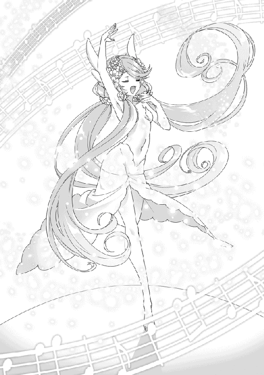

| レア・クラスチェンジ！V ～魔物使いちゃんとレア従魔の異世界ゆる旅～ | |
| 黒杉くろん | |
| TOブックス (2017) | |
ジーニアレス大陸へ繋がる大海原。魔物使い【モンスターテイマー】の少女レナとその一行は魔王国を目指して、航海に飛び出した。その道中は──従魔の［夢吐き］スキルで日本グルメを満喫したり、手に入れた新作衣装（無料！）でコスプレ三昧とパーティー感いっぱい！ 「最愛の従魔たちをいっそう可愛くしたい！」と願うばかりのレナに対し、突如海の王者エンペラー・クラーケンが襲来。船は沈没の危機に直面する。果たして、一行は無事に陸地へ辿り着けるのだろうか？一方その頃、ガララージュレ王国では、青の女王たちが着々と（？）戦力拡大へ動き出しており......。 過去最大のコスチュームでお届けする、疾風怒濤のコミカル・ファンタジー第５弾！ 書き下ろし番外編も収録！

イラスト：ちま
デザイン：BEE-PEE
プロローグ：精霊との戯れ
ラチェリのラビリンス〈青の秘洞〉。
お別れの挨拶をするために、久しぶりにそこを訪れたレナたちは唖然と立ち尽くしていた。
『みんないらっしゃーーい♪ ようこそー』
『素敵に模様替えできてるでしょう？ 私とシルフィネシアのアイデアをいっぱい詰めこんでみたの。どうかしらー？』
青く輝く空間には、二人の美しい精霊乙女がたゆたうように浮かんでいる。近寄ってきたシャボンフィッシュと時おり戯れながら、サプライズ成功！ とイタズラな笑顔でレナたちを迎えた。
姉フィーネ（姉のシルフィーネのことをレナたちはこう呼んでいる）は現在、力が弱まっていて見えないはずだが、このラビリンス内に限っては視認できるようだ。
「創造樹シルフィネシアの空間メンテナンスで、このラビリンスは一時的に閉鎖されているよね。精霊祭が終わって、みんながこの変化に気付いた時が楽しみだなー。ね、レナ」
「声が虚ろですよ、ルーカさん......。楽しみでもあり、反応が怖くもあり......ですね」
「僕なりにポジティブな発言をしてみたんだよ」
「投げやりの間違いでは？」
レナとルーカが遠い目をして、軽口を言い合う。
〈ラビリンス：青の秘洞〉は、水面のような天井をもつ青色の異空間。足元に生える背の低い木も、壁も、全てがさわやかな青色に染まっていて、シャボンフィッシュが輝きながら空中を泳ぐ美しい場所だ。今は精霊たちがノリノリで改装したため、より幻想的になっている。
『『すごーく広くなったー！ ひゃっほー』』
『木に、白い、お花が咲いてる......前はなかったよね。きゃっ！ シャボンの、泡が、出てきた！』
『風が気持ちいいねー。これもー、シルフィネシアおねーちゃんが生まれてからの変化ですー』
従魔たちがわいわいと感想を言って、最後に声を揃える。
『『『『何よりも、創造樹シルフィネシアの圧倒的な存在感ーー！』』』』
「「何あれすごーい」」
レナとルーカが呆れた顔で、空間の中央にドォンと鎮座する巨大な樹木を見上げた。
創造樹シルフィネシア。レナの血液を摂取した精霊シルフィーネは、大精霊にクラスチェンジした。最初は数センチだった若い乙女の宿り木は、今や百メートルもの大木に成長している。
豊かに広がる葉は、宝石のようなきらめきを持つ。黄緑色、緑色、水色、青色......絶妙な配色バランスだ。みんなで惚れ惚れと眺める。
「あ。葉っぱにシャボンフィッシュがキスしたよ」
シャボンフィッシュのボディがほんのりと葉の色に変わる。色付きフィッシュが空間を泳ぎまわる光景は、木の葉が舞っているようだ。
創造樹の木漏れ日は、地面に水面のような模様を映し出している。
『天井にも、じめんにも、水面があるのー。このアイデアとってもすてきでしょうー♪ レナのスマホの動画をみて、おもいついたのよー♪』
シルフィネシアが歌うように告げた。
シルフィネシアの歌声と風の心地よさに、みんなは自然にリラックスしている。
「自然を司る精霊のエネルギーがとても濃いから、本能的に落ち着くんだろうね......」
ルーカがぽつりと呟いた。
「本当に素敵な場所だね。シルフィネシアちゃん」
『うふふー♡ ありがとうー、レーナ♪』
「あ。でもこれだけ広いと、帰る時の穴を探すのが大変そう？」
レナが首を傾げた、その時。
精霊乙女たちが待ってました！ とばかりに手を叩いた。とっておきのサプライズを用意しているのだ。
『『パフォーマンス！』』
精霊の掛け声に合わせて、ぶわっ！ と強い風が吹く。驚いたレナパーティが足をふんばる中、何かがラビリンスの天井部分から急降下してきた。
小さな太陽が落ちてきたように錯覚する。アクアボディに天井の光をこれでもかと内包して、レナたちに向かってくる存在がいる。背の大きな翼を羽ばたかせて、レナたちの真上で急停止した。
パァッ！ と体内の光を一気に拡散させる！
眩しそうに目を細めたレナたちにウインクすると、くるりと宙返り。とても軽やかな動きで、大きな体躯なのに体重というものを感じさせない飛び方。誇らしげにフンッと鼻を鳴らし、シャボンの泡をぷくぷくと吐き出す。
「...............ああっ!?」
レナが声をあげた。
〝グルルルゥッ！〟
返答の鳴き声は野太い。聞き覚えがある。
『大丈夫よー。こわくないわー』
シルフィネシアが言う通り、レナたちはこの生物から威圧感を感じていなかった。あの時とはまるで雰囲気が違う。
「挨拶のための咆哮......だったのかな？」
『そうよ、だって』
レナたちの前に現れたのは、シャボンボディの幻黒竜！ つい先日、呪術師に［呪い感染］で操られ、レナたちが倒した個体と同じように見える。
レナは生唾を飲み込んで、ドラゴンを観察した。
鱗は潤っていて透明だ。シャボンフィッシュそっくりの爽やかなアクアボディ。瞳は金色。
▽シャボン・ドラゴンが 現れた！
「こんにちは......」
レナがぺこりと頭をさげる。従魔たちも真似をした。
（また、ここから始めさせてもらえるかな......？ 倒したこと、どう思ってるだろう......）
レナは心配していたが、ドラゴンはスッと会釈を返してくれる。
よしよしとドラゴンの頭を撫でたシルフィネシアが満足そうに頷いた。
『ちゃんと挨拶できて、みんなえらーい♪ そう、この子は前に会った幻黒竜よー。正しくは、ドラゴンの魂って言いかたかしらー？』
レナたちが目を丸くする。
『あのね。戦闘のつぎの日、森のなかで、さみしそうにただようこの子の魂をみつけたの。あんな死に方をして、未練があってとうぜんねって思ったから、魂をひろって、ラビリンスに招待したのー。［ラビリンスメイキング］でシャボンの器をつくって、この子の意思で生まれ変わってもらったんだ。大精霊になって、できることがたくさん増えたのはレナのおかげよ。ありがとうー♪』
「そうだったんだぁ」
レナは唖然と返事をした。話の規模がとんでもない。
（大精霊、すごい）
レナはホッと息を吐いて、まっすぐにドラゴンを見る。
「あの時は、痛い思いをさせてしまってごめんなさい」
......敵として現れたドラゴンは、ヒト族を無差別に攻撃してきた。レナたちも自衛のために反撃せざるを得なかったのだ。しかしドラゴンは操られていたので、攻撃は本心ではなく、討伐してしまったことにレナたちは心を痛めていた。
ドラゴンがレナを見つめ返す。
『グルルッ』
『──もういいよ、って。お互い様だから、うらみっこなしにしましょうねーって』
「！」
冒険者がドラゴンを殺した、という事実は消えない。しかし、現在のドラゴンは優しいシルフィネシアと共存し、彼女のお気に入りであるレナたちにも心を開こうとしている。
涙目で顔を上げたレナたちに、ドラゴンはシャボンの泡を、ぶくぶくぶく！ と吹き出す。
「うわっぷっぷっぷ!?」
『『『『きゃーーーっ』』』』
驚いた様子を見て、ドラゴンは愉快そうに尻尾を揺らした。戯れているようだ。
レナがへにゃっと微笑みかけると、ドラゴンが口角を上げてみせる。これで本当にお互い様だ。
『〝ウルルちゃん〟。パフォーマンスよっ』
シルフィネシアの号令で、ドラゴンが飛び上がって宙返りを決めてみせる。くるりっ！ 翼を羽ばたかせ、まるで泳ぐようになめらかな移動。レナたちは盛大な拍手を贈った。
『ラビリンス出口の穴まで、ウルルちゃんに乗って行ってもらうのってどうー？』
「えっ、すごい。大人気必至のスペシャルサービスだね」
『レナがそういうなら間違いないわねー♪ きーめたっ』
「ちょっとーー!? 決定権は私!? 責任重大すぎて胃が痛いよ......まず王様の許可を」
『あらあら。レナがいいって言って、わたしが気に入ったんだものー、いいわよー』
「困る！」
『大丈夫。大精霊がいちばん上だもんっ』
（大精霊の立場乱用、困るぅぅぅ）
なんとも軽ぅいノリで、アネース王国の一大事業の方針が決定してしまった。
レナは心労を癒すために、ラビリンスの美しい風景を眺める。青い景色とシャボン生物を見ていると、気持ちが穏やかになってくる。
『あのね？ シャボン・ドラゴンのウルルちゃん、ここには友だちのフィッシュがたくさんいるから、とってもたのしいって言ってる♪......でも、ラビリンスの外に心残りがあるらしいのー』
「はい......？」
何やらシルフィネシアがおねだりモードに突入してきた。レナが身構えて一歩下がる。しかし背後にはいつのまにか姉フィーネが！ 二面楚歌！
『私からもお願いするわ。ウルルはお母さんドラゴンが恋しいらしいの。だけど、シャボン生物はこのラビリンスから出られない......望んでここの子になったとはいえ、悲しいわねぇ。もしも、大精霊シルフィネシアの力が強化されたなら、解決できるかもしれないのだけど』
『『あらあらー、困ったわー？』』
レナの周囲を精霊たちが舞う。胸の膨らみがぎゅっとレナに押し当てられる。ナイスサービス。
▽レナは 逃げられない！
胸がぺったんこなことを気にしているレナは落ち込んで黙ってしまった。精霊たちがルーカに目を向ける。新たな標的になってたまるかと、女性恐怖症のルーカは解決策を口にした。
「えーと。大精霊を従属させることは不可能なので、レナの血で、シルフィネシアの能力のみを強化することが可能だと言えますね」
「こ、攻略されているー！ ルーカさんの裏切り者ーっ」
「精霊はきちんとレナに対価をくれるらしいらしいから。頑張って」
▽精霊からの期待が高まっている！
ルーカ曰く、レナの血は大精霊にとって良い影響しかないとのこと。血を提供するレナが、ちょっと痛い思いをするくらいだ。【☆７】［魔眼］ギフトを持つルーカの情報は確実である。
『私、もうお姉ちゃんだから......至高のデザートも、ちょっとは譲ってあげるの』
さらに、レナに吸血するのが大好きなダークフェアリーのリリーが、いじらしい成長を見せて、主人へのだめ押しとなった。本当に可愛いポーズをしている。
▽親バカレナは 逃げられない！
「け、血液......どうぞお納め下さいませ......っ！」
『わーーーい♪』
覚悟を決めたレナは首元の留めリボンをほどき、ええい！ と一思いに赤ローブを豪快にはだける。カッコいいー！ と主人贔屓の従魔たちから歓声が上がった。
『では、失礼して......リリーが、いただきまーすっ♡』
「あーーーーッ」
クラスチェンジしてから初めての吸血タイム。リリーの牙は成長していて、痛みが増している。レナが顔を白くしながら吸血に耐える！
「はい、そこまで。ストップ」
『......んむっ！』
ルーカ医師の確実な診断により、吸血が終わった。頬をぷくーっと膨らませたリリーが首筋から牙を抜く。女王様としての覚醒を終えた主人の血液は、以前にも増して従魔にとって素晴らしい嗜好品となっており、あまりに甘美な味にうっとりと表情を崩している。生かさず殺さず。なんとか次回の吸血をレナが許容ができる範囲でストップさせたルーカの手腕はさすがだ。［鑑定眼］と［心眼］、さらに称号［器用裕福］を併用したガチ仕様である。レナはぐったりしている。
リリーは口に含んだ血液を、いざ!!............乙女の名誉のために詳細は省こう。
創造樹シルフィネシアが、レナの血液を根っこから吸い上げる。
『んーーっ、からだがポカポカしてきて、さいこうにきもちいいよー♪』
シルフィネシアが頬を染めると......創造樹の幹が鮮やかな赤色になった。赤色はだんだんと樹の上部へ侵食していく......やがて、全ての葉がルビーレッドになる！
「「げっ」」
さすがにレナとルーカの顔が引きつる。従魔たちは無邪気に『きれー！』とはしゃいでいる。
樹の幹から葉から、全てが真っ赤っ赤。これはとってもやばそう。
『おいしかったーー！』
シルフィネシアがお腹を撫でると、赤色はパアッ！ と一瞬強く輝いて、創造樹はもとの爽やかな緑・青色に戻った。
ウルルを眺めながらシルフィネシアが小首を傾げる。やがて、花がほころぶように可憐に笑った。
『わーーい♪ わたしのはんけい百メートルを、いつでもどこでも、ラビリンスの領域と認定できるようになったよー♪ そのはんい内なら、シャボン生物をお外につれていくことが可能になったの！ もしお外でボディがはじけちゃっても、またラビリンスでよみがえるってー。これで......ウルルちゃんのお母さんを、さがしにいけるよっ！』
『まあ。良かったわねぇ』
〝グルゥ！ グルゥ！〟
シャボンフィッシュとドラゴンが勢いよくぶつかり合い、光をはじけさせ、キラキラの雨を空間に降らせる。そしてドラゴンとフィッシュは再び水面の天井から生まれて、静かに舞い降りた。
『『シャボン・ドラゴンはよみがえるよー♪ 何度でも、ね♪ ラララー』』
乙女たちは楽しそうに歌う。
楽しさが伝染したのか、クーイズがぷよぷよとお気楽に弾んだ。
『『よかったねー！ 精霊祭の時に、シャボン軍団で街を回ればきっとみんなビックリするんじゃない!? 信仰心が上がるかも！』』
『あっ。それ、いいねー。採用ー♪』
ノリで重大案件がまた採用されてしまった。レナが白目になる。
「うわぁ。精霊シルフィーネが姿を現してくれるどころか、まさかのキラキラシャボン軍団が街中を風とともに吹き抜けていくパフォーマンス？ これはまた、国民たちの信仰心ゲージが振り切れそうだね。うっ、くくくっ」
ルーカが耐えきれず、笑い声を響かせた。
後ほど、このトンデモ提案を聞かされた王様は目に涙を浮かべて笑い「楽しみです。せっかくのサプライズなので、皆には知らせず当日のお楽しみとしましょう」と愉快なたくらみに便乗する。だからレナ、強く生きてくれ。
『『はい、レナにお礼よ』』
精霊姉妹がそれぞれ一枚の葉っぱを差し出す。
姉のシルフィーネからは、緑色の葉っぱ。シルフィネシアからは、赤色の葉っぱ。
「こ、これは？」
『『エネルギーリーフよ』』
姉妹が口を揃えて答える。
『乙女の宿り木の一番上には、一枚だけ特別な葉が存在するの。それがエネルギーリーフ。だいたい百年もあればようやく育つくらいかしらー？ これには精霊の力がたくさん詰まっているのよ。貴方の大切な存在に食べさせてあげるといいわ』
『んーとね。おねえちゃんのはっぱは、風と水のすごーい加護がつくでしょ♪ わたしの赤色のはっぱは、精霊を大精霊に成長させちゃうくらいの力があるのよー♪ さっき、レナのけつえきにもらった力の一部をぜんぶコレにこめてみたんだ。わたしののぞみは、ウルルちゃんをお外にだしてあげることだからー。それいがいのパワーはぜんぶ♪ このはっぱに入ってるの♪ けつえき、ごちそうさまでした〜！』
「..................どういたしまして。......えっ。こんな大変なもの私がもらっちゃっていいの？」
『レナたちにはいっぱい助けてもらったもん〜』
『サービスサービス♡』
▽レナは 断れない！
▽エネルギーリーフを 手に入れた！ ×２
これはまた、どえらい物を手に入れてしまった。いい加減、手持ちアイテムのレア度が天元突破している。他人に見つかったら相当やばそうだ。だから早いうちに使わないと。しかし現在でも、クラスチェンジ済みの従魔のレア度がヤバい。
（葉っぱを与えて今以上に強化しちゃう？......どうしようかな？）
「なんか疲れちゃったから......ひとまず寝ようか......」
レナの脳キャパシティが限界を訴えた。ふて寝......いやいや、ラビリンス内でお昼寝して夢を見て、ハマルの初［夢喰い］を試すことにしたのだ。これだけ心地いい空間なら、きっといい夢が見られるに違いない。
『スキル［体型変化］ー。大きくなーれ』
張り切ったハマルが巨大化する。もっふもふゴールデンベッドに埋もれるようにして、レナたちはすぐにスヤスヤと寝息を立て始めた......。
爽やかな風、乙女たちのやさしい歌声が上質な眠りを運んでくれる。さらに、進化したハマルは毛の感触が以前よりも格段に良くなっている。一度このベッドを体験したらもう、夜ごとハマルを求めずにはいられない。人をダメにする極上のもふもふだ。今回は［快眠］スキルを使っていないが、この環境でリラックスできないはずがない。
ハマル本人も瞳をつむってウトウトしている。夢喰い羊が夢をストックするのは、起きていても寝ていても可能なのだとか。
『『おやすみなさい。わたしたちの 愛おしい友だち』』
精霊が優しく微笑む。
☆
あまりの心地よさに、レナたちはうっかり長時間お昼寝してしまった。この間にもラビリンスの整備が行われて、新しく創造樹にみのった風鈴の実が「リリリン」とどこか懐かしい日本の夏の音色を奏でる。シルフィネシアはアニメで観た風鈴が気に入ったのだ。
『おはよー レーナ♪』
まずレナが目を覚ますと、すぐさまシルフィネシアが舞い降りてきた。寝ぼけたレナはつい、いいこいいこ、と撫でてしまう。姉フィーネが『大精霊もレナの子どもみたいねぇ』と笑った。
「今、何時だろう......？」
〈マスター・レナのご用件を確認しました〉
〈現在の時刻は十六時です〉
ぼんやりとしたレナの呟きにスマホが即座に対応する。地球産のスマホは魔物に成長中だ。
「っ」
乙女たちの休憩時間は、ちょうど十六時までと聞いている。そのあとは領主と精霊祭の打ち合わせらしい。......ということは、レナたちは早くラビリンスから出て精霊を解放してあげなくてはいけない。
「慌ただしくてごめんね！」
『『また遊びましょうねー♪』』
レナたちがシャボン・ドラゴンに乗る。アクアボディの背中部分にくぼみができており、レナたちが振り落とされる心配はなさそうだ。ふわっと浮かび上がると、歓声があがった。並走する精霊たちにレナパーティが手をふる。
『『ひゃっほーーう！ もっとトばしてトばしてどうぞーーっ！』』
『きゃっ！ シャボンが顔に、当たった......つめたい。キラキラ。クスクスクスッ』
『うわわー、足が地面についてないとちょっと怖いよぉー......』
従魔たちはスペシャルアトラクションに大はしゃぎ。
「またね、シルフィーネ、シルフィネシア。ウルルも」
「今日は素敵な舞いをたくさん見せてくれて、ありがとう！ 本当に素晴らしかったよー！ またたくさんお話しようね。スマホさんのフレンドコールに二人の名前も登録されたから」
レナがスマホを指差して笑いかける。精霊はにこやかに頷いた。
ウルルがぐんぐんと上昇していく。現在のラビリンスの出口の穴は、水面のような天井のすぐ近くだ。天井の輝きが眩しくて、皆が目を細める。
眼下には、青く美しい自然の景色と泳ぐシャボンフィッシュの群れを見ることができた。ラビリンス〈青の秘洞〉はこれから、世界的な観光名所となるだろう。
大切な友だちを見送った精霊の姉妹は、静かに顔を見合わせる。お互いに、とても幸せそうに微笑んでいた。送迎を終えたウルルと少しだけ戯れると、精霊祭をアネース王国民により楽しんでもらうべく、打ち合わせに向かう。羽のように軽やかな足取りは、彼女たちの気持ちの高揚をあらわしているかのようだ。
夢喰い
昼間の賑やかさも次第に落ち着いてきて、ラチェリの街は穏やかな夜を迎える。昔から受け継がれてきた伝統的な街並みが、軒先に飾られたランタンの光にぼんやりと照らし出されている。
よいこのレナたちは夕方には宿に帰ってきていた。すっかり顔なじみになった受付のお姉さんには、近頃「赤の女王様ー、サインちょうだい？」などとからかわれてしまう......曖昧な笑みでジョークをスルーして、レナたちはそそくさと部屋に入っていく。装備品を外してラクな格好になると、のんびりと夢喰い羊ハマルにもたれかかった。
「......夕食を作る前に。ラビリンスで見た夢のチェックをしてもらいましょう！ ハーくん、お願いね。うまく故郷の調味料をとり出せるといいなー」
『『ドンドンぱふぱふーーっ！』』
『はーい、おおせのままにーレナ様ー。ボク頑張りますー』
和やかな雰囲気の中、ハマルに注目が集まる。ハマルが虚空を見つめて何かを考えているような様子を見せると、少し大きくなった綿雲のしっぽがふよふよと揺れる。その内部にきらめく数個の星は、みんなが昼間に見た夢だ。
『えっとねー。多分だけどー、緑色の光がクーイズ先輩の夢でー、赤色のがリリー先輩の夢かなー。白金色のお星様はルーカ。レナ様の夢は今回はオレンジの光みたいだよー』
「そうなんだ。見た夢の内容と星の色が関係してるのかな？」
「おそらくその通りだね」
ルーカティアス、実に便利な青年である。颯爽と新スキルの指導を始める。もはや皆はこの展開に慣れきっており驚く様子もない。
「ハマル。目を瞑って、しっぽの光に意識を集中させてごらん。どれかひとつに絞って、内容を視たいと念じてみて。そうしたら夢に干渉できるはずだよ」
『おおーさっすがー。んじゃ、やってみまーす』
ハマルは瞳を閉じると、ウトウトと船を漕ぎ始めた。あれ？ とレナたちがルーカを見つめると頷きを返されたので、どうやらこれでいいらしい。
「［夢吐き］で〝物を取り出す〟には、詳細な情報が必要なんだ。どれを持ち出すのか。それはどのような見た目、機能か選別する必要があるから、意識のほとんどを夢覗きに割かなくちゃいけないんだよ。集中するために眠っているんだと思う。夢の内容が曖昧なままでも吐き出せるのは......おそらく〝現象のみ〟。例えば、ひどい大雨に降られてしまったとか、とても上手にダンスができた、とかは可能だと思う。これらは攻撃とか、相手の動きを操って混乱を招くために使えるかな」
「わ。それなら、例えばダンスの夢を［夢吐き］したらハーくんは踊り出しちゃうんですか？」
「夢の内容が〝みんなが踊った〟というものなら周りの人々も一緒に踊り出してしまうだろうね。だいたいの認識はそれで合ってる」
なんともすごーいスキルだ。使いどころを間違えれば大惨事になりえるが、楽しいイベントに幅広く使えそうである。ハマルを中心に人々が手を取り合い、混乱しながらもくるくると踊る様子を想像したレナはクスクス笑った。眠るハマルを囲んで、先輩従魔たちが、自分たちはどんな夢を見ていたんだろうね、と楽しそうに会話する。
「きっと結末は幸せな夢なんだろうな。今がとても楽しいでしょ？」
ルーカが照れながら言うと、みんなが『ナイスポジティブ！ よくできました』と褒めた。
ハマルが目を閉じてから二十分ほど経った頃、白いヒツジ耳がぴくぴくと動きだす。夜空のような藍色の瞳が、ぱっちりと瞬いた。そして、いつものように眠たげにとろんと半分ほど瞼をおろす。
『......むにゃー...』
「おはよう。ハーくん」
『はーい、レナ様ー。おはようございまーす。ただいま意識が戻りましたぁー。夢の中のレナ様ね、キッチンでお料理してたよー。見たことない道具がいっぱいの場所だったからー、多分、故郷の風景だったのかなぁ？ ボクね、〝この国の調味料をお恵み下さいませんかー〟って、ヒト型になって話しかけてみたのー。夢の中のレナ様はボクのこと知らないからビックリしてたけどー、やっぱり優しかったよ。なんと！ いくつもの調味料をまとめて籠に入れて、ボクに持たせてくれましたー』
「おー！ 夢の中の私ナイス！ そして初見の人を絆すハーくんの可愛さもさすがだねぇ」
『えへへー、あとで縛って踏んで下さいませー。では。［夢吐き］いきまーすっ』
『『ぱふぱふーーっ！』』
（初めて『踏んで』って言われちゃったなぁ......お兄ちゃんとも話したのかな......？）
レナが遠い目で考え始めたが、調味料と聞く現れるとそちらに意識をもっていかれる。夢で兄に遭遇したなら仕方ない。
（それよりも今の食欲だ！ ハーくんは......あとでちょいちょいと足先でつついてあげようかな......）
ハマルは綿雲のようなしっぽを一振りした。
『スキル［夢吐き］ー。対象は、レナ様がお料理してる夢......いでよー〝お好み焼きセット〟！』
しっぽ内部のオレンジの光がふっと消える。
そして綿雲状の尾がもくもくと大きさを増して......ぽーん！ と籠に入ったお好み焼きセットが飛び出してきた！ 内容は、お好み焼きソース、マヨネーズ、鰹節に青のり、だしの素。トッピング一式が勢ぞろいしている。だしの素はオマケだろうか。お好み焼きセットを具現化したしっぽは、元の大きさに戻っている。まるで打ち出の小槌のようだ。
「まさかのお好み焼きセットとは。んー、キャベツと豚肉でしょ。つなぎの山芋は、アネース王国産のヌラヌライモを代用すればいけそう。チーズもあるし。うふふ！ みなさーん、今日の夕飯は〝お好み焼き〟に決定しました！ キャベツと豚肉、チーズをヌラヌライモで固めて焼いたものに、美味しいソースをかけるお料理です。ハーくんにお礼を言いましょうね。ありがとう」
『『『ありがとーー！』』』
「ありがとう。ハマル、お疲れ様」
『えへん。どういたしましてー』
ご機嫌になったハマルがえへんと鼻を鳴らす。［夢吐き］はたくさんの魔力を消費するため、他の夢は今回はハマルのエネルギーにしてしまった。［夢喰い］スキルはハマルのお腹を満たして魔力を回復する。
現在泊まっている宿には、各部屋にささやかなキッチンが備え付けられている。
「キャベツを刻んで、蒸して潰したヌラヌライモ、チーズ、卵、薄力粉、だしの素を加えて混ぜます」
「「お手伝いー！ まぜまぜー」」
「ひっくり返すよ」
「うわーお！ レナ様とっても上手〜」
「ご主人さま！ トッピング、やりたいなぁ」
幼児姿の従魔たちがお好み焼きの仕上げをする。ボトルからソースをちゅーっとまとめて出して、ぺたぺたとスプーンで生地の上に広げる。マヨネーズで模様を描いて喜び、鰹節で隠れてしまってちょっぴり落ち込んでいた。そして指についたソースをペロリと舐めて、目を輝かせる。
従魔たちはクラスチェンジを果たしたものの、ヒト化した姿への影響はまだ表れていない。ルーカによると、レナの体質で例外的にクラスチェンジが早かったため、世界の情報整理が追いついておらず、成長のタイムラグがあるのだろう、とのこと。異世界ラナシュは仕事が遅い。リリーは妖精姿では少女、ヒト型では幼女という面白いことになっている。
「いただきまーす！」
レナの号令に合わせてみんなが挨拶をして、しばらく無言でお好み焼きを口に運び、舌鼓を打った。いつもは甘えて、レナにあーんをねだる幼児たちも、今は夢中で珍しい味を味わっている。
ラナシュにはないけどレナにとっては懐かしいソースの味が皆の表情をとろけさせている。レナはなんだか嬉しくなった。
「「「「最後の一切れは、あーんして欲しいの」」」」
クレハ、イズミ、リリー、ハマルが期待した上目遣いでレナを見つめている。色とりどりの澄んだ瞳がキラキラ輝いている。
「ちょっ、この子たちもう可愛すぎじゃありませんか......!? はぁー癒されるぅ」
「スマホでみんなの動画をとってあげるよ。はい、食べさせてあげてレナ」
▽レナが リリーに あーん！
「あむ！」
▽レナは 崩れ落ちた。
可愛さに身悶えしたあと、レナは笑顔で自分のぶんのお好み焼きもみんなに食べさせて、ルーカは写メ＆動画撮影に余念がない。ばっちりピントを合わせてみせるスマホさん。そんな光景にツッコむ者はこの場にいないのだ。
わいわいと楽しくご飯を食べて、お腹は満たされた。新しい調味料セットも手に入ったし、心も幸せいっぱい！
お風呂に入ったレナは、ふかふかハマルクッションにもたれかかりながら、パトリシアに精霊祭のお誘いの電話をする。
「スマホさん。パティちゃんとお話がしたいんだけど......あ、でも今時はお食事中かもしれないか」
〈マスター・レナのご用件を確認いたしました〉
〈現在のパトリシア・ネイチャーは......花の寄せ植え鉢を試作中のようです。マスターからの通話は作業の障害になり得ない、と判断いたしました〉
〈呼び出し中......呼び出し中......〉
「私贔屓すぎじゃない!?」
フレンドのプライベートも主人のためなら赤裸々に公開してみせるスマホは、従魔たちと同じタイプに成長しているようである。
〈ん？ レナぁ？ もしもーし〉
レナの目の前の空間に、四角い電子ウィンドウが浮かび上がる。水やり中の、花職人パトリシアの姿が映る。
「パティちゃん！ 久しぶりだねー」
レナが明るく言うと、少し拗ねたような声が返ってきた。
〈そーだなー、久々！ 最近、レナは全然私に電話してこなかったもんなー？〉
「あ。ごめんごめん。ちょっとバタバタしてて......心配かけちゃったかな？」
〈かなり〉
「か、かなり？ ごめんね」
〈いや、まあ諸事情あっただろうし、仕方ないよ。ちょっと私が寂しかったくらいで。......いや、ほんと、私のことは別に良いんだけど......レナ、覚悟しとけよ。あと二人が、やばいぞ〉
「んっ!?」
（諸事情......って、何かお察しされてる!? 不穏なんだけど。......あと二人......）
レナの表情がピキッと固まる。続くパトリシアの声は同情に満ちていた。
〈モスラとアリスがさー。もう、めちゃくちゃ怒ってんの。あとで特大のお説教がレナにあるだろうなー？ 頑張ってくれ〉
「ひいっ！ な、なんで？ みんな、何をどれくらい知っているの？」
〈そりゃー、ラチェリにタチの悪い呪術師が現れた、ってアネース王国中で指名手配されてたし？ ちょうどラチェリにいるレナたちは大丈夫かなーってみんなで心配してた所に、『赤の女王様の一団が苦戦しつつも呪術師を退けた！』って一報だろ。あ、これはルルゥが極秘で手に入れた表には出てない情報だけど。あとなんかモスラが急にヤバげな魔法覚えてたしさ。よからぬトラブル、あっただろ？」
「ありました」
レナが天を仰ぎながら白状する。どうあがいても言い訳できない。
「ううう。好き好んでトラブルに巻き込まれてるわけじゃないんだよおおお」
「それは分かるけどなー。主人が苦戦してたってのに助太刀に呼ばれなかったモスラは無言で身体鍛え始めるし、アリスは怪しく笑いながら呪われた魔道具集め出すし、みんなレナが好きだからこそ心配が暴走してるんだよ。私も、レナが危ない時にモスラ呼ばなかったことにちょっと怒ってたけどさ。その怒りも冷めるくらいの二人の気迫。正直あれはやべぇ〉
「うわああああ！ モスラが頼りないから呼ばなかった訳じゃないんだよ!? ほら、魔物姿のモスラってかなり目立つでしょ。まだアネース王国内の住民権とか、立ち位置がどうなってるかも分からない状態で無闇に呼び出して迷惑をかけたくなかったんだ。それに、もし敵と間違われてモスラが攻撃されちゃったら、たとえ味方でも、私は主人としてその人たちに制裁せざるを得ないから。それもかなりマズイし......。呪術師との戦闘では、ホワイトマッチョマンが咲くお花の種に助けてもらいましたぁ！ それでもどうにもならないようなら、モスラの呼び笛を吹こうと思ってました！ って、是非モスラとアリスちゃんにお伝え下さい！」
〈ふぅん。なるほどねー。まぁ、伝えてはおくよ〉
「パティちゃん愛してる！」
〈従魔への配慮をバッチリしてたレナに、さらに愛情が募らないか心配だけどな〉
レナは撃沈した......もうどうにもならないらしい。モスラの筋トレも、アリスのありがたい苦言もさらに多くなりそうだ。ヒツジの金毛にぐりぐりと頭を埋もれさせているレナを、小さな従魔たちがよしよしと撫でてやる。口を挟めば面倒なことになりそうなので、ルーカは画面の外で黙っていた。
レナの凹み具合を見たパトリシアは、ささやかな助け舟を出した。
〈モスラも平気そうに見えて寂しがってるからさ。用事とかなくてもいいから、また早めに笛で呼んでやって。そうしたら溜まり溜まった主人への愛情も発散されて落ち着くだろう。溜め込んどくと煮詰まるぞ〉
「そうだね。従魔の心のケアもご主人様の勤めだから」
〈うん。従魔と主人の繋がりってかなり特別なもんなんだろ？ アリスもモスラの主人だけどさ、レナへの気持ちはまたそれとは違う......なんつーか、崇拝？ みたいなもんを感じるし。モスラは商人付きの執事として毎日多忙だけど、息抜きも必要だし、アリスが呼び笛の遠征許可を出してるから気軽に呼びなよ〉
「ありがとう。モスラは魔人族の姿が大人だから、甘やかしそこねちゃうけど、今度会ったらいーっぱい褒めてあげなくちゃね！ そして真剣に、連絡不足を謝ろう......」
〈ぷはっ！ そうしな！〉
パトリシアは愉快そうにケラケラ笑った。
〈モスラは特例でアネース王国の住民権を既に獲得してる。魔物姿についても広く周知され始めてるぜ。トイリア領主が頑張って手を回したらしい。レナの元までギガントバタフライ姿で駆けつけるのも、問題ないはず。アネース王国内の上空飛行許可は出ているし、国を抜けてからは上空を飛んでいけば、姿に気付くやつも早々いないだろ〉
強大な新種魔物が街に住む、ということを不安に思う住民もいたが、ギガントバタフライの魔人族モスラが街の広場で優美に微笑むと、誰もが美貌の執事に魅了された。モスラは［カリスマ］の称号を取得したようだ。美幼女主人アリスと共に街を歩く様子はとても絵になるので、トイリアの隠れ名物となっているとか。
ここまで雑談して、レナはようやく本題に入る。
「ところで、パトリシアちゃん。精霊祭の日、一緒にお祭りを見て回らない？」
〈......あちゃー。うそだろ。せっかくレナからのお誘いなのに〉
「お花屋さん、忙しい？」
画面のパトリシアは苦笑している。
〈んー、悪いね。その日は花屋の開店の日なんだ。精霊祭の日はいちばん縁起が良いから、たくさんの店が新装開店するんだよな。それに、今年は精霊様が街にいらっしゃるなんて噂もあるから、いい加減な仕事見せらんないし、商売人たちはみんな気合いが入ってるよ。私も頑張って、店舗を綺麗な花で埋め尽くすんだ〉
「応援してるよ！ また別の機会に遊ぼう」
〈へへ。ありがとな、レナ〉
「そうだ。シルフィネシアちゃんとシルフィーネさんにも、フラワーショップ・ネイチャーの開店を宣伝しとくね」
〈ちょっと待て〉
レナにとってはもう日常となった善意だったのだが、パトリシアは精霊だの大精霊だのと新たな事情を聞いて、頭を抱える。
〈相変わらず規格外すぎるぞ。レナに目をつけた呪術師は、もし見かけたら全力でぶっとばすとして......。精霊様とお友達？ 実力ある冒険者を赤の信者として大量確保？ アネース国王とは会談済み？ あげくに......大精霊シルフィネシアを育てたのはレナの［レア・クラスチェンジ体質］ぅ？ なんて濃い生活を送ってるんだ！ 呆れるわ！〉
「私だって穏やかな生活を送りたいですぅ！ 不可抗力！ 圧倒的運命のいたずら！」
レナたちは小声で叫ぶように話した。
......気がつけば、もうかなり長く話してしまっている。従魔たちはウトウトと船を漕ぎ始めて、目をこすっていた。リリーは小さな手で、ハマルは毛づくろいをするように、スライムたちはくにょーんと体のハリを緩めている。
ルーカが「（今日はちょっと冷えるからブランケットを受付で借りてくるね）」とレナに告げて、静かに部屋を出ていこうとして、ドアノブの静電気にあたって小さく悶絶した。
「パティちゃん。そろそろ寝るね。あとアリスちゃんにこれだけ伝言を頼んでいい？ 赤い装備品をいくつか見繕って欲しいの」
〈ん。了解。アリスが張り切ってるこのタイミングで頼むって、レナは度胸あるな〉
「ひえぇ」
〈大商家スチュアートの秘蔵っ子、アリスの手腕がうなりまくるだろうぜ。対価はあるの？〉
「これ。ジュエルスライムのスター・ジュエル」
〈ひっえ！〉
レナの手中で輝くトンデモ宝石を見て、先ほどまでレナをおちょくっていたパトリシアも悲鳴をあげた。
お互いにちょっと疲れたが、それでも久しぶりの長電話をとても楽しんで、和やかに通話を切る。アリスは商業試験をひかえているので、もし勉強の妨げになるようならば赤い装飾品収集はあとまわしでいい、とレナはパトリシアにお願いした。アリスが試験前に無茶しないように、直接電話しなかったのだ。
特別な精霊祭を楽しみにしつつ、レナたちはゴールデンクッションに頭を預けて、暖かいブランケットにくるまって仲良く眠った。
精霊祭
快晴の精霊祭！ 空までこの日を心待ちにしていたかのようだ。精霊たちが姿を現すかも、という噂を聞き、国中の人が期待に満ちた明るい顔をしている。街の随所でカラフルなタペストリーが風にはためいている。精霊シルフィーネたちを歓迎します、という昔ながらの意思表示だ。加えて、白と青の花束がいたるところにみられる。風と水の乙女シルフィーネをイメージしている青と緑。それに光属性を併せ持つという大精霊シルフィネシアをイメージした白だ。
花屋はどこも大忙し。小さなお花屋さん〈フラワーショップ・ネイチャー〉にも、早朝からたくさんのお客が訪れた。丁寧に世話された花々は大好評。
よそから来た観光客らは、特別出店の屋台をわいわいとめぐり、アネース王国中が大変な活気に満ちていた。
信仰心を存在のよりどころとする精霊の力がさらに高まっていく。
「そろそろか」
「きたぞ！」
昼前になると、各街の中央広場に大きな音声拡散魔道具が運ばれてくる。祭り衣装に身を包んだ国属器楽隊がズラリと整列して、高らかなラッパのファンファーレをついに響かせた！
〈アネース王国器楽隊が、精霊祭の始まりをここに正式に告げます。風と水の乙女シルフィーネ様が日々与えてくださる、豊かな自然の恩恵に心からの感謝を！ 大精霊シルフィネシア様の誕生に祝福を！〉
わああああっ！ とても大きな歓声が上がった。人々はそれぞれ脳内で、自分なりの美しい精霊乙女をイメージする。そして、アネース王国に恵みを与えてくださることに感謝します！ と純粋な気持ちで強く念じた。
清らかな信仰心により、弱っていた精霊乙女たちが頬を染めて目覚める。気が遠くなるほど長い間......ゆっくりと氷のように冷たくなっていった体に、あたたかい魔力がぐんぐん巡っていった。肢体はまろやかな白みを帯びていき、豊かな乙女の髪は若葉を思わせるみずみずしい緑色に染まる。唇の端をきゅっとあげた。
「！」
宿り木を守っている警備隊員が絶句する。宿り木の幹近くに、神々しいオーラを纏った美少女が現れたのだ。宝石のようなブルーの瞳が、国民をやさしく見つめている。なんて眩しい。
「......シルフィーネ様でいらっしゃいますか？」
『そうよ！ 私たちの愛しい子』
美しい微笑みに、数人がふっと卒倒しそうになる。それを見ておかしそうにくすくすと笑ったシルフィーネは、軽く手を振り、ふわっと空に上る。
『街の方をお散歩してくるわね。みんなに、私たち精霊からの感謝の気持ちを伝えたいの』
空中で優雅に一礼。遠方のシルフィーネたちもいっせいに同じ動作をした。風が爽やかに香る。
『アネース王国のみなさん。シルフィーネが確かに存在することを、今までずっと信じ続けていてくれてありがとう。姿を現さない精霊を信仰し続けるのは大変だったでしょう？ でも、貴方たちが信じてくれていたおかげで、シルフィーネは力を取り戻しました』
「......そんな、こちらこそ......！ いつも我々を見守って下さって、本当にありがとうございます。シルフィーネ様にはどれだけ感謝しても足りません！ 感謝しているのは私たちでございます」
『ふふっ、シルフィーネがアネース王国の土地を富ませるのは当然よ。風と水の乙女は、アネース王国を、その民を愛する精霊なのだもの』
「......話に聞いていた通り、なんて慈悲深くお優しい方なのだろう......！」
ほろほろと涙を流す国属魔法使いと警備隊員にとびきりの笑顔をみせたシルフィーネは、ついに彼女たちを心待ちにする街の住人に会いに飛び立っていった。
シルフィーネが街の上空を優雅に吹き抜けていく。本当にシルフィーネ様がいらっしゃるぞ!? と驚愕している国民たちを空から眺めて、楽しそうに笑う声はまるで鈴が鳴るよう。まだ、精霊たちの身体はほんのりと透けている。爽やかな新緑の香りが街中にふんわりと漂う。若葉の髪を揺らすシルフィーネを目にした誰もが、一瞬で心を奪われてしまった。
たまに地上付近に降下しつつ、空中散歩を自由に楽しむシルフィーネ。彼女たちを追って、あっちへこっちへと、街の住民は慌ただしく大移動した。それに気付いた乙女が手をふると、信仰心がまた上昇する。もう上限がみえない。
『みなさん。私たちシルフィーネの存在を信じていてくれて、どうもありがとう！』
「「「精霊様─っ!!」」」
声援は熱く、シルフィーネの心を高揚させていく。
☆
王都は地方に輪をかけてさらにすごい騒ぎになっている。
なんと、大精霊シルフィネシアが現れたのだ！
ラビリンス〈青の秘洞〉のシャボン生物たちと共に、空を全力で駆け抜けるという、非常識......圧倒的なパフォーマンス！ シャボンフィッシュだけではなく、海ガメやらイルカ、果てはクジラなど、様々なシャボン生物が作られていた。時おりパチン！ パチン！ と弾けて、王都に輝くシャボンの雨を降らせていく。
一団の中でも特に目を引くのはもちろんシャボン・ドラゴン！ そしてその隣を悠々と飛んでいるのは......漆黒の体を持つ巨大な〝幻黒竜〟。子と再会を果たしたウルルの母ドラゴンである。シルフィネシアに誘われ、このパレードに参加していた。
〝グギャルウウウウッッ!!〟
二体のドラゴンはいかめしい咆哮で人々の注目を一気に集める。アネース王宮の真上で数回旋回してみせ、くるりっ！ と鮮やかな宙返りをする。精霊祭でドラゴンの演舞が行われるなど、誰が想像していただろうか。
この演出が行われる直前、シルフィネシアは巨大な『水鏡』を街の上空にいくつも作り出していた。縦百メートル、横六十メートルの楕円形の水鏡がなんと数百枚も出現し、シルフィネシアとドラゴンたちを、映画館ばりの大迫力で映し出す。音声を拡散させて届けるのも、風の精霊にとっては造作もない。ショーを〝魅せる〟ための激しい視点変更は、大精霊ならではの力技。遠くの者にもショーを楽しんでもらえるように配慮した。
シルフィネシアも、ドラゴンたちと一緒にくるりくるりと宙返りを披露する。心底楽しげな澄んだ笑い声が、王都中の人々の耳にスッと届いた。
本来なら恐怖心を誘いかねない厳しいドラゴンの舞いも、大精霊シルフィネシアという特別な存在が素晴らしいショーに昇華させている。
映像背景として選ばれてしまった王宮に勤める者たちは、ドラゴンが羽ばたくたびにごおおっ！ とえげつない強風に煽られて、王様も含めて全員が驚愕する事態となったが。
このとっておきの迫力はシルフィネシアからのサービス♡だ。王様はこのシャボン生物との演舞の打診があったことを皆に内緒にしていたが、気合いを入れまくったパフォーマンスの数々に自らも驚かされて、従業員の驚き顔を楽しむどころではなくなってしまった。王都から沸き起こった盛大な歓声により、王宮の皆はようやくハッと我に返る。手が痛くなるほどの拍手を、敬愛する精霊シルフィネシアたちに贈った。
王子と姫たちがおかしそうに笑い、父に話しかける。
「ははぁ、父上。大精霊様との内緒の会談はこの打ち合わせをしていたのですね」
「皆を驚かせようと内緒にしていたのでしょう！ それにしては父上もたいそう驚いていらっしゃるけど。ふふふ」
「大精霊様に敵うはずがなかった......というところでしょうか。予想していたよりもさらに素晴らしい舞いを見せて下さったから、驚いたのですよねっ？」
第一王子が最後にそう尋ねて笑顔で王様を見上げると、王様は照れたように笑った。水色の目が優しく弧を描いている。
「ふむ。......はははっ！ まこと、そちらの言葉の通りだ。ラビリンスの生き物たちとの舞いを見せたい、とはあらかじめ大精霊様から打診されておった。だが......まさかドラゴンと共に、とは！ 予想外きわまりない！ ふはははっ。とても素晴らしく、幸せな気持ちだ。皆を驚かせられると我一人でほくそ笑んでおったのだが。いやはや、我も驚かされる側の一人となってしまうとは」
「楽しい祭りですねっ」
「間違いない！」
ご機嫌な王様と王子たちは、王都がよく見わたせる王宮のテラスから、光に包まれた街を眩しそうに見つめ続けた。
☆
大精霊シルフィネシアはドラゴンとの舞いを終えると、一礼して、王都の中央広場の噴水の上に軽やかに降り立つ。ふわっ！ と長い緑髪がなびく。──水鏡の撮影視点を中央広場に変えた。これから〝ライブ〟を行うのだ。
神々しいオーラに魅せられて黙り込んでいる国民たちにパチンと軽快にウインクを飛ばす。そして、片腕を大きく振ってアピール！ いえーい！ と可愛く顔の近くでピースサインする。
『アネース王国のみんなー、はじめましてー！ わたしは創造樹シルフィネシアだよー♪ ラチェリのラビリンスの大精霊なの。またラビリンスにもあそびにきてねー♪ みんなに楽しんでもらえるように、今、ラビリンスを改装しているの。シャボン生物たちといっしょにみんなのこと待ってるからね！ アネース王国が大好きだから......これから、精霊としてのおしごと頑張るよー♪ どうかシルフィーネとシルフィネシアをよろしくおねがいしまーすっ。わたしのことはネッシーって呼んでねー♡』
「「「......おおおおおおお！ シルフィネシア様ぁー！」」」
ネッシーのアピールが終わると、広場からは空気がビリビリ震えるほどの大歓声が上がった。ご老人など涙を流して拝み始めている。しかしシルフィネシアは、ぷっくりと頬を膨らませた。
『むぅ！ みんなとなかよくなりたいから、様、なんてつけてほしくないのよー。さぁさぁ♪ ネッシーとお呼びーー♪』
「「「......ネッシー！ ネッシー！ ネッシー！」」」
『はあーーーい♪ みんなよくできました。おれいにお歌をうたうね。ラララ〜♪』
ネッシーがスッと息を吸い込み、ソプラノの声を響かせる。そのリズムに合わせて、頭上ではシャボンフィッシュたちが踊るように泳ぐ。地表には水面のような光の模様が現れた。全員が夢の中にいるように、歌声に聞き惚れる

ネッシーが歌い終わって一礼すると、また大きな歓声が上がった。
「なんなんだ......大精霊様のこの愛らしさは、胸の高鳴りが止まらん！」
「信仰せざるを得ないでしょ、こんなの。ネッシー美しい！ 美しいですぅ！ もう信者になっちゃいますぅーー！」
「俺、この国に移住するわ」
「わ、私も......！」
またもネッシーは信者を獲得した。精霊祭の後、アネース王国に多数の移住希望者が押し寄せ、王様たちはしばらく忙しく対応に追われることになる。
ネッシーの一礼で、至るところで黄色い悲鳴やら野太い歓声が上がり、爺さま婆さまたちはもう火起こしできそうなほど手のひらをすり合わせ始めた。
『またねー♪』
創造樹アイドル・ネッシーはぶんぶん手を振ると、ひとまず王都の中央広場を後にした。大精霊は一人しかいないため、これからたくさんの街に挨拶をして回らなければならない。いったん水鏡を蒸発させる。ふわっ、ふわっといたずらに飛行しながら、アネース王国中の街を訪れて破竹の勢いでファンを増やしていった。
☆
ネッシーはアネース王国の玄関口である小都市トイリアへ。途中でラチェリから駆けつけた一番近しい姉のシルフィーネとも合流して、上空からとある店を探す。
『んー......フラワーショップ、ねいちゃー？ あったー！』
『まあ。綺麗な空気のお店ねぇ。花が生き生きと咲いているわ』
『ね！ レナのおともだち どんな子なんだろー。たのしみ！』
ネッシーとシルフィーネは手を取り合うと、風に乗って急降下して、赤屋根のパトリシアの花屋にするりと入り込んだ！ 商品を痛めてしまわないように、シャボン生物たちは外で待機させる。
身体のすぐ隣を精霊にすり抜けられたお客たちがぎょっと目を剥く。レジで会計をしていたパトリシアがうっかりお釣りを落とした。まさか、狭い店の中に精霊が二人も訪れるだなんて！
『みーーつけた！ レナのおともだちーー♪』
「やっぱりレナ関係の事案かー！ う、うおっ!?」
風にのった勢いのまま、ネッシーが勢いよくパトリシアの首元に抱きついた。さすがにネッシーだけならまだしも、風の勢いまでは支えられなかったパトリシアが後方にすっ飛ぶ。壁で後頭部をゴンと打ってしまった。
『わわっ！ ごめーん』
ネッシーの手が淡い緑色の光を帯びると、パトリシアの頭に当てられた。大精霊が治療するまさかの光景に「おお」と店の客から感激の声が上がる。パトリシアが顔を引きつらせながらお礼を言った。
『あらあら、勢いをつけ過ぎたのねネッシー。パトリシアさんは女性なんだから、もっとやさしく触れてあげなくちゃ駄目よ。ごめんなさい、がすぐ言えたのはえらいけれど、次からは気をつけましょうね。私からも謝らせて。パトリシアさん、ごめんなさい』
『はーい！ お姉ちゃん、わたし、りっぱなしゅくじょになりまーすっ』
精霊様に謝られてしまった......あまりの恐れ多さと、突き刺さるギャラリーの視線がパトリシアの精神にダメージを与えていく。
「ネ、ネッシーって？ 大精霊様のこと？」
「えっ。店主さん女の人なの!?」
シルフィーネの発言にざわざわとツッコミが入る。いつの間にやら妹をネッシーと呼ぶようになっていた姉の現在のニックネームはフィーネだ。二人合わせてラチェリの美少女精霊アイドルユニット！
（女の人!? とか驚いたやつらは全員表に出ろ、喧嘩は買う）
少年のような見た目にコンプレックスがあるパトリシアは、ニッコリと迫力のある笑みを浮かべた。が、口には出さないので短気だった彼女も成長している。
彼女の保護者的立場であるゴルダロとジーンは一瞬身構えたが、ホッと息を吐いて、マイペースに花の鉢を補充する作業を再開した。普段は剣士・魔法使いとして冒険者業をしている彼らは、今日はパトリシアの店の臨時従業員として働いている。ホッとしたのもつかの間、手にした花が揺れ始めている。おや？
シルフィネシアは立ち上がったパトリシアの隣に並ぶと、レジの向こうからお客たちにピースサインをしてみせ、明るく自己紹介した。
『創造樹シルフィネシアでーす♪ ラチェリのラビリンスにいる大精霊なんだよー。みんな、したしみを込めてネッシーって呼んでね♪』
『私はラチェリのシルフィーネよ。そうねぇ、フィーネって呼んでもらえるかしら』
パチンと二人でウインクして歌声を響かせる。ほうっとみんなが聞き惚れる。
「「「ネッシー！ フィーネ様ー！ 素晴らしいです」」」
『あ！ いっけなーい、もうこんな時間！』
と、ネッシーが店内に飾られた時計を見て目をまん丸にした。
『まだ、べつの街にも挨拶にいかなきゃいけないのー......ごめんね、みんな。またあそびにくるからね♪』
もちろんパトリシアの店に来るのだ！ 〈フラワーショップ・ネイチャー〉は後に、精霊たちのお気に入りの花屋として大陸中に名をはせる有名店となる、なりゆき（と書いて運命と読む）だ。
「「「ご来訪をお待ちしております！」」」
パトリシアよりも早く、信者となったお客たちが最敬礼して答える。
パトリシアは、ぼそっと控えめな声で挨拶した。どうか精霊に深読みされますように。
「......本日はご来店、誠にありがとうございました。またのお越しをお待ちしておりまーっす......」
『うん♪ またくるねーー！ ここに！』
『隣街だから、トイリアにはすぐに来れていいわよねぇ』
『『パトリシアはお友達よ♪』』
（まじかよ、社交辞令がそのまま本心として受け取られちゃったじゃん！）
純粋な精霊は言葉の裏を読み取らなかった。これは、彼女たちと今後も付き合っていく覚悟をキメねばなるまい。
パトリシアの懐の袋がもぞもぞと動き出す。護身用の魔改造花種が入っている。
「.........げえっ!?」
恵みに満ちたネッシーとフィーネには、生命エネルギーを活性化させる力があるのだ。
▽パトリシアは大慌てで 袋をレジの上に置いた！
▽開花！
▽スーパーシャボン・マッチョマンが あらわれた！ ×１００
小さな十五センチほどのシャボンマッチョたちが一斉に、店内をスーパーマンポーズで飛び始めた。片方の腕を突き上げ、もう片方は曲げたポーズで水平にビュンビュン飛んでいる。
店内は大混乱。子どもたちが「何これ!? 新発売の魔法おもちゃ!?」などとはしゃいでいる。ネッシーが面白がってマッチョマンを指でつつくと、パチン！ と弾けた。マッチョ水滴が降り注いだ他の花の茎は、根元がぷくーっと膨れ上がり、何やら赤みがかった蜜を貯めている。パトリシアが眉を顰めつつ花鑑定をしてみると......
［ムキムキハニーフラワー］......茎にプロテインエキスを溜める花。エキスを飲んだ者は素晴らしい肉体美を手に入れることができる。
「ぎゃーー!? どえらいもんができてるっ！ ジーン、全部の花の鉢に結界張って！ このシャボンマッチョの水滴が付かないようにっ。超変化してやがる！」
パトリシアが叫ぶように、唖然とマッチョマンを眺めていたジーンに指示を出した。幸いにもマッチョ水滴は人体には影響がなくて、まだ被害がまし......かもしれない。
「ええ!? ちょ、俺、杖を裏方においてきてる。杖無しで魔法を使うと、かなり魔力を取られるんだけど」
魔法使いはみんな魔力の燃費を良くするパッシブ・スキルを取得している。しかし、杖を持っていなければ他の職業と同じように魔力を消費してしまうのだ。つまり途方もなく燃費が悪くなる。魔力が残り少なくなると体調が悪くなるため、ジーンはためらっている。
「あとで魔力回復ドリンク奢るからっ！ 店主が指示してんじゃん、早くしてってばー！」
「うっ！ その強気な物言い......なんか、僕......ドキドキしてる気がしなくもなくもないというか......！ やらせて頂きます。大変ありがとうございます。もっと強気に言ってくれてもいいかも」
「お前きもちわるい」
諸事情あり、この魔法使いジーンに変装していたルーカが色々とやらかしたせいで、変身元ネタのジーン本人が、称号［マゾヒスト］を取得してしまったのだった......。とばっちりである。悪影響がありすぎる。
「風魔法［ウィンド・ホール］」
ジーンの結界により、花の鉢は無事守られた。シャボンマッチョマンたちはしばらく経つと、全てが弾けて消えてしまった。見た目がミニマッチョであることを除けば、シャボンボディも弾けた水滴の光もとても綺麗なので、お客たちはこの見世物を楽しんでいたようだ。最後のマッチョマンが消えた時には、拍手が沸き起こった。
『すごかったねー！ あのシャボン生物、いったい何だったのー？』
いったい何だったのか、はこっちが聞きたい......と思うパトリシアだった。大精霊相手にそんな口は聞けないが。
すっかり長居しちゃった、とつぶやきながら、精霊姉妹はようやくパトリシアの店を発つ。シャボン生物たちとドラゴンがその後ろにぞろぞろと続く。
『『またねーーー♪』』
空からぶんぶん手を振る精霊信者たちを眺めながら、嵐のような乙女だなぁ......とパトリシアがぼんやり考える。精霊シルフィーネの物静かで清らかなイメージは儚くもガラガラと崩れ去った。
（ドッと疲れたな......ん？）
精霊を見送るため店外に出ていたお客たちが、目を輝かせて〈フラワーショップ・ネイチャー〉を覗き込んでいる。
視線の先には、精霊に好かれているらしい店主と、咲き誇るいくつものおもしろフラワー。
スライムグミフラワー、食用鬼アザミ、マシュマロ綿花、回転ヒマワリ、などなど。パトリシアが創り出したオリジナルの花の種が、精霊の恵みの歌に影響を受けて発芽し、注目を集めていた。
この瞬間、パトリシアの店は普通の花屋としてやっていくことが不可能になった。
おもしろフラワーショップ・ネイチャー誕生の記念日は精霊祭当日。縁起がいいのでは？ とでも思わないとやってられない。
「何これ!? このお花、お菓子みたいな甘い匂いがする。もしかして食べられるの？」
「こっちの綿花の白いふわふわ、すっごく触り心地いいよー。弾力があって......わっ、指が押し戻された。まるでマシュマロみたい」
子どもたちがはしゃぎ、大人がパトリシアにおもしろ花購入のお伺いをたて始める。
「あのー、すみません。こちらの花を売って頂けたりは......？」
この花の種は店で取り扱う予定がなかったので、棚にしまい込んでいたのだが。......パトリシアは吹っ切れた。もうヤケクソである。にこやかな笑顔の仮面をばっさり捨て去り、冒険者時代を思い出せる、どこか凶暴な印象の表情でニヤリと笑う。保護者たちが「あちゃー」と、残念な子を見る目でパトリシアを眺める中、啖呵を切った。
「っしゃあ！ この花を買いたい人は手ェ上げてくれ！ あるもの全部、売ってあげるよ！」
お客たちから歓声が上がる。
「ただ、まだ値段をつけてないから競りになるぜ？ 商業ギルドの一般売買品目に登録はされてるから、誰に売っても問題はない品だ。そこは安心してくれていい。まずは、これから！ ［超速スライムグミフラワー］......植えた瞬間に種が芽吹いて、実をつけるまで育ち続ける。だいたい収穫まで五分、そっから三十分間はスライムグミが食べ放題！ もいでももいでも実るっつー大食いの人向けの商品だなァ！ すでに咲いてる花じゃなく、種を売るよ。まずは３００リルから！ どーだい？」
「３５０リル！」
「な、なんの。４００リル！」
とうてい花屋とは思えない威勢のいい声が飛び交い、おもしろフラワーの種が次々と買い付けられていく。
およそ二時間後には、店内の花鉢、既成のブーケも含めて全てが完売してしまった。お客も帰り、すっからかんになった店内には疲れきって床に座り込む店主と従業員たち。開店の日がまさかこんな事態になるとはね......と誰ともなしに呟いて、乾いた笑い声を漏らした。
お宿♡の夕飯作りとベッドメイキングを終えたルルゥが、差し入れのサンドイッチを手に花屋を訪れる。商品がひとつも置かれていない棚と床に座り込む仲間たちを見て、パチパチ瞬きした。
「どうしたのぉ？」
「......話せば長くなる」
「いいわ。もうお宿♡の仕事は済ませてきたから聞きましょう」
──全ての話を聞いたルルゥはひたすら楽しそうに笑った。
「あははは！ なかなか、こんな愉快な経験できないわよ！ パトリシア。レナちゃんのお友達になった時点で、こうなる運命だったんじゃないかしら。うふふ♡ トラブルを楽しんじゃえばいいんじゃない？ 忙しくて大変だっただろうけど、お花も全て売れたし、いい日に思えるわ」
「まーね。お客さんみんな笑顔で帰ってってくれたもんなー。......嬉しかったよ。私の育てた花を喜んで買ってくれてさ。夢だった花屋を開店させられて、売れ行きも順調なんて、私って恵まれてるよなぁ。精霊様にも会えたんだし。身体はたしかにしんどいし、花屋としての先行きも不安だけど、なんか心は満たされてる感じがするかも」
「おめでとう。それがマゾヒストへの目醒めよ」
「ちげーだろ。ルルゥ、からかわないでくれ」
「うふふ♡」
「そーいうのはジーンに言ってやれば？ 喜ぶっしょ」
パトリシアが雑に話を振ると、ルルゥは嬉々としてジーンをからかい始める。二人は恋人同士ではないものの、なかなか仲良しだ。ルルゥのことが好きなジーンは、役得なのではないだろうか。
差し入れのサンドイッチをいっせいに齧る。
パトリシアは、満足そうに口をもぎゅもぎゅ動かし、「おいひい、ありがと」とルルゥにお礼を言った。ひとつめのサンドイッチを飲み込んだ四人は、大きなグラスを手に持つ。体力回復ドリンクがなみなみ注がれている。ガチン！ と強めにグラスを打ち合わせた。
「精霊祭と〈フラワーショップ・ネイチャー〉の大繁盛に！ 乾杯ッ！ みんなお疲れさん！」
「「「かんぱーーーい！」」」
〈フラワーショップ・ネイチャー〉はこれからも長きに渡り繁盛していく。ラナシュ商業史に名を刻む、おもしろフラワーショップの名店として。大事なことなので強調しておこう。
アリスとモスラと精霊と
トイリア高級住宅街に佇むスチュアート邸には、いつも静かで穏やかな時間が流れている。精霊祭の当日でもまるで変わらない。木の葉の揺れる音や小鳥のさえずりしか聞こえてこない。商業試験に向けて資料室で勉強をしていたアリス・スチュアートは、肩の凝りを自覚してうーん！ と大きく伸びをした。
「あ。いけない。二時間も座りっぱなしだったわ。どんなに集中していても、身体を少し動かした方が、長い目で見たら脳の働きが良くなるのに。気をつけなくちゃ」
そう独り言を呟いて、紅茶のカップに手を伸ばす......しかし、すでに飲み干していた。残念そうに眉尻を下げるが、絶妙なタイミングで執事モスラが姿を現す。レナの従魔にして、アリスの執事の両方を務める魔人族の青年だ。魔物姿はギガントバタフライという巨大な蝶々である。
「お疲れさまです、アリス様。三時になりましたので、焼き菓子と紅茶をお持ちいたしました」
「素晴らしいタイミングね、モスラ。ちょうど一休みしようかと思ってたの。相手の気配や気持ちを察する技術にさらに磨きがかかってきてる。貴方がスチュアートの執事でいてくれて頼もしいわ」
アリスが嬉しそうに笑うと、モスラも微笑んだ。
「恐れ多いお言葉、大変光栄に感じております。アリス様の執事として不足のないよう、これからも精進してまいります」
「うん。私も負けていられないなぁ。今回の商業試験の対策はもうバッチリだけど、まだまだ理解できていない商業流通の常識は多いし......勉強しなきゃいけないことは山ほどある。頑張らなくちゃ。ただでさえ、初対面の人には『幼い女の子』って不安な目で見られるんだから。そこはしっかりした対応力でカバーしてみせるわ。ゲイルお爺さんから受け継いだバイヤー・スチュアートのブランドは、私が絶対守ってみせる」
幼女商人アリスは読み込んだ参考書に手を添えて、気合いの声を上げた。モスラは、邪魔にならない位置にティーセットを配置する。
「きっと全てうまくいきますよ。アリス様は聡明ですし、こんなにも頑張っていらっしゃるのですから」
お互いを褒めちぎって少し照れたのか、アリスとモスラは耳をほんのり赤く染めて、くすっと笑った。
資料室の机は濃いブラウン、高級陶器の白がよく映えている。音もなく注がれる紅茶はアップルティー。湯気の香りをすうっと吸い込んだアリスは、幸せそうに表情を緩めた。
（これは先日知人に紹介されて取り寄せた、小さな農家で手作りされている林檎チップブレンドの茶葉ね）
［鑑定眼］を使わなくても、アリスは香りと見た目だけで商品を見抜く。
（味よし色よし香りよしの、まさに逸品なんだけど、製造数が少ないために一般市場に流すことはできなくて。個人用にってお願いして在庫を少しだけ買い取ったの。スチュアート邸でのおもてなし用にしようかな、って話しておいたはずだけど、モスラったら......）
「私、贅沢しちゃっていいのかしら？ まだ試験に合格もしてないのに」
アリスが困ったようにモスラを見上げると、
「お祭りの日ですからね」
と柔和な声が返ってくる。だから気兼ねなくアフタヌーンティーを楽しんで下さい、と気遣われた。モスラの甘やかしを、アリスは甘受することにした。
カップは二つ。この屋敷にはアリスと執事の二人のみが暮らしているので、来客がない限り一緒に食事をしている。最高級の紅茶には、あまーいチューレ蜜がほんの一滴落とされた。これはアリスのぶん。モスラのカップには、底に固まりになって沈んでしまうほど大量のチューレ蜜が注がれている。蝶々魔物のモスラは超甘党なのだ。
「「いただきます」」
同時にカップを傾け、ひと口。甘酸っぱい林檎の風味で、疲れがじんわり溶かされていくようである。
「ふあぁ、美味しいねぇ」
「ええ。とても贅沢な味です」
「モスラの紅茶はほとんど蜜の味なんじゃないの？」
「とんでもない。紅茶の風味とチューレ蜜が混ざり合っているからこそ、素晴らしい味に仕上がっているのです」
「やっぱり、チューレ蜜が主役なのね！ チューレ蜜の紅茶割りだー」
おかしそうな笑い声が響く、幸せなひととき。
──ふと、窓の隙間から風が吹き込んできた。スチュアートのお屋敷の防犯設備は完璧なはず。窓と窓枠の間には一ミリの隙間とて存在しないのに。
（窓は開けていなかったけど）
......アリスとモスラは不審者を警戒して、緊張した面持ちで風が吹き込んできた方に視線を向けた。
▽とんでもない美少女が窓の外側にべったり張り付いている！ ×２
せっかくの美貌が台無しの残念すぎる格好だ。ぎょっ！ と肩を跳ねさせたアリスとモスラ。二人の反応を見た姉妹は、お腹を抱えて大笑いした。今回ばかりはフィーネも妹の愉快なたくらみに乗っかってしまったのだ。
『『あ〜け〜て♪』』
コンコンッと軽く窓を叩く、緑髪の乙女たち。アリスとモスラは行動を迷っている。資料室は二階。おまけにお屋敷の外壁には悪党を退けるための様々なトラップが仕掛けられているので、美少女が窓に張り付いているのはどう考えてもおかしい......。混乱しているアリスを、モスラがまず背にかばう。乙女たちはキラキラの神々しいオーラを纏っている。
「どっ、どどどうしようモスラ......！ あ、あの精霊様たちはどなたなのかしら!?」
「落ち着いて下さいませ、アリス様。ご自分で精霊様と発言なさっていますよ。お察しがよろしいようで。......お一方から、レナ様の気配を感じます。従魔の仲間ではないようですが、何かご縁があったのでしょう。事情があって私たちの元にいらしたのかもしれません。......窓を開けてもよろしいですか？ 何かあれば私が対応致します」
「......ええ。うう、取り乱しちゃって恥ずかしい......」
「珍しい表情を拝見しましたが、それもアリス様の魅力のうちですよ」
モスラは安心させるようにアリスに優しく言葉をかけると、静かに歩んで、窓を開けた。
精霊乙女たちがふわっとモスラの横をすり抜けて、室内に降り立つ。通り抜けざまに二人は『いいこいいこ』と執事の艶やかな黒髪を撫でてやっていた。目を丸くしているモスラをとりあえず放置して、ぴしっ！ とアイドルポーズを決める！
『シルフィネシアのネッシーと♪』
『シルフィーネのフィーネは♪』
『『ラチェリの精霊姉妹なのよー♪ ラララ〜』』
出会い頭に恵みの歌を歌う。自由なものである。精霊＝敬愛すべき気高い存在、と認識していたアリスは目を白黒させていたが......うっとりと聞き惚れていた。恵みの歌は自然エネルギーに満ちていて、心を落ち着かせるのだ。
歌い終えた二人は美しく一礼する。アリスとモスラは旋律の余韻に浸りながら、心を込めて拍手を贈った。
「精霊様......！ あのっ、お歌、すごく素敵でしたっ！」
▽ネッシー＆フィーネは 信者アリスを得た！
「本当に美しい歌でした......声にほのかにレナ様の魔力が混じっていて、調和がとても素晴らしかったです」
▽レナ女王様は 過激派信者モスラを得た！
ラチェリにいるレナはこの時、くちゅん！ とくしゃみをしていた。
『『ありがとう』』
ネッシー＆フィーネは手を振りながら微笑む。アリスは幼女らしい無邪気さを垣間見せて、しばらく瞳をキラキラ輝かせて精霊を見つめていたが、ハッ！ と我に帰り、慌てて表情を引きしめる。モスラがクスリと笑った。
「精霊様......！ 本日はスチュアート邸にお越しくださり、誠にありがとうございます。当屋敷の主人、アリス・スチュアートでございます！ 以後、お見知りおきを頂けますと幸いです。どのようなご用件でいらしたのか、伺ってもよろしいでしょうか？」
「アリス様に仕える執事のモスラで御座います。兼業でレナ様の従魔も務めております」
アリスとモスラが挨拶すると、ネッシーがぱあっと表情をほころばせる。
『あ！ やっぱりね〜。レナの気配がしたから、ここに従魔さんがいるとおもったんだよー♪ あなたは緑魔法を扱うから、私がレナに与えた祝福の影響を受けたのね〜』
ネッシーはモスラをじいっと眺める。祝福の影響、と聞いてすぐにピンときたモスラは、大精霊シルフィネシアに深く頭を下げた。
「私が風の極大魔法［サイクロン］を取得したのは、大精霊シルフィネシア様の恩恵なのだと......［伝令］スキルでレナ様から聞いておりました。誠にありがとう御座います。ご加護を頂けたこと、光栄に感じております。御礼を伝えるのが遅くなってしまって申し訳御座いません。......戦闘に貢献していなかった私まで恩恵を授かってしまって、よろしいものかと悩んでいますが......」
『ぜーんぜんかまわないのよー♪ レナの従魔はみんな、わたしの姉妹みたいなものだもの〜♪』
ネッシーの言葉を聞いたモスラは目を瞬かせた。
「！ 失礼にあたる質問でしたら申し訳御座いません......シルフィネシア様は、レナ様の従魔、なのでしょうか？」
『ううん。おともだちよー♪ でもねぇ、レナの血液をちょこっと提供してもらったの。そしたらちからがみなぎってきて、大精霊になれたんだよー！ あなたがわたしとの繋がりをかんじているのは、それが理由だとおもう〜。したしみを込めてネッシーって呼んでほしいな♪』
「そうでしたか。レナ様はさすがで御座います」
▽モスラの 対レナ信仰心が 上がっていく！
主人贔屓のモスラは感激している。それから真剣な声で、目力を強めてネッシーを見た。
「......レナ様の血液の効果については、今後、声に出して話さないようお願い申し上げます。この屋敷内には傍聴魔法遮断の仕掛けが施されておりますが、外はそうではありません。精霊様のお声を拾おうとする者はたくさんいるでしょう。レナ様の血液が、ええと......ネッシー様に影響を与えたことは、双方のために知られない方がよろしいかと」
『あっ、そうだねー！ えへへ、うっかり』
『あらあら。気をつけましょうね、ネッシー』
『はーい！ お姉ちゃん』
ゆるい。危なっかしい精霊姉妹の様子に、モスラはなんとか柔和な表情を保ちつつも、内心冷や汗をかいていた。そして主人レナの血にとんでもない成長促進効果があるという事実に、肝を冷やす。リリーから『ご主人さまの血液を飲むと、それだけで、強くなった気がするの！』とは聞いていたが、まさか従魔ですらない精霊にも影響を与えてしまうとは。ひょっとすると、全ての存在に影響を及ぼすものなのかもしれない。
（この屋敷で執事業をしたいとお願いしたのは私です。しかしこのような事態となると、レナ様のお側で守ることができない事が心苦しく、とても心配ですね。せめて有事の際にはお呼び頂けるといいのですが）
軽くため息をついた。
アリスも複雑そうな顔をしている。モスラがネッシーに釘を刺したので発言は控えたが、レナを守るためより良い装備品をもっと集めなければ！ と燃えていた。
（呪いの装備品集めが捗るね！ ねぇ......レナお姉ちゃん？）
不穏な思考である。呪いの装備は幸運値が高い人物には悪さができない。よって、運［測定不能］の超幸運なレナの強い味方となるのだ。呪い装備は扱いが難しいので、別格の魔法付与効果を持っていても眠らされている品が多い。どの取引先に声をかけようか、とアリスは早くも策を練り始めた。
『ウルルちゃーん』
ネッシーがシャボン・ドラゴンの名前を呼ぶと、外で待機していたウルルは鼻先を窓枠に突っ込む。
「わ!?」
驚いたアリスは後ろに引いた。かぱっ！ と開いたシャボン・ドラゴンの口にネッシーは躊躇なく手を突っ込み、宝石を取り出す。フィーネが羊皮紙を見せた。
『どうもー、精霊ゆうびんでーっす！ お品物と証書をお届けにまいりましたぁ〜♪』
（恐れ多い郵便配達すぎるよ!?）
どうせ依頼主はレナである。ということは、宝石は破格の高級品だろう。アリスはこわごわと宝石を両手で受け取って、目を見張る。
（完璧な丸い形の宝石。直径約四センチ、表面にはスターの輝きが見られる。種類はガーネット、サンストーン、ターコイズ、エンジェライト。ハイレベルな魔法効果を付与すれば、どれほどの価値を持つだろう！ 私の【☆５】［鑑定眼］でも全ての価値を測れない......それほどまでに価値の高い逸品ということ......。出処は、進化したクレハとイズミ以外ありえないね）
アリスがきゅっと唇を噛み締める。
（宝石に細工を施す際に重要な、魔法付与耐久値が視えないなんて......すごく惜しい！）
己の力不足を自覚して悔しがっているアリスに、ネッシーが羊皮紙を差し出した。
『宝石のかんていしょになりまーす♪』
『赤の宣教師製なのよ』
硬度、組成、魔法耐久値、向いている付与魔法の組み合わせの例が数十組、ルーカの流麗な文字で書き記されていた。至れり尽くせり！
アリスの顎がカクンと落ちる。
「こちらは......レナ様がおっしゃっていた〝信用できる昔馴染みの友人〟が作成されたものでしょうか？」
モスラが目を細めて尋ねる。
『そうだよー♪ えっとね......ジミーっていうの！』
『今回は気をつけられたわね、ネッシー。実はジミーは偽名なのだけれど、本名は、またレナか彼に直接聞くといいわ。あの子にも複雑な事情があるようだから、私たちが話さない方がいいでしょう。そのうち呼び笛を使うと言っていたから、彼にも会えるはずよ』
「そうでしたか。ご説明ありがとう御座います」
表情は少し硬いが、モスラが柔和な声で返す。
（また厄介な人物とのつながりができているんですね？ 心配は増えるばかりです）
モスラとアリスは顔を見合わせて苦笑する。自分たちもかなりの厄介事にレナを巻き込んでしまったことがあるのだ。
しかし従魔がいるとはいえ、男性とも長い旅路をともにするのはどうなんだろう、と考えるとルーカの存在は不安である。フィーネは〝彼〟と発言していたのだ。リリーが同行を許したなら善人なのだろうが......レナへのお説教が増えた。
まあ何かあれば、アリスとモスラも全力でサポートするつもりでいる。だからこそ、レナには遠慮なく頼って欲しかったのだが。
『レナがね、モスラを呼んだらたくさん撫でてあげようって言ってたわ』
フィーネのこの一言でモスラは機嫌を持ち直す。察したアリスが肩を震わせて笑いを堪える。
「こちらの宝石のお代はどうしましょう？ ネッシー様」
『えっとねー、いつでもいいって、レナは言ってたの！ 赤のそうびと、とうかこうかんねー♪』
引き換え保証も要求せずにこれほどの宝石を預けておくということは、それだけレナはアリスを商人として信用しているのだろう。気合いが入るし、アリスも機嫌が良くなった。
「分かりました。じゃあ、今回の試験には絶対合格して、商業界でたくさん活躍しなくちゃね。一番良い条件で、信用できる取引先にスライムジュエルを売ってみせる。良い商品はそれに相応しいだけの名誉と金銭的評価を授かるべきだもの。最高の対価をレナお姉ちゃんに届けよう！」
『頑張ってー♪』
「アリス様なら必ずや大成できますよ」
「あはは、プレッシャーかけるね、モスラ？ でも、プレッシャーって大好きなの。期待された方が私は頑張れるんだ」
「存じ上げております」
「いつもありがとうね！」
何やら楽しげな主人と執事を見て、精霊姉妹もこの雰囲気に混ざりたくなったらしい。再び一曲。今度は〝勝利の歌〟を披露する。二人きりの観客を前にした贅沢なライブだ。
用事を終えた精霊姉妹は、また窓からするりと飛び出していった。
『『またね〜♪』』
手を振るアイドルたちの、輝かんばかりの笑顔にあてられたアリスはほうっと吐息を漏らし、屋敷の外に控えていたガチ幻黒竜に心底ビビって飛び上がり、恵みの歌によって成長してしまったパトリシア寄贈のおもしろ種の処理に忙しく追われることになった。（モスラが対処した）
そして、精霊が去ったあとのスチュアート邸には穏やかな空気が戻ってくる。紅茶はすっかり冷めてしまっていたが、冷めると風味が変わって美味しいという発見があったので、良い巡り合わせだった。冷めても美味しいなんて本当にいい商品ね、とアリスが言い、モスラもにっこり微笑んだ。
「クリームを絞るためにタルトの生地はあらかじめ冷ましておりましたので、予定していた休息時間とはズレてしまいましたが、今の時間からでもおいしく召し上がって頂けます」
焼き菓子の皿をモスラが勧めると、アリスは嬉しそうに手を伸ばす。
「あなたが作ったんだもの、絶対美味しいわ。もう、見た目からして美味しい！」
舌の肥えたアリスがそう言い切るほど手の込んだモスラお手製のおやつは、チーズクリームタルト。甘さ控えめのクッキー生地に、純白のチーズクリームが見ばえよく波状に絞られている。中央にはブルーベリーと黄緑色のブドウ、ミントが飾られていた。白、青、緑の組み合わせは、今年の精霊祭を祝う特別なものだ。
「いただきます」
「どうぞ、お召し上がり下さいませ」
うずうずしていたアリスは、今だけ！ と言い訳して小さなタルトを素手で持ち、かぷっと齧りつく。チーズクリームが舌の上でなめらかにとろける。熟成魔道具で甘味を引き立てられた果物がとても美味しい......夢中になり、ボリュームのある一つのタルトをあっさりと平らげてしまった。残りのタルトが乗ったお皿を悩ましそうに見つめている。
「どうぞ、アリス様」
自分の分を食べ終えたモスラが、それぞれの取り皿におかわりを問答無用で乗せた。
「うっ。ふ、太るぅ」
「後ほど運動するなら、お付き合い致しますよ。二つ目もおいしく召し上がって下さると、作った者としてはとても嬉しく思います」
「.........いただきます」
「はい」
「甘い〜」
タルトを口にして、罪の味にアリスは顔をとろけさせる。アリスはやや柔らかめな身体を気にして食事制限しているのだが、食べることが元々大好きなのだ。主人に尽くすことが趣味のモスラが作ったタルトは材料が工夫されていて、できる限りカロリーは控えめになっている。それを聞いたアリスがまた物欲しそうな顔になったので、モスラが「三つ目がキッチンにありますよ」と言うと恥ずかしそうに頷く。結局、一人で三つものタルトを平らげた。今日は精霊祭だし！ がアリスのなけなしの言い訳である。
ふと、モスラが髪を手で触っていることにアリスは気付く。仕事中に彼が髪をいじることなど珍しい。アリスが、にまーっと笑いながらモスラをからかう。
「とっておきの美髪トリートメントがあるんだけど。貴方のために倉出ししましょうか？ レナお姉ちゃんに頭を撫でられるのに相応しい髪なのか......って、気になってたんでしょう」
「......さすがで御座います、アリス様。人が商品を欲している気配は見逃しませんね。......はい。是非、よろしくお願い致します」
モスラは驚きと恥じらいが混ざった表情でアリスにお願いした。さっきまでいじられる一方だったアリスは勝ち誇った笑みを浮かべる。
「従業員割引で九割引にするね。東方の国の椿って花から作られたトリートメントなの。いい香りよ。とはいえ、モスラの髪は今でも十分綺麗だと思うけど？」
「ご好意感謝いたします。まだまだ。ご主人様たちのために、どこまでも自分を磨きたいのです」
「やっぱり、貴方は最高の執事ね！」
──精霊を目にした者の元には幸運が訪れる。アリスとモスラに贈られたのは、穏やかでとても幸せな休息時間であった。
甘い香りがほのかに残った資料室で、アリスはやる気十分で勉強を再開する。モスラは退室してキッチンに向かい、今日もヘルシーな絶品コース料理を作るのだった。
☆
精霊祭は例年にないほどの盛大な盛り上がりをみせ、シルフィーネたちが従来の力を取り戻すほどの信仰心を集めた。乙女たちの清らかで美しい歌声は、人々の心に絶大な感動を与えたのである。濁った目をしていた闇職たちですら、どこか表情が明るくなっており、夜になってもなお、アネース王国の街の熱気は冷める様子がなかった。精霊祭後は犯罪が大幅に減少して、精霊たちのファンクラブができ、国にとって良い影響をもたらした。
レナパーティの旅立ち
精霊祭が無事に終わり、レナたちは二日後にラチェリの街を発つことになった。どうして二日後なのかと言えば、お祭りの屋台群に興奮したレナがついつい食べ過ぎてしまい、翌日は体調を崩してぐったりと寝こんでいたからである。過ぎた食欲は身を滅ぼすのだ......と、青白い顔で残念な教訓を生み出していた。
▽赤の宣教師により 有難いお言葉として 広められた！
なんという悲劇。かっこ悪い。
「アネース王国を出国してから自然保護区域の草原を抜けて、ジーニアレス大陸に渡るための大船がある港街を目指そう」
そう話し合った。
港街は数ケ国が共同で資金提供を行って作られた、とても活気のある所らしい。アネース王国を含むミレー大陸のいくつかの国々、そして魔王国、それぞれが自国の特産品を扱う商業店舗をかまえている。それを聞いたレナと従魔たちが目を輝かせたのは言うまでもない。美味しい食べ物がたくさんある気がする！ とはしゃぎ、自分が生んだ教訓をさっそく忘れているレナであった。
「ラチェリの街を発つのは早朝がいいよね。赤の信者たちに最敬礼で見送られてしまう可能性があるから......先手をとる！」
「頑張れー」
「ルーカさん、応援が雑！ 貴方も行くんですからね？ もっと張り切って下さい！」
「僕が張り切ると悪運が発動するかも」
「大人しくしてて下さいね。いいこいいこ」
従魔たちが大笑いした。今後、レナパーティはこの調子で進みそうだ。
旅立つ日が来た。レナは目立つ赤ローブの上に、さらに一回り大きな薄茶色のローブをはおって、見つからないような対策をしている。クレハとイズミはフードの中。小さくなったハマルを肩に乗せて、姿を消したリリー、ジミメンルーカと共にこそこそと街路を歩いていく......。
まだ薄暗い、人気の少ない通りを抜けて街の出入り門へ。こぢんまりした門のそばには顔見知りの門番の姿が見えた。彼にこっそり「また是非お越し下さいね。お待ちしております、赤の女王様」と暖かい言葉をかけられたレナは、あっけなく泣き笑いの表情になってしまった......なんだかんだラチェリの街にも長く滞在していたため、愛着が湧いていたようだ。
街をそっと振り返ると、上空で輝く風をまといながら宙返りしているネッシー＆フィーネが見える。笑顔で手を振られたので、レナたちも大きく手を振り返す。
「何度経験していても、友達とのお別れは寂しいな......また絶対会いに来ようね」
空元気で仲間たちに明るく話しかけて、レナはなんとか笑顔を保ったまま、すんっと鼻を鳴らす。が、くるりと踵を返して、ひっそり静かに街を出る。クールな退場である。
「「「いってらっしゃいませぇ！ 赤の女王様ー！」」」
「きゃーーーー!?」
......そんなはずがなかった。
まるで示し合わせたように各家から、脇道から、一斉に信者が飛び出してきて、いつの間にか特訓されていたと思わしき揃った動きで最敬礼をとる。ピシッ！ 腰は直角九十度！ 圧巻のサプライズお見送りである。信者力が試されている！ が彼らの合言葉だ。
目を丸くするレナ。さらに、精霊姉妹が旅立ちの歌を高らかに歌い上げた。歌に反応した植物がみるみる成長し、精霊の友達の旅立ちを盛り上げようとばかりに大輪の花を咲かせる。
なんともレナたちらしい、騒々しい旅立ちとなってしまった。この信者力を育て上げた赤の宣教師が隣で満足そうな顔をしている。つねっておこう。
（目立ちたくなかったはずなのにな......でも......）
「いってらっしゃい」と言葉をかけてもらったレナは、苦笑しながらもとても嬉しそう。行ってらっしゃい、という言葉には、また帰って来てね、という優しい意味が込められているからだ。いつか、また。明るく「ただいま！」とラチェリの街を訪れる日が来るだろう。何度も何度も、腕が痛くなるくらい手を振って、とうとうラチェリの街を発った。
☆
余談としてレナたちが去った後のアネース王国の愉快な仲間たちの様子をお知らせしよう。
冒険者たちの熱い最敬礼が見られなくなったラチェリの街は、以前よりも少し静かになっていた。改装されたラビリンスと大精霊様の効果により、観光客がたくさん押し寄せ賑わっているが......赤の信者たちはふとした時に憂いを帯びた瞳で空を仰いだ。レナの旅立ちを惜しむ声がぽつぽつとあがる中、みんなのアイドルネッシー＆フィーネが赤いリボンを身につけ始めたことが話題となる。
これだ......!!
ラビリンスの青色と女王様の赤色、この組み合わせが、なんとラチェリのシンボルカラーとして認知されてしまった。あちゃー。夢のコラボに信者連中は大喜びしている。レナの赤歴史はこうして、後世にまでラチェリの街で語り継がれることになってしまった。レナは後ほど、［偉人］の称号を取得すると予言しよう。
トイリアにいる友人たちはどのように過ごしているだろうか。
まず、パトリシアの運営する〈フラワーショップ・ネイチャー〉は大繁盛。小さな花屋にしては多すぎるお客が日々列を成して並び、お花を購入していく。いちばん売れ筋の商品は、比較的無難な［超速スライムグミフラワー］の種。超速シリーズの種はパトリシア店の看板商品となっていた。あまりにの人気ぶりに、他の店から睨まれる可能性も懸念されていたが......普通の花を求める人は他の花屋を利用しており、お客を独占している訳ではない。そして、トイリアに精霊様ゆかりの店があるなんて素晴らしい！ とポジティブに受け止められており、花屋間でも良好な関係を築けているようだ。パトリシアはこの時にようやく、風と水の乙女に心から感謝し、おもしろ花屋として経営する運命を受け入れた。
アリスはというと、商業試験にあっさり合格していた。
難しい筆記試験は当然のように全問正解、質疑応答の席では試験官たちをベテラン顔負けの話術で唸らせてみせる。おそろしい新人が現れたぞ！ との噂は瞬く間に広まり、ぜひ挨拶を......と問い合わせが殺到して、会談に追われ多忙な日々を過ごしている。モスラは小さな主人に付き添い、執事として一人で十人分ほどの仕事をバッチリこなす。優秀な執事なのは誰の目にも明らかで、勧誘の声も多かったが、全てバッサリ断っていたため、そんな彼が仕えるアリス・スチュアートは素晴らしい商人に違いない、とまたも主人の評価を上昇させた。こうして伝説の大商人、アリス・スチュアートの基盤ができあがっていく。
ネッシー＆フィーネの精霊ライブはいつも大人気！ 毎日定時に行われるラビリンス〈青の秘洞〉を舞台にしたブルー・ステージは特に素晴らしく、怒涛の勢いでファンを増やしている。
そして、仲間と言うべきかは悩ましいが......ある意味ラチェリの有名人、イケメン大好きな新人ギルド嬢についても報告しておこう。なんと彼女は現在、すでにギルド嬢ではなくなっていた。どういうことかと言うと、観光に訪れていたかなりのイケメン実業家と出会って五分で恋仲となり、速攻で結婚の約束まで取り付けて寿退社していたのだ。同僚のベテランギルド嬢たちは大喜びで彼女を王都に送り出し、冒険者たちからは残念そうな声が上がっていた。
豪華なお屋敷に引っ越した彼女は、イケメンの妻となりこれから薔薇色の人生を送るものだと思われたが......生来のイケメン好きの性格はなかなかなおらず、様々な他のイケメンに声をかけ続けてしまう。そして夫は、出会って五分で美人と付き合い結婚を決めた面食いだ。この似た者同士の二人が歩む道が穏やかであるはずはなく、結ばれはしたものの、波乱万丈の人生を送ったようである。まあこのあたりの詳細は書くほどでもないので、ここで締めさせて頂こう。
☆
レナたちの実況に戻る。
「アネース王国の国境を越えて、港街までは馬車で街道をのんびり進めば七日ほど。もちろん急げばもっと早く着くから、ラナシュ地理的に考えればそう遠い距離ではないよ」
「そして、爆走する夢喰いヒツジに乗れば驚愕の早さで辿り着ける、ってわけですね。うわわ！」
「しっかり手綱のリボンを掴んでてね、レナ！」
後ろを振り向こうとして、体勢を崩したレナをルーカが支える。
ハマルは昼間、かなりの速度で草原を駆け抜けていた。港街が見えるくらいの位置まで来ると、食料を確保するため最短ルートから脇に逸れて軽快に魔物たちを撥ねていく。街はもうすぐそこなので肉を買うこともできるが、節約のため生肉を調達していこうという考えだ。成長したスター・ジュエルスライムたちはさらに大喰いになっており、いちいち店で買い物をしていたらお財布がすっからかんになってしまう。宝石など高価な品物をマジックバッグに多数所持しているため、レナの潜在財力は計り知れないが、それらを換金するためには、アリスに依頼をしなければならない。......そう、現在怒れる幼女と化しているあのアリス・スチュアートに......恐ろしい......。節約は大切だ。
「たくさん魔物を倒したねぇ。ハーくんつよーい！ えらい！」
『えへへー、おまかせ下さいませー。レナ様の乗り物として恥ずかしくないように、ボク頑張りますー』
立ち止まって主人とのんびり会話している巨大ヒツジの後ろには、撥ねられた魔物が約十数匹も転がっている。肉のおいしい魔物をピンポイントで狙って撥ねた。リリーとルーカ、魔眼コンビの誘導に間違いはない。
『『うっひょーーー！』』
クレハとイズミがハマルの頭から飛び降りて、すさささーっと地面を滑るように移動して食事へ向かう。気絶して目を回している魔物を優先的に狙って、バッと飛びかかり溶かしていった。半透明のキラキラスライムボディの中には、骨や筋肉、脂肪を晒したグロテスクな魔物がたゆたっている......。
「スキル［伝令］、クレハ、イズミー。その特大丸ヒツジのロースと腿の部位はあとでお料理に使うから、解体して残しておいてくれるかな？ トマト煮込みにしよう」
『『はーーーい！』』
グロい光景にもすっかり慣れたレナは、てきぱき指示をする。可愛いウチの子たちが喜んで食事をしている様子を、微笑ましそうに眺めているくらいだ。頼もしい。
レナの曇りのない笑顔をまぶしく感じて、ルーカは目を細めた。
「ハーくんが大人の羊に進化して前よりも乗りやすくなったし。ルーカさんが一緒に騎乗してくれるから、振り落とされる心配もなくなって、旅がさらに快適になりました」
「それは何より。貴方を落としたりしたら大顰蹙だし、僕はしっかりと背もたれの役をこなすよ」
『......うむ！ しっかり、働いてくれたまえっ！』
『よろしくねー、ルーカ。僕もレナ様を落とす心配しなくて良くなったから走りやすいよー』
「うーん、運動センスなくてごめんね......」
レナがしょぼんと苦笑する。
「確か、今まではハマルの金毛を思い切り引っ掴んで爆走に耐えていたんだっけ。本人は喜んでたみたいだから気にしなくて大丈夫じゃない？」
『クスクスッ！ ハーくん、ちょっと痛いの、好きだもんねー......？』
『うんっ。ご褒美ですー！ でもでも、節操なしなわけじゃ無いんだよー。レナ様から与えられるモノだからこそ、痛みや束縛を心地よく感じているのかとー』
調教済みである。ハマルのキラキラした視線が痛いな、と思うレナであった。
クーイズが、たぽんたぽんと膨れ上がって帰ってくる。本能で危険を感じた魔物たちは震え上がっており、近づく者などほとんどいない。
「スキル［感電］」
分別のないおバカな魔物たちには、ルーカが遠方からバチッ！ と軽く雷を浴びせて処理した。触れた者にしか影響を与えられないはずの［感電］スキルだが、器用なルーカにかかれば遠距離から攻撃することも可能である。
今回は羊肉、ウサギ肉、野牛肉が手に入った。それぞれの柔らかくて美味しい部位だけを、レナはマジックバッグにストックしておく。長く日持ちする骨も、別のマジックバッグに保存した。これはスライムたちが小腹を空かせた時のおやつになるのだ。
ルーカが仲間になり手持ちのマジックバッグが増え、容量が大きくなっていた。レナたちの旅路はどんどん快適になる。
再び港街に進み始めようとした時......リリーが声をあげた。
『ん？ なんか......遠くに、黒くて大きくて、丸い岩があるよ。あれ、魔物かな？』
問いかけられたルカペディア先生（レナ命名）が目を細めて黒い岩を視つめる。
「『ダイダモント・ボール』、か。まあまあ珍しい魔物だね。あれは雨の水分だけで生きられるから、積極的に攻撃してこない。雨を求めて転がって移動する。名前の『ダイダモント』は、金剛石のように硬いのに宝石としての価値がないことから、『金剛石もどき』という意味を込めて名付けられた。割れた黒岩は高級研磨剤として使われている。かなり硬い魔物だけど、熱してから急激に冷ましてやれば表面が割れるらしい。中央には［磨き石］という核が存在している」
「磨き石......？」
「その石に姿を映された者の一部分が、一定時間、絶世の美しさを誇るという効果のアイテム。効果は石によって違う。顔、体型、言葉遣い、心など。結構細かな違いがあるよ」
「へぇ。珍しい魔物なのかぁ。じゃあ倒していきましょう」
ダイダモント・ボールは遠方にいて、まだレナたちに気付いていない。倒すのがとても面倒らしいが、何やらレナは早くもヤる気十分な様子。さっそく従魔たちに［鼓舞］スキルをかける。
「レナなら、避けて行きたいって言うかと思ったけどな？」
ルーカが首を傾げると、レナは何かを諦めたような表情になり首を振った。
「珍しい魔物。アイテム持ち。そんな存在が私たちの前に現れて、関わることなく終わるはずがないですもん......。ね！ というわけで、殺られる前に殺ります」
「了解。そうだよね、すごく納得した。作戦はどうする？」
レナは満面の笑顔を浮かべてみせた。
さて。現在の配置はハマル、レナ、ルーカが後方におり、イズミはハマルの頭上で待機中。リリーがクレハをなんとか両腕で持ち上げて、ダイダモント・ボールの頭上へと運んでいく。念には念を入れて、［幻覚］で姿を消している。
『ここくらいが、真上だよね......クー行ってらっしゃーい！』
『あいあいさー！ いよっと』
リリーが上空からパッとクレハを放ると、クレハはボディをびよーん！ と網状に伸ばしてみせた。そして落ちながら、新スキルを発動。
『スキル［火達磨］ー！』
網状ボディに炎を纏う。ボボボッ！ とダイダモント・ボールの頭上が灼熱の赤に染まり、いきなりの事態に逃げ出すこともできず、火網にとらわれてしまった。転がって逃げようとジタバタするが、伸縮性のあるスライム網からは逃れられない。
ルーカが獲物の表面温度を視定めている。
「うん、いいよ」
「スキル［伝令］、クレハ！ もう大丈夫だから離れてー」
レナの声を合図に、クレハは拘束を解いて、すたこらさっさと魔物から遠ざかる。魔物の体表にはまだわずかに炎が燻っており、焦げた臭いがレナたちの元にまで漂ってきた。
混乱している魔物は、その場でグルグルと回転している。
「光魔法［サンクチュアリ］。大きめで」
ルーカが光の聖結界で、ダイダモント・ボールを囲った。これから放たれる極大魔法を、結界の外に漏らさないようにするための措置である。
『うっしゃー！ 水魔法［ファウンテン］なりー！』
イズミがトドメの極大魔法をキメたーー!!
ゴゴゴゴッと地鳴りのような音が足元から響いてくる......。イズミは頑張って魔力を絞ったものの、やはり極大魔法はシャレにならない威力がありそうだ。あ、やばいかも？ とレナは冷や汗を浮かべた。地中の様子を覗いたルーカが、冷静に結界の範囲を拡大する。
ドッパーーーーンッッ!!
間一髪！ 結界範囲内の地面が大きく割れて、すさまじい勢いで地下水が噴き上がった！ 冷水で急激に冷却されたダイダモント・ボールは粉々に砕け散った。
▽ダイダモント・ボールを 倒した！ ×１
「「たまやーー」」
レナとルーカはホッと胸を撫で下ろす。疲れてくにょーんと伸びているイズミをレナが抱いて、よく頑張ったね、とやさしく撫でた。
噴水の勢いが落ち着いた頃には、草原の片隅にはぽつんと不自然な泉ができあがる。水面の奥底に研磨用の黒石が散らばり、輝きを放っていた。レナは岸に膝をついて、水中に腕を入れると、小さな白い石をつかむ。『磨き石』だ。自分の姿を映してしまわないように、手のひらでぎゅっと握り込んだ。
「とりあえず布でくるんでおけばいいでしょうか？ ルーカさん」
「うん。魔王国には腕のいい宝飾職人がいるだろうから、ロケットペンダントに加工してもらうといいよ。そうしたら、望んだ時に姿を映せるからね。一度効果を発揮した石はただの水晶になってしまうから、タイミングはよく考えて。えーと......それは［言葉遣い］を綺麗にする効果があるみたい」
『えー。なんか地味じゃなーい？』
『ね！ レナなら、もっと特別な効果の磨き石を引き寄せるかなって思った』
「いや、これでいいよ......特別なアイテムには不自由してないし......」
むしろもう破格のレアアイテムはいらないくらい。心臓に悪いし、とレナの引きつった顔には書かれていた。
「これも何かの運命なんじゃない？ 将来、この磨き石が必要になる時が来ると思う。レナならきっと、タイミングを間違えないはずだよ。......ん？ これは次の説法で使えそうだな」
「自重して下さいルーカさん、この宣教師ぃ！」
『『きゃーー！ レナ女王様ぁーー♪』』
従魔が囃し立てる。
愉快に会話するのはここまで。噴水に気付いた人々が近づいていることを察知したルーカが注意して、レナたちはこそこそとその場を後にした。
（あの泉と私たちは関係ありませんからねー？）
何くわぬ顔で街道を歩いていく道中、すれ違った人々は「泉が湧いたって！」「底に高級研磨剤があるらしいぞ！」と口々に騒いでいた。高級研磨剤はそのまま放置してきたのである。硬すぎる研磨剤は基本的に宝石のカットにしか用いられないため使いどころがないし、売れば高いらしいが、レナたちは貧乏ではない。換金予定のスライムジュエルを含めれば大金持ちだ。
それよりも、第一発見者として詳しく事情を聞かれてしまうことを危惧した。
のんびりと残りの道を歩み、とうとう港街へ。
「わあ。大海原がここから見えるよー」
門の前でレナが感嘆の息を吐く。白い街並みに、海の青。たくさんの船。港特有の活気にあふれた声も、潮風に乗って耳に届いてきた。
「感動するね。ラナシュにはたくさんの綺麗な景色があるんだ」
『『たくさん、みんなで見ていきたいねー！』』
『世界中の、お花の、蜜を......味見したいなっ』
『そして木陰で眠るのもいいですねー。ベッドはおまかせ下さいませー』
きっと楽しいことが待ってるはず！ と期待に胸を膨らませながら、レナたちは前に進む。まずは、海鮮を使った本日の夕飯メニューをにぎやかに相談した。
港町グレンツェ・ミレー
ミレージュエ大陸とジーニアレス大陸をつなぐ玄関口。ゆえに、街道にはヒト族も魔人族も行き交っている。レナが物珍しそうに他の魔人族を目で追いかけて、慌てて視線を逸らした。じろじろ見るのは失礼だ。
「海辺特有の潮のにおい......ふぁぁ。海鮮、何を食べようね？ 街の特産品はどんなものだろう？」
『『食いしんぼー！ ま、我らもだけどねっ？』』
「オッケー、食べ歩きしようね！」
「いいえ。船の席を早めに確保して、港の滞在時間は短めを推奨します」
「えー。ルーカさんのいけずぅ」
『『『『ぶーぶー』』』』
「グレンツェ・ジーニも似たような港街らしいから、散策時間はそっちで長く取ろうよ。僕たちの目的は、ここの観光じゃないからさ。より安全でしょ？」
うかれきっていたレナがぎくりとする。悪人が集うガララージュレ王国から遠ざかることが第一目的なのだ。それから、赤の信仰心が高まっているトイリアの人々がレナを見つけて騒ぎになる事態も回避したい。
「じゃあ、そうしましょう。ご提案ありがとうございます、ルーカさん」
「うん。ジーニアレス大陸の港街も楽しみだね」
ルーカはホッと微笑んだ。
「ところで、僕の名前ジミーだからね？」
「あ。いっけない。ジミーさん」
金髪の麗人ルーカティアスは、今は地味な黒髪青年の姿に変装している。これも目立たないためだ。
客船がある停泊所に向かって歩いて行く。
『声が......ざわざわ、あちこちから聞こえる。こんな凄い人混み、初めてっ。......あ、魂が黒いスリの人も、いるから......ご主人さま、気をつけて』
リリーが通行人の魂を視極めながら、注意した。レナが緊張した瞬間、斜め前にいた男性の手のひらにビリッと電気が走る。
「ヒッ!?」
すたこらと逃げていった。リリーが言った通り、スリを目論んでいたのだ。
雷魔法を使ったルーカが、にこりと仲間にだけ笑顔を向ける。
「これくらいの護衛は朝飯前」
「ありがとうございます、頼もしいです。今日の朝ご飯はジミーさんが好きな卵料理にしましょう。さあ、目の前にカフェがありますねっ！」
『『『『わーーい！』』』』
そう来たか、とルーカは驚きながら、でも全員で楽しそうに石畳の坂を下っていく。レナとルーカの黒髪が潮風になびいた。
カフェに入り、少し高めのシーフードスープとチーズパン、スクランブルエッグの軽食を注文した。料理を待つ間、レナたちは港のパンフレットを眺める。
「港街は全てが商業施設。個人の家は存在しない。複数の国が共同でこの港を作ったため、新たにグレンツェ住民の籍を設けることが難しく、国家間でトラブルが起きないように住民権もあえて設定しなかった。店舗を借りている商人たちは皆、国営の宿屋に宿泊している」
「たくさんの個人商店があって、大きな国営商業店舗は九つ。えーと、服飾通りに食品通り、ここはカフェと雑貨の通り。食べ物の屋台は営業場所が定められている......へぇ。どこも商売の権利が平等になるよう配慮されているんですか」
「賑わう港で稼ぎたい者は山ほどいるからね」
『むにゃ......難しいお話終わったー？』
ご飯が運ばれてきたので、従魔たちの世話を焼きながらレナとルーカも食事をする。
従魔たちはご飯を食べ終わるとウトウトし始めたので、小さくなったハマルをレナが腕の中に抱えて、蝶々リリーが頭に乗った。クーイズはルーカのローブのフードにすぽっと入る。
少し冷めたシーフードスープを、最後のひとすくいまで堪能してから店を出る。
「「ごちそうさまでした」」
美味しいもので胃が満たされているため、幸せな気持ちだ。
大きめの客船の搭乗申請を終える。
次は宿の予約をしようと歩いていると、またレナの関心を引くものがある。小さな衣装店だ。
「わぁ、コレ......見て、すっごく可愛い幼児用ドレス！ 絶対リリーちゃんに似合うよ」
『素敵だねっ』
うたた寝していたリリーを起こしてしまうほどレナは興奮している。
▽ラブリーチャーミー水色ドレスを 見つけた。
パフスリーブの袖とレースの襟、薄いシフォン生地を幾重にも重ねたふんわりスカートが乙女ちっく。淡い水色は、リリーの褐色の肌に映えるだろうな......と親バカレナの妄想が止まらない。
「子ども服の専門店、『リトル・チャーム』か」
これは長引きそうだ、とはしゃぐ主従を眺めるルーカが苦笑した。
ファンシーな子ども服がずらりと並ぶ店舗は見応えがある。女の子たちの歓声でクーイズとハマルも目覚めて、それぞれ自分が着たい服を主張した。
『『クーとイズね、お揃いコーデとかいいなって思うの』』
「はい。あれはどう？」
ルーカが隅のほうに展示してあった聖歌隊風の衣装を指差す。索敵能力の新しい使い道だ。
▽エンジェル・デビルゴスペルを 見つけた。
デザイン違いの聖歌隊服が二着。ゆったりしたワンピースタイプで、背中には天使と悪魔の羽が付いている。可愛いインナーもセットのようだ。
お揃いの衣装を近くで見たい！ とクーイズがお願いしたため、レナが店主に声をかけた。
「すみませーん」
「ひゃっ!?」
こっそり縮こまってレナたちの様子を窺っていた女性が小さく悲鳴をあげる。おずおずと現れたのは、黒髪シスター服のお姉さん。凝った装飾が施されている衣装はコスプレのようだ。コスプレはこの港街の流行りなのだろうか？
「は......はい、店主のレイチェルです。ようこそ」
「あ、ご丁寧にありがとうございます。衣装がとても素敵なので惹かれました。手にとって見てもいいでしょうか？」
お姉さんは「ひゃ!? どうぞどうぞぉー！」と声を裏返しながら返事して、レナたちが先ほど眺めていたエンジェル・デビルゴスペルを持ってきてくれる。ハマルに似合いそう、とふわもこのセーターも持ってきてくれた。
『『レーナ！ これがいいのっ』』
『ボクもセーターが気に入りましたー』
「じゃあクレハとイズミには翼付きゴスペル、リリーちゃんには水色ドレス、ハーくんにはふわもこ萌え袖セーターを買いましょうね」
「動物耳のカチューシャもあるの？ へぇ、こんなの初めて見た」
ルーカが金色猫耳カチューシャを手に取る。レナがノリよく、それもカゴに放り込んだ。
凝ったコスプレ服や肌着、小物には、それぞれ［腕力強化］［魅力＋］［汚れ防止］などの魔法効果がつけられている。異世界ならではだなぁ、とレナが感心した。
「こんなにいっぱい......私の作った服を買ってくれるの？」
「え、な、泣いてる......!? これ全部お姉さんの手作りだったんですか？ どれも可愛くて最高です！」
「嬉しぃぃ〜！」
お姉さんは真っ赤になって、感動の涙を流し始めた。レナが困惑しながらも、ハンカチを差し入れると落ち着いて、にまにましながら紙袋に服を詰めてくれた。
レナを見て、ルーカを見て、小さな魔物たちを見て、お姉さんが首を傾げる。
「お嬢さんが着るにしては、どれもサイズが小さいですよね......？」
「贈り物なんですよ。知り合いの子どもへのお土産で」
「ああ、なるほど。お嬢さんにも可愛い衣装が似合うと思うけどなぁ。これなんてどうかしら？ クラシックメイド服！」
レナに丈が長めのメイド服が渡される。身体にあててみると、東方系美少女なレナによく似合っていた。仲間に褒められてレナは嬉しそうにしていたが、旅をしているから日常使いはできないなぁ、と残念そうにメイド服をたたむ。幼児のスペシャルコスプレ姿は、脳内で楽しんだ！
「旅衣装......ではこちらはどうかしら？ 軍服風ゴシックドレス。耐久高級生地だし、フリルが控えめで動きやすいはずです。子ども用だけど大きめに作ってあるから、お嬢さんでも着られると思います」
お姉さんが別の衣装をレナに勧める。楽しげに目が輝いている。気分がノッてきたようだ。
贅沢な黒の生地に赤のアクセサリーの服。高そうだが、値段は安めに提示された。
「可愛くてお買い得。いいんですか？」
「私の趣味でやっている店だから、ほとんど素材費しか頂いていないんです。服を褒めてもらえて嬉しかったから、オマケも付けますので、是非着て頂けたら」
「買います」
「ありがとうございます！」
お姉さんが微笑む。いざ商品の売り込みになると、口調がなめらかになりお客に即決させたあたり、さすがこの港に店を構える敏腕商人だけある。レナたちが買った服は......
▽軍服風ゴシックドレス ×１
▽ゴスペル風衣装 ×２
▽水色ラブリーチャーミードレス ×１
▽萌え袖ふわもこセーター ×１
▽純白ワンピース ×４
▽金色猫耳カチューシャ ×１
お姉さんが針を持ち、レナの体格に合わせて軍服風ゴシックドレスの裾直しをしてくれた。
「オマケのヘッドドレスよ。ニーハイソックスとリボンも着付けさせて下さいな」
可愛い少女を前に大興奮のお姉さんが、レナににじり寄る。勢いに押されるがまま、レナは着替えさせられ、ゴシックガールになった。実に鮮やかな手際であった。
「（目立たないようにしたい、ってあんなに自分で言ってたのに......ッ！）」
「（レナってば本当にトラブル体質だよね）」
ルーカが必死で笑いを堪えている。そんな彼の頭には猫耳が揺れている。獣人のように見せることで、出自を誤魔化そうとしているのだ。ルーカはガララージュレ王国から逃亡してきた第一王子なので、見つかると大変まずい。リリーがこそっと［幻覚］を使い、猫耳を黒くした。
お姉さんは満足そうに笑う。
「私のデザインした服を褒めてくれた上に、可愛く着こなしてくれてありがとうございます。今日はとってもいい日です！ こういう特定の職業の制服や伝統衣装をアレンジした子ども服ってとても可愛いと思うんですけど......なかなか賛同してもらえなくて。裁縫師さんにシリーズ商品化を相談したけど、売れ筋にならないだろうって断られちゃうし。でもどうしても諦められなくて、裁縫を一から勉強して自作を始めたんです。時間はかかるし売り上げも苦戦していますけど......お嬢さんたちに褒めてもらえて、諦めず頑張ってて良かったなぁって思いました。えへへ」
確かに、コスプレ衣装は少し縫製が甘いとはレナたちも感じていたが、ほつれさえなければ問題ない。
「衣装作り応援しています。このクラシカルメイド服も買わせて下さい。友達へのお土産にします」
「嬉しい......！」
お姉さんはまた目にうるうると涙を溜め始める。そして感極まった声でお礼を言った。
「ありがとうございました！ 是非これからもコスチュームプレイを楽しんで下さいね！」
コスチュームプレイ、略してコスプレなのだ。
「言い方ぁーー！ 爽やかに通る声！ さすが商人！ そして痛々しい注目があああ！」
レナたちは脱兎のごとく立ち去った！ 疑惑の視線から逃げろ！ ゴシックガールはどこにいても注目をかっさらってしまう！ つらい！ 転びそうになったレナがルーカのフードを掴み、首を絞めたのは不幸な事故であった。早く宿に行って着替えよう、とレナパーティはひた走った。
☆
レナたちの姿が見えなくなるまで見送ると、お姉さんはぺこりとお辞儀をして店奥に引きこもり、ふんふんと鼻歌を歌いながら、新たな商品を作り始める。東方の民族衣装であるチャイナ風メイド服をイメージして手を動かす。
やがてお姉さんのお店に、数人の厳つい男性がやってくる。かっちりとスーツを着込んでおり、観光客はぎょっと彼らを遠巻きに見た。
店主のお姉さん、レイチェルは（小さなお客様が寄り付かなくなっちゃうじゃない......）とため息を吐く。
「レイチェルお嬢様。何か良いことがあったようですね？」
こう声をかけられると、拗ねていたレイチェルの表情がパッと華やぐ。
「ええ！ そうなの。私が趣味で販売しているコスチューム衣装を絶賛してくれた子がいたのよ。とっても嬉しい。やっぱり可愛い子にはコスプレよねぇ」
「コスプレ......？」
「コスチュームプレイ。特別な衣装を着て楽しむことなんだってー。服を買ってくれた女の子が教えてくれたの」
「そ、それはなんともまた。ごほっ、ごほん」
「......特殊な発想ですな」
不純な大人たちがよからぬ想像をしている。違うぞ、コスプレはこだわりの衣装を着ることで普段とは違う自分になりきれる素晴らしい文化なのだ。もう一度言う、素晴らしい楽しみなのでラナシュにもぜひ広まるべきである！
男たちはレイチェルにスッと魔道具の眼鏡を差し出す。
「お嬢様、趣味に没頭しているところ申し訳ないのですが、そろそろ国営店舗の方にご来場頂きたく。大商家オーヴァーの商品展にはお嬢様の手助けが不可欠ですので」
好奇心にくりくりと輝いていたレイチェルの目が、スッと冷静になる。
「......ん。お父様からもその件については言われているものね。リトル・チャームをこうして私好みに営業できるのも、本業をちゃんとやってこそって約束だし。分かったわ、すぐ向かう」
「助かります」
お姉さんは丸縁のメガネをかける。おっとりしていたタレ目にギュウゥン！ と強烈な光が宿り、地味だった雰囲気が一気に変わった。勝気に笑う。
「商品の魅力を引き出す話術には自信があるもの。私に任せて！ オーヴァー特設商店に集められた商品を全て売り切ってみせるからね！」
「頼もしいお言葉、ありがとうございます」
「ん！」
［目覚めの眼鏡］は「本人の隠れた才能を引き出す」という効果を持つ。
オーヴァー家の者は皆、一見気弱だが心の奥にキラリと光る商才を秘めている。全員が魔道具のメガネを装着して熱く商談している光景はまさに圧巻の一言だと有名だ。
レイチェルは一家の中でも、良い商品をとことん売り込む才能を持っている。販売経路の調整、ブランド展開もお手の物。ただし、自らの趣味物に関しては、周りから共感が得られなかったことと、縫製が未熟なため、胸を張って良い品だと言えず、持ち前の話術を発揮できなかった。
（それでも、自分が心を込めて作った衣装を好きだと言ってくれる人がいたわ）
レイチェルは晴れやかな気持ちで、シスター服の裾を揺らし街道でくるりと一回転した。
めちゃくちゃ目立っている。後ほどメガネを外して素の自分に戻った際には、この行いを恥じて大いに後悔することだろう。
レイチェルはどこぞの女王様を彷彿とさせる日々を送っていた。
お嬢様を見つめる男たちは驚いた様子もなく、慣れたものだ。何事も無かったかのように一人が店番を代わり、他の者はレイチェルをエスコートしつつ国営店舗へと足を進める。代々続く大商人家の長女は堂々と男性たちを従えた。
あの大商人一族の者が、売れない商品にこだわる訳がない。いつかコスチューム衣装が人気となり、日の目を見る時が来るのだろう、と信じて......男たちは今日もレイチェルの奇行を生あたたかく見守った。
☆
レナたちは、淫魔ムッティのお宿♡に入った。詳細は置いといて、とりあえず晩ご飯だ！
「ご覧下さいこの海鮮の山を！ いえーい！ えーとね、おっきなエビにホタテ、イカ、お魚もあるよ。素晴らしいですねっ。気になる食べ方はというと......浜焼きです」
「うわーい！」
「レナ、浜焼きってなぁにー!?」
「網の上で豪快に丸ごと焼くって調理法だよ。本当は海辺でやるんだけど、皆が外では堂々と魔人族になれないから、室内でやりましょう。ルーカさん、キッチンが煤けてしまわないように、網周りを光の聖結界で囲ってもらえますか？ 消臭は私がしますので」
「了解。［サンクチュアリ］」
▽ルーカは 呪文を唱えた。
▽小さな結界内部で 海鮮がいい具合に炙られている。
精霊様の恩恵であるルーカの極大魔法の使用方法はこれで良いのだろうか？ いいのだろう。
幼児たちが目をキラキラさせながら、サンクチュアリの中を眺める。
「......ホタテがそろそろ良い具合かも」
レナも生唾を飲み込みながら海鮮を凝視していた。子どもと同じである。
「もう良さそう」
ルーカの一声で全員が拍手する。ぱかっとホタテの貝殻が開いた。旨味が凝縮したエキスが大ぶりな身の周りにたっぷりと溜まっている。結界が解除されると、ほわんと湯気が登り、いかにも美味しそうな香りにつられて皆でごくんと喉を鳴らす。
「ご主人さまっ！ 味付けは、どうする......？」
「バター醤油」
レナが迷いなく言い切る。角切りにしたバターをホタテの上に乗せた。じゅうっ！ と香ばしく溶ける。
「貴方たちをこれから味覚の楽園に招待しましょう......楽園へと続く扉の鍵、じゃーん、お醤油！」
「「「「おしょーゆ！」」」」
「はい、よくできました。ハーくんの夢吐きに感謝を」
レナは数滴、醤油をホタテに垂らす。うああああ！ みんなで手を合わせて、
「いっただきまーす！」
「あっつぅーい！ んでも、美味しいーー♡」
「んんっ、ジューシィ......！」
「ふあああぁ」
従魔たちはホタテをはふはふ頬張り、夢中で口を動かす。レナが水を差し出すと、慌てて口内を冷ました。海鮮を焼いていたレナとルーカも腰を落ち着けて、ホタテを食べ始める。
「味が濃い〜！ 絶品ですね！」
「本当に美味しい。けど、熱っ......」
「あらあら猫舌ですか。猫耳がピコピコ動いてて、とても分かりやすいです！ ふふっ！」
「う」
魔道具の猫耳カチューシャは本物の猫耳のように本人と馴染むため、ルーカの感情はダダ漏れだ。
「身元バレ防止になりそうだから猫耳付けたけど......恥ずかしいからちょっと後悔」
へにょん、と力なく伏せた猫耳を見て従魔たちがうずうずと手を伸ばしかけ、ルーカが少し引く。
そんなことよりお食事しようぜ！
炙られて赤くなったエビは皮を剥いて、塩か醤油を少し付けて豪快に食べる。イカはあらかじめ切込みを入れて焼き、甘辛いテリヤキソースを絡ませた。こちらは幼児たちに好評だ。
「お腹いっぱーい。寝ちゃう前に......緑魔法［クリーン］」
レナが部屋を念入りに消臭する。ベッドの中で、今日の出来事を振り返った。
ここは淫魔ムッティのお宿♡、魔王国がバックについたれっきとした国営施設。外観は......ピンク電飾が控えめに輝いていて、まるでラブホ。淫魔のお宿♡の系列店らしい見た目だ。
案内所で淫魔のお宿♡があると聞いたレナはここに宿泊すると即決した。ふかふか布団、コスパの良さ、充実したサービス云々についてルーカに熱心に説いて、渋々ながらも首を縦に振らせたのだった。
▽ジーンは ［ロリコン］の称号を 取得した！
またも、称号の誤爆である。ジミーの変身元ネタである、トイリアの魔法使いジーンはむしろ熟女好きなのだがひどいとばっちりだ。
レナパーティ贔屓の魔王国所属の淫魔、ルルゥは全てのお宿♡にレナの情報を伝えていたようで、受付で名前を告げたら「あ！ 話題のレナちゃんねっ」とムッティは理解し、スイートルームのような豪華な部屋に案内してくれた。上位淫魔ルルゥは種族間で「お姉様♡」と慕われている。
「明日はさっそく魔王国行きの船に乗る予定だから、しっかり身体を休めておこう。おやすみなさい」
歩き疲れたレナたちは、ぐっすり眠った。
船旅へ
「おっきいねぇー」
『『『『ねー！』』』』
レナたちは自分たちが乗る客船を見上げる。大きな帆が風に爽やかになびいている。
（風力だけで進むにしては、帆が少ないような？）
とレナは首を傾げたが......おそらく魔法の力も借りて順調に進むよう工夫されているのだろう。ここは魔法が存在する異世界ラナシュなのだから。旅をして、異世界文化に触れるたびに地球との違いをひとつひとつ思い知らされる気になる。
......レナはふっと細く息を吐きだした。繊細な心の変化をなんとなく察した従魔たちが身体をすり寄せてきたので、レナはそれぞれの好きな場所を撫でてやる。こうして可愛い子たちと触れ合っていると、不安な気持ちなんてどこかに飛んでいってしまう。顔を上げて、しっかりした足取りで船に乗り込むレナは、思い悩むことがあっても持ち直しは早い。
プオーー！ と汽笛が鳴り、客船が出航した。
ここから数日間の船旅になる。ドラゴンが空船を運ぶスペシャルツアーだと一日もかからないが、本数が少ないのであいにくタイミングが合わなかった。
レナパーティにとって思い出がたくさん詰まったミレー大陸が、ぐんぐん離れていく。数ヶ月分、濃厚な騒がしい日々を過ごした。
（またミレー大陸に帰ってくる時には、好きな人たちと楽しい日々を過ごすだけがいいなぁ）
レナは手をそっと組んで、心から願う。
「トイリアやラチェリでの女王様ごっこを引きずらずに、ジーニアレス大陸では静かに過ごそうっと」小声で気合を入れた。
宣教師が隣で意味深に頷いている。つんつん、とレナの二の腕をつつくルーカ。
......レナは嫌な予感がしながらも、ルーカが指差す先を見た。
「......あれっ、レナ様じゃーん！ えっなんで？ 運命？」
「お前っ、ダメだろ！ 違うだろ！ まず敬礼だろ？」
「あ。いっけね」
「「レナ女王様ぁ！ お久しゅうございますー！」」
「〜〜〜〜!?」
▽双子弓使いが レナに 最敬礼をした！ 土下座ァ！
レナが絶叫しそうになって口を押さえる。
（よりにもよって、この二人との再開!?）
見覚えのある金髪の青年は、ラチェリの呪術師戦で共闘した上位冒険者だ。
『赤の女王様信者の中でも最も口が軽い』
『空気を一切読めない』
『トンデモナイ人物と乗り合わせちゃいましたねー』
『ここは......海上の、客船。大きな通路。逃げ場は......ない。ご主人さまは、ただ、崇拝の念を......捧げられるだけ......あああ......』
「リリーちゃん不穏......っ！ バッドエンドは嫌だよぉ。ちょっ、お兄さんたち。どうか頭を上げて下さい。すごく目立ってますからね？ 分かりますね？」
「「女王様は目立つべき存在ですから問題ありません、ご安心下さいませぇ！」」
何を安心しろというのか。土下座がいつまでも続くので、業を煮やしたレナはキッ！ と目を吊り上げる。
「......怒りますよ！」
「「ありがたき幸せぇーー！」」
「もーーー！」
大声と土下座で注目を浴びて、ひっそりした船旅の計画は無情にも泡となり消えてしまった......早かった......ラチェリでレナ自身が蒔いた種のせいだが、なぜだろう、納得がいかない。
自分のお腹をつねって笑いをこらえていたルーカが限界を迎えたため、クーイズに指示を出す。
クーイズはレナの肩でぽよんっと跳ねて......
『『スライムギブスー！』』
ボディをひも状に変化させて、双子の背中に張りつき、姿勢をぐいっと直立に矯正してみせる！
顔を覆って黙らせても良かったのだが、こちらが悪者に見えてしまいそうなので自重した。
▽双子は驚いている！
面白がったクーイズがさらに締め付けを強めた。
「「ア、アイタアァァァ！」」
「それは少女の心の痛みです......悔い改めなさい」
「「すいませーーんっ」」
（赤の宣教師ーーーー！）
ルーカが調子に乗っている。（あとで悪運の襲来にあっても知りませんよ！）レナは双子を叱るべきかルーカを叱るべきか迷ったが、この場を収めることを最優先した。
「お兄さんたち、甲板へ行きましょう！ 気分転換に海を眺めましょうよ」
大きめサイズになったハマルが背に双子を乗せて（くくりつけて）、レナたちは後ろを振り返ることなく早足で立ち去る。
▽好奇の視線が 背中に 突き刺さっている......
☆
甲板の隅で、双子が椅子の上で正座している。隣に座るレナの表情は疲れている。説得して、今のレナは〝通常モード〟だとやっと理解してもらったのだ。対照的に、ポジティブが突き抜けている双子の表情は明るい。
「なぁーんだ、今は女王様じゃなくて、魔物使いレナちゃんモードだったのかー。そりゃいきなり敬われても困るよなぁ。ごめんね！」
「うん、驚かせてごめん。俺たち女王様のことちょーリスペクトしてるからさ、ついテンション上げちゃったんだよねー。同じ船に偶然乗り合わせるとかまじ運命っぽくない？ もしや使徒として俺らも認められた的な？」
「まじで！ 信者の恩恵でイケメンデビューしてるかな!?」
「ちょ、俺の顔見てみて」
「うーん変わってないなー。こっちはどう？」
「うわ、目の前に俺がいるわ」
「表現遠回りすぎだろ!? 残念！ イケメンならず！」
ひたすらしゃべる双子は口調が軽くてチャラい。声のボリュームを抑えてはいるものの、やかましいことこの上ない。比較的似たかけ合いをするクーイズもついていけないほどだ。
ケラケラと笑う彼らの容姿はまあ、普通。ただ身なりに気を使っておしゃれしているため、雰囲気イケメン風とフォローしよう。
そっくりな色白の顔に明るいレモンイエローの髪、緑の瞳。チロル風の服装は故郷の伝統衣装なのだとか。そして、長く尖った耳が特徴的だとレナは思った。以前ラチェリで会った時には、弓兵用のヘルメットを被っていたため気付かなかった。
「お二人はエルフ族なのでしょうか......？」
「「そうだよー」」
レナが問いかけると、かるーい返事が返ってくる。
「エルフ族って耳以外は見た目がヒト族とほとんど同じだよね。だけど魔人族寄りなんだよ。ヒト族みたいに職業に就いてステータス強化するんじゃなくて、生まれつき身体が頑丈で、生来の能力を上げて生き抜くタイプ」
「ジーニアレス大陸の森林地帯に故郷の里があるんだよねー。エルフは服飾一族って、知ってるでしょ？ 里の周辺には特別な蚕が生息してるんだ。里はいくつかの集落に分かれてて、集落ごとに個性的なチロル模様が受け継がれてんの」
「そうなんですね」
レナが興味津々に相槌を打つので、双子はご機嫌で話し続ける。
着ている布織物に刺繍されたチロル模様を「「里の伝統模様」」と見せてくれた。双子は冒険者らしからぬデザイン重視の格好をしているので、今日はおめかししてますね、とレナが言うと照れくさそうに笑う。
「なんかさー、精霊祭でドラゴン親子を見てたら急に故郷が恋しくなってきちゃったっていうか。俺ら家出同然に旅立ってきたけど......一回帰省してみようかなー、って。んで、正装してる的な？」
「そうそう。心に気合い入れる的な。家に入れてもらうには父様に謝り倒さなくちゃいけないからさ、せめて誠意を見せようって魂胆もアリ。......多分めちゃくちゃ怒られるだろうなぁ......うわー、ヤダヤダ、会うの怖くなってきた。だって書き置きだけ残してクールに里を去って来ちゃったもん。会ったら、息子想いの母様は歓迎してくれるだろうけど泣かれそうだなー、そしてさらに父様の怒りを買う、と」
「ほんとそれ。気が重いっちゃー重いんだよね。......でも、なかなか優秀な弓使いになれたよって報告したら二人とも喜んでくれるかなって。息子は元気でやってるよー、冒険者として認められ始めたよ、って報告しに行くつもりさ」
「俺らはちまちま裁縫するより狩りをする方が性に合ってんの。使いにくいデカ弓極めてみようぜ！ って思い立って、腕を磨くために冒険者になった。今は服飾がエルフの伝統になってるけど、大昔は大弓を使って狩りをする狩猟民族だったんだってさ。マジイカスと思うっしょ！」
「実家にいたら弓より服飾技術磨けって父様がうるさくて。ウチ、結構な名家だからさぁ、家を継いで欲しいって気持ちも分かるんだけど、弟か妹に期待したいね。生まれてないけど」
「うん、俺ら細かい作業向いてないもんな」
「それな」
双子はヤレヤレと肩をすくめた。自分たちの罪悪感を、おふざけ調の話し方で和らげているようにも感じられる。
レナたちが顔を見合わせて、なるほど、と頷いた。
「黙って家出とは......とてもご両親に悪いことをしましたね。素直に謝って怒られましょう」
「あっ、レナちゃんの対応が冷たい!? さっき俺たちが叱られることしたから？ だよね〜」
「父様のお説教に大賛成？ そりゃないぜ。そう言わずにアドバイス下さいませ〜」
自由すぎる彼らには熱ーいお灸が必要に見える。レナはつんと顔を逸らす。ついでに空気を読むスキルが彼らに身につくといいのだが......そこまでは高望みかもしれない。
エルフ族の寿命は約四百年。幼少期はヒト族と同じように成長し、青年期で成長が一時的に止まるが、心の成長がゆっくりなため、この双子のように精神年齢が外見に追いついていない者がたまに存在する。見た目は大人、中身は子どもということだ。
「お父様のお小言が少なくなるような魔法の言葉を教えて欲しい......？ 私が知りたいですよそんなのっ！」
ぐっと拳を握って力説するレナは、アリスとモスラのお説教を控えているため、かなり切実である。
思わぬ反応をされた双子はポカンとした。
レナが「ごほんっ」と咳払いしてごまかす。
「ま、まあ、それは置いておいて......。お二人とも、気まずくてもきちんと謝らないと、いつまでもご両親との時間を作れませんよ。ご両親が大切なんでしょう？ せっかく同じ世界で、同じ時間を過ごしているんですから、大切な人との縁は手放さないで下さい。『今』が永遠に続くわけではありません。共に過ごした思い出を、生涯でどれだけ作れるかは、自分の行動にかかってるんですよ」
双子はぱちぱち目を瞬かせた。レナの言葉のひとつひとつが、重みを持っている。それはとても切ない響きの声だった。
「「......深い」」
双子はやっと一言呟いて、じっとレナを見る。
目の前の小さな少女はどのような人生を送ってきて、この答えに辿り着いたのだろうか、と考えた。
家族を大切に、と口にするレナは冒険者として旅をしている。同行者はいるものの、宣教師ジミーは兄ではなさそうだし、魔物たちとの関係も特殊。両親とは事情があって会えないのだろう......と思い至った。
双子は冒険者として生活するうちに、子を残して命を散らせてしまった親や、両親に先立たれ孤児になった子どもを見たことがある。もしくはレナの場合、［赤の女王様］に関係した複雑な事情があるのかもしれない......との答えを導き出した（後者は大外れだが、だいたいは合っている）。
なんだか申し訳なくなった双子がしゅん、と眉尻を下げる。
ルーカの猫耳もぺたんと伏せる。
この反応に、あれ？ と首を傾げたのはレナ本人だ。言葉通り、家族を大切にね！ と伝えたかっただけなので、こんなに落ち込まれるのは予想外。慌ててフォローする。
「......ウチの子たちもきちんとごめんなさいができますから。謝るのって難しくないんですよ！」
双子が落ち込んでいる原因は父親ではないし、幼い魔物と比較するのはどうなんだろう、など色々あるが、レナは混乱しながらも頑張っている。
『うん！ 前にレナへのくすぐり攻撃止めなかったら叱られちゃったわ』
『バスルームで走ると危ないよーってよく言われるよね！』
『『でもでも、ちゃんと謝ったら許してくれるよ。レナは従魔を家族みたいに愛してくれるからね〜』』
『血の、繋がりのある......仲良しのご両親なら。きっとお兄さんたちのこと、すごく......心配してるはずなの』
『ごめんなさいしよーよ。大丈夫だよー、愛のあるお叱りってご褒美だからー、怖くなーい』
「ホラ、ウチの子たちもこう言ってますし！ 元気出して下さい。幻黒竜たちにも謝って和解できたじゃないですか。お父様はドラゴンよりも怖くないでしょう？ 頑張って！」
従魔の言葉をルーカが通訳する。
「た、確かにー。従魔くんたち良いこと言うー」
「幻黒竜......ウルルの親に謝るのはめちゃくちゃ怖かったよなぁ。お互い様だからって精霊様が状況説明してくれなかったらどうなってたことやら。それに比べたら父様の説教の方がマシだよね」
「「......っす！ 謝る勇気出たっす！ あざまーす！」」
レナの有難ーいお言葉により、双子は心を奮い立たせることができたらしい。
「「久しぶりに父様に会うのも何だかんだ楽しみだよ」」
と笑顔で口にした。
父親は無口で頑固、母親はおっとりしていて優しい人らしい。エルフ族は物静かな人が多いのだ。どちらも息子想いの良い親だと思う......と船の進む方角を見つめながら、双子は穏やかに告げる。
（父親の苦言とやらは、いつまでも職を定めようとしない息子たちの将来を案じたからなのでは？）
口にはしないが、レナは苦笑した。
「お兄さん、じゃなくて名前で呼んでよレナちゃん！」
「俺たちはライアンとオーウェンだよ。覚えてたかなー？ え、忘れてた？」
なるほど、オーライ引き返せお前たち......と略したくなる。
「覚えていますよ。ではお名前で」
「やったね！ ところでさぁ、ジミーの猫耳どうしたの？」
「信仰心高めすぎて、女王様のお声を確実に拾うために第三第四の耳が生えちゃったの？」
「その通りです」
「「すげー！」」
「ちがーう！」
双子とハイテンポで話していると時間が過ぎるのがとても早い。早朝に船に乗ったのだが、もう太陽が真上に登ってきている。お昼ご飯の時間だ。甲板にいた乗客はほとんどが船内に引き返している。
レナたちも食堂に向かうことにした。
「「今日の献立は何かなー？」」
双子の呟きを聞いたレナは、得意げに口を開く。
「ふふふ、その辺のリサーチは抜かりありません！ 今日の日替わりランチはイカとお野菜のトマト煮込みだそうです。コーンスープとパンも付いてますよ。従魔たちはイカが大好物なので、私たちは皆これを注文するつもりです」
『『イカは魔物状態の我らの味覚にも合ってて美味しくいただけるのだー！』』
船内食堂で食事をする時には、従魔たちは魔物姿でご飯を食べることになる。嗜好に合う食材をきちんと選んであげなくては、とオカンはメニューを予習していた。
「ハーくんも進化してからは草以外のものも少し食べられるようになったし、よかったねぇ。リリーちゃんには私の分のコーンスープもあげるからね」
「僕のもどうぞ」
『何でも美味しく頂ける雑食ヒツジになりましたー』
『ありがとう、ご主人さま！ ルーカ！......デザートも、楽しみにしてるね。お願い♡』
デザート、つまりはご主人様の血液である。
「はい......」
ルーカを横目で見ると（今の血液量なら多少提供しても大丈夫）とテレパシーで告げられたため、レナは恨めしそうに頷くしかなかった。
レナパーティはイカを好むのかー、そうなのかー。世界が承知した。船内レストランの食事はなかなか美味しかった、とのこと。
異世界トリップの秘密
航海二日目の昼、空は快晴。
レナとルーカは船の甲板で見つめ合っている。
従魔たちは双子のエルフ・ライアン＆オーウェンと船内でおてだまをして遊んでいた。ジャグリングの要領でスライムジェルをくるくる放り投げて技を競っている。うっかり割ってヌメヌメになったら負け。主人たちが話し合いやすいよう、気を遣ったようだ。
レナの三つ編みと、ルーカの肩まで伸びた黒髪が潮風になびいている。二人は揃って苦笑していた。
「猫耳カチューシャを買って正解でしたねぇ......ルーカさんは感情を隠すのが上手だから、猫耳がなかったら落ち込んでいるのを見逃してしまうところでした」
レナの言葉を聞いて、ルーカは頭の上でひくひく動いている猫耳を指先でつまむ。わずかな熱ささえ伝わってきて、高性能さにかえって苦笑を深めた。
「うーん。心を見透かされるのって存外恥ずかしいものだね......？ まさか猫耳カチューシャが外れなくなるなんて予想外だったよ。試作品だから魔法のかかりが弱いかも、とは聞かされていたけど、『こう誤作動したかっ！』て感じ」
「引きが強いあたりは、さすがというか何というか。まぁ、たまには感情を暴かれる側になってみるのも良いんじゃないでしょうか？」
「たまには、ならね。早く器用さを上げて付け外しできるようになりたいなぁ......恥ずかしい」
そう話している間にも、ルーカの猫耳はぴくりぴくりと敏感に動いている。レナとじっくり目を合わせた時、耳はへにょんと伏せてしまった。ぷぷっ！ とレナが小さく笑う。
ルーカはため息を吐いて、レナの目を見て、意を決した様子でレナにテレパシーを送った。
「（貴方をこの異世界ラナシュに呼んでしまったのは、僕の責任も相当大きい。何度も繰り返すけど本当にごめんね......）」
レナはふうっと息を吐く。
「（こうして謝罪を頂くのは何度目でしょうか？ やっぱり、そこを思い出して気に病んでたんですねぇ。ルーカさんはたまにすごいネガティブを発動させますよね）」
「（ぐだぐだ謝られるのも、気分がいいものではないと分かってるんだけど、気になって、どうしようもなくて。......本当に、申し訳ないと思ってるんだ）」
「（ルーカさんは全てきちんと話してくれました。ガララージュレ王国からの逃亡も手助けしてくれましたね。......私、十分救われましたから。もうその件で、貴方を責める気持ちはありません。どうかこの言葉を信じて下さい）」
レナが肩をすくめる。そわそわ落ち着かないルーカとは対照的に、レナは冷静だ。
レナの視線がふと、随分遠くなったミレー大陸に一瞬だけ向けられて、ほのかに揺れ......そしてルーカを見つめ直した。安心させるように、瞳はやんわりと弧を描く。
ルーカが苦しんでいるのは、レナが異世界に召喚された儀式に、魔眼持ちの元王子として深く関わっていたためである。
レナがガララージュレ王国の近くに現れたのは、世界の気まぐれではなかったのだ。ガララージュレ王国の魔法実験の一環である『勇者召喚の儀式』に巻き込まれてしまったらしい。
ガララージュレ王国は、高名な学者が書き上げた暗号まみれの論文を、ルーカに［魔眼］で読み解かせて、片っ端から実験を行っていた。もし有益な技術があれば秘密裏に国策に取り入れ、軍事力の増強を図っていた。いずれは武力で他国の領土を手中に収めてやろう、と目論んでいたのだ。学者たちは、難解な暗号文を読み解ける天才が現れることを期待して己の論文を研究者ギルドに多数寄贈しており、誰でも閲覧可能な状況だったため、工作員が各ギルドから書類を持ち出すことは簡単だった。警備が厳重になるまでは持ち出しが相次ぎ、貴重な論文がガララージュレ王国のものとなった。
もちろん、平和的な使い方しか模索できないよう、論文には絞られた情報しか記載されていなかったが......ルーカの【☆７】［魔眼］ギフトは、論文を書いている学者の思考すら読み取ることができる。これほど効率のいい技術取得方法もない。
元王子ルーカティアスは政府に強制従属させられており、都合のいい手駒として使われていた。
──かくして、「勇者召喚の儀」は半分成功を収めた。
学者本人は息抜きのつもりで仕上げた論文は、理想通りには発動せず、レナの中の「勇者の芽」は成長途中で枯れてしまい、魔法陣を経由せず草原にほっぽり出されてしまったのだが。おかげで政府にレナが勇者候補の異世界人だと知られることはなかった。
「（......初めて真相を聞いた時には......私だって動揺したし、ガララージュレ王国を心底恨めしく思いました。......ドロドロした暗い感情を持っていたと思いますよ）」
当時の気持ちを思い出しながらレナが語る。
行き場のない感情を、わずかだがルーカに反映させかけてしまい......苦しそうにまっすぐレナを見つめる紫の瞳を見て、ひたすら悲しい気持ちになったのだ。
「（幼い頃から従属を強制されていたルーカさんは、政策から逃げられなかったんですよね。貴方が優しい人だって、これまで一緒に旅をしてきてよく知ってる。悪い実験に無理矢理協力させられて、とても苦しかったでしょう）」
「（......）」
「（私が召喚に巻き込まれた環境とまるで同じですよね。ルーカさんは気が付いた時には大きな流れに飲み込まれてしまって、必死の抵抗も意味を成さなかった。──捕まりそうになった時、助けてくれたのはルーカさんの紫の目でした。私たちを探して、国外に導いてくれた。何度、ありがとうって伝えましたっけ？ 覚えてますか？ ちゃんと聞いてました？）」
「（......もちろん。覚えてるよ）」
レナは物事の良い点を探すことが得意な少女である。
「（もう一度、ラチェリで言ったことを繰り返しますね。貴方との旅は楽しいです、ルーカさん。従魔のみんなを大切にしてくれるし、戦力も魔眼も知識も頼りになるし、笑い方だって優しくて一緒にいて安心できます。だから、一緒にいましょうよ）」
ルーカは［心眼］でレナの魂を視つめて、あまりの眩しさに目を細めて、泣き笑いの表情になった。
ダナツェラ近郊で出会った時よりも、レナの魂はさらに強く輝いている。ふと落ち込んだ時には、この光を見たくなる......。
レナはルーカを励ますように、ポンポンと軽く肩を叩く。
「ごめんなさい、を言うべきではないってもうお気付きですよね。こういう時、なんて言うのかなー？ お兄さんは上手に言えるかなー？」
いつの間にやら、レナはにんまりしたからかいの表情を浮かべている。
レナの思惑を読み取ったルーカは、ふわっと微笑んだ。
「......ありがとう」
「上手に言えましたね！ ふふふ。もう、この話はこれで終わりにしましょう。ごめんなさいの言葉を受け取ったうえで、私は許しましたから」
レナは明るく告げた。ルーカは何も悪くない、と言ってもよかったが、本人の気持ちを汲んで謝罪も受け取ることにしたのだ。
過去の話を終えて、これからのことについて、二人は話し合いを始める。楽しそうに。
船の向かう先、まだ見えないジーニアレス大陸の方角を穏やかな気持ちで眺めた。
「とりあえず、ジーニ大陸に着いたら魔王国の王都で、従魔用の『装飾保存ブレスレット』を買うでしょ。それからは......うーん。あとで考えます。王都は広くて見所がいっぱいあるって聞いたから、今度こそしっかり観光するのもいいなぁ」
「そうだね。せっかく子ども服をたくさん手に入れたんだし、早く従魔たちに早着替えのアイテムを買ってあげよう。（異世界地球について、資料を探してみる......？）」
「！ そうですね......その件についても考えてなくはないです。でも、旅のついでにもし機会があればって感じでしょうか。（それを目的に旅する気はなくて。......もし私がずっと一人きりだったなら、きっと故郷に帰りたくて仕方なくて、その方法を探してしょんぼりと旅をしていたと思います。でも従魔たちが側にいてくれた。あの子たちのことがとても大切だから......置いていくなんて考えられない）」
かといって、もし故郷に連れていく事ができても馴染むのは難しいのだ。戸籍を偽り続けることは不可能だろう。
「（──私は、この世界で生きて行きますよ。拠点を探して、穏やかに好きな人たちと過ごしたい。......お兄ちゃんにだけはきちんと現況を伝えたいですけどね。すごく心配をかけてるはずだから）」
レナはもう決めていた。「地球には帰らないつもりでいる」と寂しげに笑って、風にあおられた三つ編みを手のひらで押さえる。
もちろん完全に割り切れているわけではなく、魂はほのかに揺れているが......帰還したいという気持ち以上に、従魔たちの事を深く想っているのだ。
一度懐に入れた可愛い子たちを守りきってこそ、魔物使いの主人であり、女王様なのである。
藤堂レナはブレなかった。
「......そっか......レナは本当に立派なご主人様だね」
ルーカの言葉に、レナは吹っ切れた顔で、迷いなく頷く。
「（レナ。お兄さんに連絡を取りたいなら、その手段を探すための協力は惜しまないよ。それらしい情報が手に入れば、必ずレナに伝えると約束しよう）」
「ありがとうございます」
「うんっ、まかせて。僕の取り柄は多彩な能力くらいだから、きっと貴方の力になれるはず、イタイッ！」
パッと明るい笑顔でネガティブなことを堂々と言い放ったルーカの口を、レナは強めにつねった。
『いいなー』
「「！」」
▽マゾヒツジが 現れた！
こっそり忍び足で近づいてきていたハマルによろしくない場面を見られてしまった......レナは冷や汗をかいている。
期待した目で見上げられている。可愛い。が、可愛い顔でとんでもないことを言ってくれるのがハマルである。
よしよし、と羊毛を二人がかりで撫でてやると、心地よかったらしく、ハマルはふにゃーんと床に伸びてしまった。
▽レナとルーカの 撫でまわし！
▽ハマルは 誤魔化された。
羊毛の表面はスライムジェルによりちょっぴりヌメヌメしていた。ごにょごにょと『今踏まれたらきっと最高にイイ気分......』などと呟いているのは、聞かなかったフリをしよう。
「貴方のお兄さんは、すごく良いお兄さんなんだろうね」
ルーカは少しだけ話を続けた。唐突な言葉にレナはきょとんとしていたが......ルーカのどこか羨望の滲んだ眼差しと、揺れる猫耳を見てなんとなく察した。自分も一応兄であるという点が、彼を憂いた表情にしてしまっているのだろう。心の奥底でルーカがひっそり望んでいるであろう答えをレナは口にする。それは本心でもある。
「はい！ 兄は私の自慢です」
「いいご家族に恵まれたね」
「ルーカさんのことも良いお兄さんだと思っていますよ。私と、クレハとイズミ、リリーちゃんにハーくん、みんなにとっての素敵なお兄さん」
「............え？」
「こういう言葉は重荷になってしまいますか？」
「......いや。すごく嬉しい。ええと......その、ありがとう」
「こちらこそ、いつもありがとうございます」
レナとルーカは、照れたように笑った。
『『とりゃあーー！ ヌメヌメアタック！ 仲間にいーーれてっ』』
▽クレハとイズミが 現れた！
▽レナとルーカの 懐にとび込む！
「うわっ!?」
「ひょえっ......つ、冷たいぃぃーー！」
スライムジェルまみれのクーイズがふっとんできて、レナとルーカの身体をヌラリヌラリと這い回る。クレハはちょっぴり温かく、イズミはひんやりしていた。首筋にぴとっ！ とやられてよりイヤなのは、僅差でイズミ側だ。
レナとルーカはぞくぞくぞわぞわ震えながら、スライムたちが跳んできた方を振り返る。ライアン＆オーウェンの姿が見えた。スライムは彼らの肩を台にして跳んだらしい。双子エルフも全身ジェルまみれで、周囲の視線を二人じめしている。
注目を嫌がったレナが「せめて静かにしててね！ しーっ」と口元に人差し指をあてるジェスチャーをするも、双子はぶんぶんと腕を振って嬉しそうに応えてしまった。違うそうじゃない。一番悪い勘違いをするんじゃない！
「ちーーっす、お二方ぁ！ 女王様の茶会は終わりましたかー？」
「え......語呂悪ーい。むしろ赤の御会合なんてのはどーよ？」
「なかなかいいねー！」
「よくないですっ」
レナの小さな叫びには「ちょっと黙って下さい！」という意味が込められていたが、彼らが言葉の裏など読めるはずがなく、ケラケラと快活に笑っている。ふわん、と蝶々状態のリリーがレナの頭に着地した。
『ご主人さま......あのね、廊下、汚しちゃった。ごめんなさい』
「！」
船内と甲板を結ぶ扉は、昼間は常時開放されている。従魔と双子が歩いてきたと思わしき道筋にはキラキラ輝くスライムジェルが散らばっており、廊下を盛大に汚していた。部屋でおてだま合戦を楽しんで全員ヌメヌメになったまま、甲板にきてしまったようだ。扉の近くには戦闘員兼船員のムキムキの男性が笑顔で立っており、ちょいちょいとレナを手招きしている。手にはデッキブラシとモップを持っている。レナは大慌てで彼に走り寄った。
「従魔のそそうは主人の責任、だよね？ お嬢ちゃん。掃除をお願いするよ。人が通りにくいから、できるだけ急いで欲しい」
「は、はい、もちろんです......！」
「うむ。感心感心」
レナが素直に掃除に応じたので、特に怒られることはなかった。泥汚れなどだったらまた対応が違ったのだろうが、キラキラジェルは雑巾などですぐ拭き取れるし、しかも、ジェルが触れていた箇所はピカピカになっているのだ。それをあらかじめ確認していた船員は「掃除後には廊下が綺麗になりそうだなぁ！」などと笑っていた。
自分たちの身体に付着したジェルは緑魔法［クリーン］で取り除き、モップなどでせっせと床掃除をしたレナたち。ジェルワックス掛けはサービスだ。ジェルが付着していた床はまるで新品張りたてみたいにピッカピカになった。
さすがに疲れて廊下の椅子に座って休んでいると、先ほどの船員がレモンジュースを差し入れてくれた。爽やかな酸味が身体にじんわり染み渡っていく......ホッと一息ついた。
「スライムジェルをいくらか売ってくれないか？」
「う。こ、これはミレー大陸の奥地で採取された珍しいアイテムで、非売品なんです」
レナは気まずそうに、船員の交渉をはねのける。一般的にスライムから採取されるアイテムはスライムゼリーなので、ジェルの存在が公になると、いらぬトラブルを招きそうなのだ。
船員は「貴重品をお遊びに使われちゃって災難だったな」とレナを慰めて、ジェルは諦めた。
レナが従魔たちに注意して、てへぺろしている双子はルーカが説き伏せて泣かせた。監督不行き届きどころか便乗して遊んでいたので、これくらい叱った方が双子のためになるだろう。
部屋に戻ってちょこっと［快眠］、体力を回復。
何やら外が騒々しい、と感じ、レナたちは再び甲板へ。
「わ！ な、何事？」
甲板では人々がバタバタと動いており、船員たちは、返し針と頑丈な糸が付いた釣竿仕様の小型バリスタの整備をしている。事情を聞こうにも話しかけ辛い雰囲気で、レナたちはすみっこで立ち往生していたが、ルーカが船員の思考を読み取った。
「......どうやら漁場を見つけたらしいね。船の向かう先の海上に鳥たちがたくさん集まってるでしょ？ あの下に、鳥の餌となる魚の大群がいるんだ。それを獲ろう、って計画だね」
「あ。そういえば船の予約を取る際に説明されましたね。客船であろうとも漁場に遭遇したら狩りを行う、その際、助力した冒険者には船賃の割引を行う、って」
レナの目がキランと光る。
漁獲協力権が冒険者に限定されているのは、非力な民間人たちにお祭り気分で参加されてしまうと作業が滞って危険だからだ。レナたちは冒険者として乗船しているので参加可能だ。
「私たちも手伝いましょうか」
ルーカは悩んでから、アドバイスする。
「いや、船のアナウンスを聞いてから判断しよう。僕らは戦闘能力が近接型だし、力仕事も向いていない。船に近づいてくるモンスターがいれば助力する、くらいの方がいいんじゃないかな？」
『『ルーカ先生、しりょぶかいー！』』
幼い従魔たちにヨイショされたお兄さんは、顔は涼しげだが、猫耳は感情に素直にピコピコと揺れている。嬉しいのだろう。レナが笑う。
しばらく待機していると、船上にアナウンスが流れる。
〈──テスト、テスト。船の進行方向に漁場を発見しました。これよりしばらく、漁獲作業に入ります。船は一定時間海上に留まりますので、ご了承下さい。今回の標的はイカモンスターの群れです。船発超音波により既に混乱済みなので、モンスターが漁場を離れることはないでしょう。安全に漁獲を行うことができると判断いたしました。遠方からの狩りとなりますので、遠距離攻撃が得意な冒険者の協力を願います。また、水揚げされたモンスターにトドメをさして保管庫に運ぶ必要もありますので、力自慢の皆様の申し出もお待ちしています。
──再度、狩りの順序を繰り返します。漁場にて、超音波により海面付近に浮かんできたイカモンスターを遠距離攻撃で弱らせる。そのモンスターはバリスタで釣り上げて甲板に上げ、確実に仕留めてから保管庫へ。この順序を間違えないようにお願い申し上げます。見学なさる観客希望の方は、船内廊下の窓より狩りの様子をお楽しみ下さい。ただし、くれぐれも作業中の甲板へは出ないよう、お願い申し上げます。──以上、アナウンスを終了いたします〉
レナたちは顔を見合わせた。
ほとんどの民間人はすでに船内に引き返しており、戦闘参加の判断を急がなくてはならない。
「うーん。力仕事は難しいけど、トドメをさすのはできそうですね。私たちも参加しましょう」
「そうする？ 貴方なら船内に戻るって判断をするかと思ったけど、意外だね」
パーティみんなの注目を浴びたレナは、何やら苦い顔をしている。このようなやり取りは港に着く前にもしたばかりだ。
「......いや、さっき気になる呟きを聞いてしまいまして......。船員さんが『イカモンスターの群れにはたまにエンペラー・クラーケンが混じってるんだっけ。まあ数十年に一度しか現れない幻みたいな存在だし、今回も大丈夫だろー！』って言ってたんです」
「あーーーーー。遭遇しそう」
『『『『美味しそーー！』』』』
「ですよねー」
レナたちは遠い目で、深く青い海をぼんやり眺めた。こういう展開はハズさないレナパーティ、ドンマイ。いやまだ分からないけど。
「どうせ船と私たちは運命を共にしていますし、だったら最初から甲板で戦闘に備えるべきかなって思って。あははははは」
レナたちがヤケクソの判断をした時、船内から、戦闘装備に着替えたライアンとオーウェンが慌ただしく出てきた。弓筒を背に括り付けて、手には大弓を持っている。
「......あっ！ レナちゃんとジミー。従魔のみんなも。戦闘に参加するの？ 一緒に頑張ろーねー！」
「なんかさぁ、イカモンスターいっぱい浮かんできてるじゃん。船の索敵魔道具で調べたら海の中にはまだまだとんでもない数のモンスターがいて、こんな大きな群れは見たことがないぞ！ ってさっき船員さんが言ってたよー。マジやばくない？ 幸運？ これも運命のお導きなのかなぁ？」
「「ね、ね、レナちゃんそこんとこどうよ？」」
レナは双子に返事をする前に、スッ......っと黒いペンダントトップを手に持った。躊躇いなくそれを口元に持っていく。見事な悟り顔である。
「もうモスラの呼び笛吹いとこう」
「レナの判断はやっ!?」
『『わーい！ 久しぶりに後輩に会えるねーー♪』』
ピィーーーーーッ......と澄んだ音が船上に響く。
賽は投げられた。
トイリアにいたモスラがハッと顔を上げ、大歓喜しながらアリスに出かける旨を伝える。アリスは満面の笑顔で外出許可を出した。レナへのお土産をモスラに託す。
笛を吹いて遊んでいるお子ちゃまがいる、と思われたのだろうか、船員が厳しい顔でレナに駆け寄ってきて声をかける。
「お嬢ちゃん、早く船内に戻った方がいいんじゃないかな？ これからここにモンスターが水揚げされるから危険なんだぜ。......おっと。失礼。君は魔物使いの子だったのか」
ちっちゃな従魔たちがしゃーーッ！ と厳つい船員を威嚇し『ご主人さまは冒険者なんだぞ！ すごいんだぞ！』と口々に主張する。
船員は魔物の言葉こそ理解できなかったものの、すぐ謝ってくれた。レナが従魔たちをまあまあ、と悟り顔のままなだめる。
船員は苦笑して、狩りに協力してくれるのかい？ と膝を折ってレナに問いかけた。
レナはパーティ全員でモンスターを仕留める作業に助力したいと伝えた。船員はトドメ要員待機場所についてざっくり口頭で説明する。
直接連れてってあげられなくて悪い、大忙しなんだよ、と早口で告げると、他の一般乗客たちのもとに慌てて走っていった。乗客への言葉かけに大忙しなのは、船員たちにとって嬉しい悲鳴でもあるのだろう。あまりに珍しい大漁に出くわした船員たちの表情は輝いている。
その笑顔を、守りたい。レナたちは海上の様子に気を配りながら、水揚げされたモンスターにトドメをさす作業を確実にこなしていった。
レナたちの戦いはこれからだ！
イカ漁！
甲板には続々とイカモンスターが釣り上げられる。攻撃を加えられた後なので、白く丸々とした腹を晒して伸びており、あとは保管庫に運ばれるのを待つのみだ。
まだ息があるモンスターには、船上で待機している近距離型冒険者たちの渾身の攻撃が加えられる。ムキムキ船員のド迫力の肘落としがキマると、船内の観客から大きな歓声が上がった。
レナは［鼓舞］スキルでみんなを応援する。
悪喰スライムがイカの口から体内に入り込んで内部を溶かしていく。ゼリーボディにイカ墨袋のみを保存して体外にでてくる方法が有益だとみなされて、多くのイカモンスターがクーイズの前に並べられた。夕飯はイカ墨料理になる、とのこと。有毒な内臓は食べていいと言われたので、毒が大好物なクーイズは嬉々としてイカモンスターに飛びかかる。
ハマルとリリーは補助要員。仕留めの甘いイカモンスターが水揚げされた場合に、［快眠］、［幻覚］スキルを使い、誰かが攻撃されないようフォローにまわっている。地味だが大切な役割だ。
ルーカも補助員として、［感電］スキルを使いモンスターを失神させていく。
レナたちが真に対応すべきは、これらの小型のイカモンスターではないので、力は温存しておかなければ。
「タコみたいな赤茶色のクレナイスルメは、身が硬めで味が濃いが毒手持ち。小さなシラユキイカは、やわらかくて刺身向きで目くらましを仕掛けてくる。好戦的な突撃イカにはとくに注意だ。高級食材だけどな。弾丸のように泳いで海中から体当たりしてくるから、船の大敵なんだぜ」
船員が繰り返し口にして、冒険者に特徴を知らせる。
「魔物使いのお嬢ちゃんたちはフォローが上手いな。補助を請け負ってくれる人がいるとすごく効率がいい。助かるぜ」
にこやかな船員の言葉に、レナはスマートに対応する。
「少しでもお役に立てたなら光栄です。私たちは攻撃より補助の方が得意なので、できることをやっているだけですよ」
大嘘である。ハマルの轢き倒しにリリーの吸血、スライムの溶解、ルーカの雷剣ととんでもない重火力パーティだ。しかも極大魔法まで取得している。女王レナ様に関しては、フォロー専門と言えなくもないが、悪党の心を完膚なきまでに粉砕し、マゾヒストを量産することに長けている。
「かなり世渡り上手みたいだな！ はっははは！ あの弓使いのお兄ちゃんたちも仲間なのか？ 健闘してくれているよ」
レナは船のヘリ近くで大弓をかまえて、イカモンスターを射続けるライアン・オーウェンを眺めた。
普段は子どもっぽくて騒々しいエルフ兄弟だが、さすが上位冒険者だけあって射手としてはとても優秀。ズバン！ と矢を射て、モンスターの胴体を確実に射抜いていく。
今は実物の矢を使っておらず、威力が低めな弓スキル［光矢］を連発してダメージの蓄積を優先させていた。それでもこの重低音なのは、大弓ならではだ。彼らの弓が向く先には、多数のイカモンスターが腹を見せてぷかぷか浮かんでいる。
レナは素直に感心した。
「すごいですねぇ」
「ああ、いい腕だ。一緒に船員として働いてくれたらすごく漁が捗るだろうな。試しに勧誘してみるかな？ いや、あの二人が仲間になると気苦労もしょい込みそうだが」
「あはは」
船員はちゃめっ気を込めて言い、表情が強張っていたレナを笑わせてみせた。してやったりとニカッと笑う。船員の態度から、自身が知らず緊張していたことを自覚したレナは目をぱちくりさせて、感謝を込めて微笑んだ。
『『ウマウマーー！......あっ!?』』
「!? きゃっ......！」
▽モンゴウゾンビが 現れた！
▽レナを ロックオン！
▽モンゴウゾンビの 毒手攻め！
クーイズがイカの墨袋のみを確保して内臓を溶かしつくし、一匹のイカの体内から出てきた瞬間......死亡したはずのイカがゾンビとなって蘇り、一番弱そうなヒト族、レナめがけて襲いかかった！
モンゴウゾンビの黒紫の手がうねうねと少女めがけて伸ばされる......
『スキル［魔吸結界］！』
『スキル［夢吐き］......束縛の夢、後頭両手縛りー！ 頭垂れよー』
主人のピンチに、従魔たちが牙を剥く！（フェアリーとヒツジだが）
リリーの結界にイカの手の毒素が吸収されて、レナは守られた。ハマルが保存していた夢の現象で、ぎゅぎゅっときつく縛りあげられる。ハマルの尻尾からもくもくと夢産の縄が伸びている。
▽モンゴウゾンビは 動けない。
「ゾンビ化したイカモンスターはもう食用にはならないようです。処理しても構いませんか？」
「あ、ああ」
「スキル［雷剣］」
抜け目なく船員から攻撃許可を得たルーカは、魔剣をモンゴウゾンビに深々と突き刺し、バチバチィッ！ と強烈な雷を浴びせた。雷を圧縮していたので光は一瞬だけだったが、体長一メートルのモンゴウゾンビの脳部分が消し炭になってしまった。
雷の威力を間近で見た船員は驚愕している。先ほどパーティの攻撃力をごまかしていたレナがとっても気まずそうな顔になる。ルーカが神妙に告げた。
「このイカモンスターの体内には寄生魔物『アニザラキス』がいたようです。寄生したモンスターが死んだら、身体をゾンビ化させて乗っ取るという特性を持っています。今回のイカモンスターの群れはかなり大きい。寄生魔物付きの個体がいくつか紛れているのかもしれません。気をつけましょう」
ルーカの目は、モンゴウゾンビの脳内で不気味に蠢く存在を捉えていた。アニザラキスは海洋生物の脳に寄生するため、クーイズの捕食範囲からは外れており、食事中に発見されなかったらしい。船員がぼりぼりと頭をかき、苦い声を出す。
「アニザラキス付きの海洋モンスターはめったにいないんだが、この大群だからな。気を引き締め直さなきゃならんな！ 船内放送をかけてくる。ありがとうよ、黒髪の兄さん。あんたの攻撃も大したもんだ」
「よろしくお願いします」
船員が敬礼して、背を向ける。
「あ！ すみません、私の従魔の蝶々が今こちらに向かっているので、見かけても攻撃しないようアナウンスして頂けないでしょうか？ かなり大きい子なので、敵だと思われて撃墜されないか心配なんです......」
レナがモスラの件を大急ぎでお願いした。船員は申し出をこころよく引き受けると、今度こそ甲板を後にする。
寄生魔物がいる可能性を大急ぎで注意喚起しなければならない。ゾンビモンスターは好戦的で、強烈な毒を持ち、痛みに怯むこともなく危険なのだ。
『レナぁー......ごめんね、もっと注意するべきだったよぅ』
『うう、グスン。危ない目に合わせちゃった......』
クーイズはプルプル震えて落ち込んでいる。レナは慰めようと声をかけた。
「私は大丈夫だから泣かなくていいんだよ。寄生魔物って存在を知らなかったんだから仕方ないって。二人とも、仕事を真面目にこなしてたのを見てたよ。アニザラキスのことを知ったから、これからは脳みそも捕食してもらっていい？」
冒険者として経験が足りない分は、これから補っていくしかないのだ。規格外な実力があろうと、レナパーティはまだまだ駆け出しの冒険者なのだから。
『後輩、たちも......フォロー、できるよっ』
『引き続き頑張りましょー』
「危なくなったら助けられるくらいの実力はあるって、信じてくれるでしょ？」
レナの優しい笑顔と後輩従魔とルーカの励ましにより、クーイズはやっと元気を取り戻した。
『『うんっ、もう同じ手には引っかからないもんー！ ぜーんぶ［溶解］しちゃるっ』』
「よろしくね。クレハ、イズミ、このゾンビイカは邪魔なだけだから全部喰べちゃっていいって、船員さんが言ってくれたよ。毒があるから二人の好みの味かも？」
『『うわーーい！』』
クーイズは大喜びでモンゴウゾンビに覆いかぶさり、さっそく捕食を開始した。膨れ上がったキラキラジェルボディの内部でぐんぐんとイカが溶かされていく......グロテスク。
派手な立ち振る舞いをしたレナパーティを見ていたギャラリーは、口元を押さえて一斉に目を逸らし、再び自分たちの作業に没頭した。
イカモンスターがバリスタでどんどんと水揚げされ続ける。
冒険者も水鉄砲やらヌメヌメビンタやらで攻撃されているので、油断はできない。生き残るため、食料を得るためにどちらも必死なのだ。
船員たちがイカを保管庫に運ぶ速度が、ついに水揚げ量に追いつかなくなってきた時......。
ドス黒い雲が空に渦を巻いて、湿っぽい嫌な風が海上に吹き荒れ始めた。ぽつぽつと雨が降り始める。雲は海上の一部のみに不自然に出現しており、しだいに雨足を強めて海を荒らしていく。
「これは......エンペラー・クラーケンの強力な種族ギフト［海の王者］によるものか!?」
「まじかよ！」
船員たちの顔を青ざめ、最大音量で警報音が鳴らされた。
〈──緊急連絡です！ 海中に海の王者〝エンペラー・クラーケン〟の存在を察知しました！ 海を荒らす力を持つ、巨大で凶暴なレア魔物です。船を攻撃することもあるため、海上での警戒レベルは......Ｓ級！ 本船は只今より、エンペラー・クラーケンの攻撃に備えて迎撃準備をしつつ、現在地から速やかに遠ざかります。モンスターは船の前方に潜んでおりますので、後退、迂回することになり、航海予定が大幅に変更となりますが、ご了承下さい。乗客の皆様は船内の避難広間に集まり、くれぐれも甲板に出ないようお願い申し上げます。現在漁に参加している冒険者の皆様につきましては......申し訳ありませんが、引き続きご協力をお願いします。船長判断で、船賃は特別に免除とさせて頂きますので、どうかご助力を願います。
──繰り返します！ 海中に海の王者エンペラー・クラーケンの存在を察知しました！〉
冒険者たちに緊張が走る。
戦いにくい海上での戦闘、相手は恐るべきＳ級モンスター。そのような者を相手にどれだけ健闘できるだろうか？ と考え、船の転覆という最悪の事態すら頭をよぎった。背筋が凍り、膝が笑い出す。しかしどれだけクラーケンが恐ろしくとも、戦わなければどの道、死んでしまうのだ。
船内に戻りたいと申し出る冒険者は誰一人としていなかった。
甲板にいる者は皆、勇者であった。
あらかじめ予感していたレナたちも表情を引き締める。遠距離戦闘に特化した従魔のモスラはこちらに向かっている最中なので、到着まで、なんとか船を持たせなければならない。
エンペラー・クラーケンに船が襲われないのが一番だが、そう都合良くはいかないだろう。
（クラーケンと戦う展開が運命なら、より良い未来を手にできるよう、頑張るのみだよ！ もーー運命のバカーー！ ここを切り抜けたらとっておきの幸運を用意してよねっ!!）
ここからは戦力の出し惜しみはなしだ。覚悟したレナは、深呼吸をして鞭を強く握りしめた。海面に出現した、大きな渦潮の中心をきつく睨む。
「スキル［鼓舞］！ 魔力多めでいくよ！ みんな、命大事に頑張りましょうー！」
ぐーーーん！ と従魔たちのテンションが上がる。瞳がギラリと力強く光る。
『『『『えいえいおー！』』』』
大急ぎで作戦会議をする。
『クーは海洋生物とは相性が悪いからぁ、レナの護衛をするね。まかせてー！ ［超硬化］で盾になるのだ』
『いざとなればイズが［ファウンテン］してクラーケンを海底から突き上げてみるから、レナ、号令よろしくねー？』
『モンスターの、視界を奪うのは......私の、お仕事なの。頑張るぞっ』
『周りの小さなイカモンスターは［周辺効果］＋［快眠］で眠らせてみるよー。レナ様が［鼓舞］してくれたからー、効果範囲ひろーくできると思うー』
「エンペラー・クラーケンの思考は僕が読む。攻撃予測はまかせて。あとは補助にまわるよ」
黒髪魔法使いのジミーは［遠視］［透視］能力持ちなのだと、渦潮が出現した時点で船員たちに申告済み。これくらいの情報開示はしておかないと、戦いにくい。船員たちは短距離通信魔道具を持っているため、ルーカの得た情報を船内で共有する。
「モスラにも状況を連絡しておかなくちゃね......スキル［伝令］。〝エンペラー・クラーケンが現れたから、これから船上で防衛戦に入ります。黒い雲の渦を目印にして助けに来てくれるかな？ モスラの戦力をとっても頼りにしてるの！〟......っと。よし！ じゃ、まずは船員さんの指示を待とうか。勝手に動いて足並み崩しちゃうわけにはいかないから」
レナパーティが頷きあう。
下級イカモンスターの動きも活性化してきて、甲板は慌ただしい。弓使いなどの遠距離攻撃特化の冒険者たちが、船周辺の海上に攻撃を繰り返している。もちろん、漁は終了だ。
イカモンスターたちがべったり船の壁に張り付き、重みが増して、船の動きが鈍くなる。
船壁に張り付いたイカモンスターをピンポイントで攻撃して引き剝がしたり、船に向かってきている魔物を牽制したり、とにかく忙しい。
〈一般乗客の船内避難は完了しました〉
館内放送を聞いて、船員たちがホッと一息ついた。モンスターがうようよしている船外にボートで逃げだすという選択肢はありえないため、船の中央に集っている。
「「イカ、多すぎーーッ！ 右側面に「左側面に」リトルクラーケンを確認、弓、射ますッ！ スキル［ヘビー・ショット］」」
ライアン＆オーウェンが大弓に高威力の実矢を構えて、鋭く放つ。イカモンスター討伐の筆頭だ。彼らの動きを中心に弓部隊が追撃する。
「ついにリトルクラーケンが出てきやがったか......。白いボディ、青黒い模様、間違いねぇな」
船員が舌打ちする。
全長三メートルのイカが「リトル」と名付けられているのは、全てのクラーケン種の進化元になるモンスターだからだ。この種が現れたことで、渦潮の中にエンペラー・クラーケンがいることが確定した。リトル・クラーケンは上位クラーケン種と生活を共にしているのである。
高波で大きく揺れる船の甲板で、足をふんばってルーカが海中を覗いてみると、波にさらわれた小型イカモンスターを、まるでアリジゴクのように渦潮の中心で捕食している大きな影が視える。
足元がふらついて視点が定まらず、詳細なステータスまでは視られなかったが、エンペラー・クラーケンを視たとルーカが船員に伝えた。別種のイカモンスターを捕食中だが、エンペラーの目は船の方を向いている、とも......。
「たいがい予想はしていたが、実際にいると聞くと恐ろしいなぁ!? ちくしょうめ。リトルの方は、おそらく親の命令で船を襲いに来てやがる。まずいぞ......全力で船をまわせェ、遠ざかれぇーー！ 全船員に告ぐ。全力走行体制！ 風を起こすぞ！ スキル［強風］！」
「「「おうッ！ スキル［強風］！」」」
ベテラン船員が声を張り上げて、号令をかける。それを合図にムキムキの男たちが見事にタイミングを合わせて［強風］スキルを発動させた。下から斜め上に向かって強烈な突風を起こし、大きな帆をパンッ！ と張る。船は一瞬、海面からふわっと浮上すると、バチャンッッ!! と船底を海水に強く打ち付けさせた。この瞬間、張り付いたイカモンスターのほとんどが払い落とされた。そして一気に加速して渦潮から遠ざかり始める。
──渦潮からはかなり遠ざかった。
エンペラー・クラーケンは未だ海上に姿を見せていない。リトルクラーケンも追いかけて来ない。
──逃げ切れたのだろうか？......助かった？
冒険者たちは緊張を保ちつつも、表情にわずかな期待を滲ませる。
クレハのスライム触手で、帆の柱に縛り付けられていたレナも「もしかして？」とちょっぴり明るい表情になった。
しかし、口元を押さえながら険しい顔で船の後方を視るルーカに気付き、気を引き締め直す。レナから視線を送られていることに気付いたルーカは［テレパシー］を発動させた。
「（あの渦潮の下にはまだ、巨大なエンペラー・クラーケンがいる。移動していないのは慌てる僕らの様子を楽しんでいるから。今だに船を狙っているよ......気をつけて）」
「（！ そうですか、まだまだ危険な状況なんですね......。ところでルーカさん、なぜテレパシーをお使いに？ 何か、この会話を内緒にしなきゃいけない理由があるのでしょうか？）」
「（......いや......さっき船が大きく揺れた時に舌噛んじゃって、痛くて......それだけ......）」
「うわあ。緑魔法［グレートヒール］」
「ありがとう」
ルーカは気まずそうに視線をそらし、猫耳を伏せている。
こんな時でもルーカの悪運は働いていたらしい。
船がさらに渦潮から遠ざかる。舌を治療されたルーカが船員に現状を伝え、皆が武器を構える中、渦潮の真上に存在していた黒い雲が、急激に範囲を拡大し、大雨を降らせた。
甲板にいた皆がぐっしょりと濡れネズミになった時、ルーカの猫耳がピン！ と立つ。
「エンペラー・クラーケンが動きました！ 海底から足を伸ばして、船を捕らえようと目論んでいるようです。大きな個体のため、こちらに近づく速度が速い......このまま船の勢いだけで逃げ切ることは不可能かと。迎撃の準備を！」
「......とのことだ、皆、聞こえたなぁーー!? 立派なイカ焼きとイカ刺し、作ってやろうぜー！」
「「「おおおおおおおお!!」」」
船員と冒険者たちから、うっとおしい湿気を振り払うような気合いの怒声が上がる。
「乗客と船を守れなきゃあ船員の名折れよッ！ 絶対生きて帰るぞぉ！」
「あたぼーよぉ！ バリスタの矢も対魔物仕様に変更済みだ。一番威力高いやつな！ いつでもイケるぜ。黒髪のにーちゃん、場所とタイミングの指示頼む！」
船員たちは、冒険者の力を適材適所で借りるよう徹底教育されている。プライドの優先など許されない。長年海上で働いている自分たち経験ももちろん軽んじてはいけないが、せっかく敵の動きを視ることができる者がいるのなら、その者に戦闘の指示を請う、柔軟な対応をとった。
もちろんルーカの隣にはベテラン船員がいて、指示が間違ってないか判断し、皆に聞こえるよう号令をかける役目をこなしている。
「右後方からエンペラーの触手が二本、あと二十秒ほどで到達します。次、向こうに触手が二本、到達は二十五秒後！」
間違えないように海面の一部をルーカが指差して、ベテラン船員を振り返る。
「バリスタ三番四番、角度下向けて右、回転四十度！ 撃てッ！ 八番九番、角度下向けて左、回転三十度！ 撃てぇッ！」
ベテラン船員が鋭く声を張り上げた。
バリスタから、バシュンッ！ と金属製の棘矢が放たれる。何かに突き刺さったところで棘を伸ばしギュルギュルと高速回転した！
二本は狙いが外れて、はるか海底に刺さってしまったが......残りの二本は狙い通りにエンペラーの丸々とした白い足先に突き刺さり、ズタズタに切り裂く。
バリスタが沈んだあたりに、冒険者たちがさらに追撃を加える。それらも触手にある程度ダメージを与えたらしく、激怒した海の王者はついに海面にその姿を現した。
▽巨大エンペラー・クラーケンが 現れた！ ×１
ザバーーンッ！ と海面が一瞬盛り上がり、巨大な白い頭が覗く。ヌメヌメ光る頭には、王冠を連想させる金色の模様が浮かび上がっており、皇帝の気品を漂わせている。波しぶきの間から、ゾッとするような気味の悪い三つ目が覗いた。
......とにかくデカイ！ 胴体だけで体長は四十メートルをゆうに越えており、船に乗る者たちは顔を蒼白にしながらエンペラー・クラーケンを見上げた。実は、観測史上最も大きなエンペラー・クラーケンだったのだ。
『むう。皇帝より赤の女王様の方が偉いのに、レナ様を見下ろすだなんてぇ〜』
『『ほんとよねぇーー！ 失礼しちゃう』』
『お仕置き、お仕置き』
従魔たち、ちょっと黙ろう。エンペラーは海中から十本の触手を伸ばして、船を絡め捕りにかかる！
冒険者たちはもちろん必死で抵抗する。
▽［ヘビー・ショット］！ ［雷撃波］！ ［炎遠槍］！ ［アイスドリル］！
......全力のスキル攻撃がエンペラーにこれでもかと炸裂していく。レナの従魔たちも［氷のつぶて］［黒ノ霧］［夢吐き］で助力した。数々の攻撃はエンペラーを怯ませたが......相手はあまりに圧倒的な強者。［黒ノ霧］はエンペラーのギフトにより無効化され、［夢吐き］の海面凍結も力づくで破られてしまう。致命的なダメージを与えることはできなかった。
エンペラー・クラーケンは脳を潰さなければ完全には死なない。分厚いボディをちまちま削っても、その恐るべき再生能力で傷は塞がってしまう。足も千切られた箇所からまた再生してしまった。
エンペラーは『この程度か？』と冒険者たちのあがきを馬鹿にするかのように、くにょっと表情を歪める。だが、弱者から攻撃されたことに怒っているのか、目をギラギラさせ、触手をうねらせて威嚇した。
（［ファウンテン］を今使うべき？ それとも大惨事になる危険があるけど［夢吐き］のとっておきの隕石落としを使う？ まだ試していない、私の風の極大魔法［テンペスト］も......どうだろう？ とりあえず何かしなくちゃ、船が沈められちゃうよ！）
レナの判断が急がれる。考えすぎて頭が熱を持ち、心臓がドクドク鼓動する。
ルーカがレナに待ったをかけた。
「レナ、僕がやる」
船員に語りかける。
「僕の最終手段を使います。ただ、しばらく僕自身が使い物にならなくなるので......あとは頼みます、光魔法［サンクチュアリ］最大！」
ルーカが魔剣を天に突き上げて、ありったけの魔力を捧げる。まばゆい光が甲板に満ちた！
再び船を捕まえようと伸ばされたエンペラーの触手が、船全体を覆った光の聖結界によって弾かれる。何度触手で叩いても結界はびくともせず、それどころか焼けるような痛みをクラーケンに与えた。
エンペラーは憎々しげに結界ごと船を持ち上げる。痛みに顔を歪めながらも、思い切り締め上げて負荷をかけた！
負荷がかかったルーカが膝をつく。ぎょろり、とエンペラーが様子のおかしい黒髪青年を睨んだ。
この結界はそのうち術者の魔力切れで解かれるに違いない......と判断して、またニタリと三つ目を歪める。
その読みは当たっていて、これほど大きな結界はルーカとて長く保たせることはできない。魔力が切れた時が、終わりだ。
ルーカは歯を食いしばっており、雨で濡れた前髪から覗く瞳に余裕は見られない。心配そうに自分を見つめる仲間たちの視線もスルーして、一心に空をきょろきょろと視つめている。
いっそう強い風が吹いて、ふと、暗雲が切れて太陽の光が覗いた。
きつく結ばれていたルーカの唇がうすく開き、ふっと吐息が漏れる。
「......ん、きたよ」
「！」
その言葉の意味をレナパーティは瞬時に理解した。表情が明るくなる。
スマホがここぞとばかりに粋な演出を仕掛ける。
地球のネットワークから音源をダウンロードし、最高音質で出力。低音を効果的に響かせる。この場で一番臨場感を煽る演出が選ばれた。
〈〈ドゥードゥ......ドゥードゥ......〉〉
〈〈ドゥードゥッ ドゥードゥ！ ドッ ドッ ドッ ドッ！〉〉
某サメ映画のテーマ曲。異世界でも確実に恐怖心を煽る重低音。唐突な演奏音に驚き、エンペラーがそわそわし始めた。
眩しい太陽の光がさんさんと船に降りそそぎ始める中......空に巨大飛行生物が現れた！
〈〈ギャオオオオオオオオッ!!〉〉
怪獣の大咆哮がスマホから発される。そしてレナパーティが歓声を上げた。
「モスラー！」
レナが名前を呼ぶと、嬉しそうに翅の紅模様を輝かせる。黒く艶やかな翅は豪雨すら弾いて、力強くエンペラーに向かう。甲板の冒険者全ての視線を掻っ攫った！
目を剥いてガクンと顎を落としていた乗員たちから、ようやく悲鳴が上がる。
「「「で......でけええええええッ!?」」」
「「ウソだろ......アレが蝶々ぉ!?」」
▽驚愕の三十メートル級ギガントバタフライ モスラが現れた！
蝶々の魔物を魔物使いレナが呼び寄せた、とアナウンスがあったばかりだ。全員がハッとレナを見る。
「オーーーホホホホホホ！」
全力を出さねば！ と極大魔法をぶちかます気になっていたレナは、現在すでに［お姉様］［赤の女王様］［サディスト］の称号を発動させており、赤いローブ「赤ノ祝福ヲ賜リシ覇衣」をなびかせている。言葉は自動的に高飛車変換される状態だ。
▽ヤッチマイナー！
「よく来てくれたわ、モスラ！ 見ての通り、私たちはこのエンペラー・クラーケンに進路を邪魔されてとっても迷惑しているの。貴方の力を貸して頂戴！」
『仰せのままに。お呼び下さってありがとう御座います、レナ様。貴方のそのお言葉を、長らく待っておりました。私に全ておまかせ下さいませ。あ奴、レナ様の御前で調子付くなど実に許しがたい......完璧な勝利を捧げてご覧に入れましょう！』
レナ信者としてできあがっているモスラ。久しぶりにご主人様に助力を求められて大興奮している。
「私の従魔としての力を見せつけて、クラーケンを殲滅なさい！ スキル［鼓舞］」
『光栄です。速攻でカタをつけます』
〈〈ギャオオオオオオオオッ!!〉〉
『『『『きゃあーーーっ！ レナ女王様、従えてぇーー！』』』』
「赤の女王様がご降臨なさったぞー！」
「敬え敬えーーっ！」
「「ははーーーっ！」」
愉快な仲間たちがレナをやんややんやと囃し立てる。
「これが......赤の女王様......！」
「降臨って事は、お嬢ちゃんの真の姿、ってことなのかぁ？」
甲板では余計な誤解が広がっている。いやいや、女王様スタイルこそ仮の姿であり、真のレナは内心で身悶えしていると言っておこう。
（間が悪いよぉ！ どうして女王様化したタイミングで事が動いてしまったの......いや、ありがたいけど......とりあえず周りのみんなは落ち着いて。本当に落ち着いて）
レナが嘆いているが、口を開けば高飛車言葉に変換されてしまう。
「皆の者、おだまり！ 戦闘に集中するのよ」などと言ってしまった。
空でモスラが舞う。
モスラを警戒したエンペラーの拘束力が弱まり、ルーカがやっと体勢を立て直した。
モスラが複眼でエンペラーをギョロリと睨みつけ［威圧］する。その迫力にビビってしまった海の王者は、そんな自分にイラついたようにボディを黒紫色に染め上げると、ブクブクブクッ！ と墨の泡を吐き出した。
▽ギガントバタフライ VS. エンペラー・クラーケン！
エンペラー・クラーケンは、改めて結界を触手で締め上げる。モスラを挑発しているのだ。
『スキル［風斬］』
モスラは冷静に対処する。内心は怒りで煮え繰り返っているが。
まず風の刃で、無数に浮かぶ墨の泡を片っ端から弾けさせた。ねっとりした墨でモスラの動きを奪うつもりだったエンペラーは、牙だらけのイカの口を剥き出しにして、キシャアアッ!! と恐ろしい咆哮をあげる。
モスラは蝶々の大きな翅を器用にたたみ、まるで弾丸のように空から降ってきた！
『緑魔法［ウインド］』
【☆６】［大空の愛子］ギフトの恩恵を存分に生かし、空を自由自在に飛び回る。
海面近くまで降りると翅を全開に伸ばし、身体を傾けて片翅を海面にかすらせながら、船に沿ってくるりと一周してみせた。驚愕の機動力。
ブォォーーンッ！ とまるで戦闘機のような鋭い轟音が船上に鳴り響く。彼ははたして蝶々なのだろうか？
『スキル［風斬翅］』
モスラは新たなスキルを取得していた。クラーケンの触手がザクザクと切り落とされていく。
〝ギャァアアアアアッ!?〟
──ドォォン!! と拘束が解かれた船が海に落とされ、海面が大きく揺れる。乗員は必死で船のへりに捕まり、それから期待に焦がれた目でモスラを見上げた。
モスラは再生したエンペラーの脚を巧みに避けて、ついにクラーケンの頭部分に向かう。ガッ！ と頭に蝶々の剛脚を差し込み、力任せに持ち上げた。
（まるでＵＦＯキャッチャーみたい）
レナ、表現にはもっと緊張感を持って。
「モスラ、エンペラークラーケンは頭が弱点なの！ 脳みそを掻き出してしまいなさい！」
指示を受けたモスラが獰猛に目を光らせる。グイグイ！ とさらに脚がクラーケンの頭にめり込み、エンペラーのおぞましい悲鳴があたり一帯に響いた。
モスラはクラーケンを抱えて、空高く上昇していく。
翅に巻きつこうとした触手を風でブチリと切り落とした。バリスタでさえ擦り傷だった触手をいとも容易く切り落とすとは......。余計な足掻きをしたエンペラーは迫力たっぷりに［威圧］され、泡を吹きながら痙攣する。
エンペラー・クラーケンは海の王者だが、大空はモスラの舞台だ。エンペラーなど、もはや主役を引き立てるための脇役にすぎない。
〈〈ギャオオオオオオオオッ!!〉〉
『風魔法［サイクロン］！』
大精霊シルフィネシアから与えられた、モスラの極大魔法が炸裂した！ ドス黒い雲が、渦巻く風に吸い込まれていく。海上には眩しい太陽光が降り注ぎ始めた。
『トドメです。スキル［風斬］』
風の刃でエンペラークラーケンはズタズタに切り裂かれ、命を散らした。
太陽に照らされたモスラは神々しいほどで、海上史に後世まで語り継がれるほどの、それはそれは美しい光景であった。
〈従魔：モスラが［クラーケン・キラー］の称号を取得しました！〉
レナパーティの脳内に世界の福音が響く。
..................。
......怒涛の勢いで怪獣大戦闘が終わり、乗員の誰もが言葉を忘れて呆然と空を見上げる中、レナ女王様が「素晴らしいわ！」と高らかに告げた。従魔であるモスラにとっては何より嬉しいご褒美だ。
小さな先輩従魔がコミカルな勝利のダンスを踊り始めた。くるり、くるりっ！ きゅっ、きゅっ、きゅっ、でんぐり返りー！
......ドボォン！ ズドォン！ と、金色混じりの白色に戻ったエンペラーの切り身が海に降ってくる。愉快なダンスとイカ豪雨の衝撃により、船上の皆はようやく我に帰った。
わあああああああッ！ と歓声をあげて手を叩き、助かった喜びを分かち合う！ むさくるしい男たちもおいおいと嬉し涙を流している。
ルーカが［サンクチュアリ］を解いた。魔力が底をついたため、ぐったりとその場に座り込んでしまう。
「お疲れさま。緑魔法［グレートヒール］」
レナがルーカに労わりの言葉をかけて、回復魔法を施した。ダンスを終えて近寄ってきた従魔をルーカに渡してあげると、ルーカもほっと微笑む。船は守られたのだ。
レナの前に、ふわりと音もなく漆黒の青年が着地した。
艶やかな髪は風にあおられて少し乱れているが、かえって浮世離れした美貌を引き立てている。とろりと潤んだ紅色の瞳が主人を見つめる。よく鍛えられた身体にはレナパーティ御用達のお宿♡のバスローブを纏っている。空中で上手いこと着替えたのだろう。
大商家スチュアートに仕える美貌の執事で現在はレナの従順な従魔であるモスラは、顔面蒼白の人物を抱き抱えたまま膝を折り、恭しく頭を垂れた。彼が敬うのはこの世に二人のみ。
「お怪我はございませんか？ レナ様」
「ええ。おかげさまで」
「それは良かったです。改めまして、お久しぶりで御座います。久々のお声かけで有難くも声援を賜り、戦闘を私にお任せ下さったので......つい張り切ってしまいました。僕として相応しい勝利を収めることができたでしょうか？」
「先ほども言ったけれど素晴らしい活躍だったわ。モスラ、貴方が私の従魔でいてくれて本当に誇らしいわ」
レナがにこっと微笑んで、モスラを褒める。
「ありがとう御座います......！」
この時のモスラの嬉しそうな表情といったら。船上の誰もを魅了した。
女王様状態で対応することになってしまったが、まあ喜んでもらえたならよかったかな......と心の中のレナも優しく微笑んでいる。この女王様サービスを後悔するのはまた後でいい。今は、頑張った従魔の笑顔を堪能したいのだ。
モスラに抱えられている人物、パトリシアが「お前マジ自重しろってばぁ......」と死にそうな声で呟いたが、はかなく風にかき消されてしまった。
▽レナ一同は 注目の的！
▽説明責任からは 逃れられない。
説明責任
喜びに沸く船上で、レナパーティに近付く人物がいた。この客船の船長である。功労者たちを労わろうと、操縦を副操縦士に任せて甲板に姿を現したのだ。
「皆さん、とんでもない脅威をよくぞ退けて下さいました。船員全てを代表し、心から御礼申し上げます。本当にありがとうございました。貴方たちは皆、素晴らしい勇者だ。とくにそちらの魔物使いのお嬢さん、貴方と従魔たちの活躍は素晴らしかった。跪いている青年は、赤と黒の大きな蝶々の魔人族......ということで間違いありませんか？ 会話を伺って判断しましたが」
「ええ。その通りよ」
「あのような壮絶な戦いをよもや目にする事になろうとは。恥ずかしながら私自身......先ほどはこの船と命運を共にするのか、という考えも頭をよぎりました。しかし今こうして生きているのは皆さんのおかげです」
船長はレナパーティと周りの冒険者たちに敬礼をする。冒険者は誇らしげに鼻を鳴らした。
「そちらのエプロンの少年は随分と具合が悪そうだ。お疲れでしょうし、甲板の片付けは我々船員に任せてお部屋でお休み下さい。サービスで各部屋にお飲み物と軽食を届けますので、ゆっくりと寛いで下さい」
全力で戦い疲れていた冒険者たちは、顔をほころばせる。船長はレナパーティを優先的に館内に案内した。この場にずっといると他の冒険者から質問攻めにされてしまうだろう、と案じてくれたらしい。無論、あとで事情は聞かれるだろうが。
「あら、ありがとう。ふふ、私の従魔は素晴らしいでしょう！ オーーホホホホ！」
せっかく船長が気を利かせてくれたというのにレナ様ーー！
「モスラもこの船で休ませてあげたいのだけれど。お願いできるかしら？」
「......もちろん。恩人を放り出すことなど致しません」
高飛車な対応を至近距離で体験してしまった船長は目を丸くしつつ、レナの要請を快諾した。
勝気な笑みを浮かべたレナは、跪いたモスラの頭を軽く撫でてやる。艶があるが柔らかい黒髪の感触が気持ちよかったらしく、しばらく撫で続けた。モスラは硬直している。
「さぁ行くわよ、モスラ！ 貴方の主人に付き従いなさいな」
「はい、レナ様......！ ありがたき幸せ」
久しぶりの従属感に感激したモスラの背後にぶわっと薔薇が咲く幻覚が見えるような気がする。彼が耳を淡く染めて微笑む様子はとても美しく、館内から甲板を覗いていた婦人たちが崩れ落ちた。
船長がレナたちを自室までエスコートしてくれる。
ルーカがこそっと尋ねた。
「質問をよろしいでしょうか。魔人族モスラがどれだけ滞在するかは相談してみないと分かりませんが......彼が泊まれる余分な部屋はありませんよね？」
「......そうですね。客室は全て埋まっていて空きはございません。ただ、もしご許容頂けるのでしたら、船員の仮眠室を清掃してお貸しすることが可能です。このような提案しかできず心苦しいですが......」
「ありがとうございます。そのように彼に伝えてみます」
「聞こえていますよ」
モスラがルーカを冷ややかな目で見ながら呟く。二人が話したのはこれが初めてだ。
☆
全身イカ臭いままだったので、共同シャワー室は現在は込み合っているだろう。レナたちは急きょ室内でスライムボディの中に温水を溜めたお風呂で身体を清めた。スライムジェルを使って肌を洗い、頭を濡らす時には息をとめて、とぷんと温水に浸かる。
大部屋を借りているため着替え用のカーテンルームがあり、その中でお風呂を展開した。バスローブを着てさっぱりしたレナがカーテンを開けると、パトリシアがぐったりとベッドに横たわっている。
「まだ気分が悪そうだね。パティちゃん」
やっと称号群を解除したレナが、いつもの口調に戻り心配そうに声をかけた。
「回復魔法、かけようか？」
「んあ......いや......酔ってる時って、魔力流すと酔いがさらにひどくなることあるからさ。気持ちだけもらっとくなぁ......うぷ......」
パトリシアの背中をレナはゆっくりさすってあげた。船員が持ってきたグレープフルーツジュースをパトリシアがゆっくり飲む。
「あの戦闘中のモスラの背に乗ってたなんて、本当によく無事だったよねぇ。お疲れさま」
「おーぅ、ありがとー......ここで死ぬかと思ったけどさぁ、なんとか生きてたわ......」
爽やかなグレープフルーツジュースは彼女の好みだったようで、コップ半分ほどを一気に飲み干してしまう。ごきゅん、と大きく喉が鳴る。漢らしい。
大迫力の戦闘を見て、興奮状態の先輩従魔の相手をしながら、モスラが口を挟んだ。
「もし私の背から落ちてしまっても、風の衣で包んで空中待機させられると言っていたのですけどね？ レベルが上がって、大精霊シルフィネシア様の加護も頂き、より風を操れるようになりましたから。しかし......やっぱり、パトリシアでも怖かったですか？」
「当たり前だバカヤロウッ」
笑いを含みながら放たれたモスラの軽口に、パトリシアは語気を強めて返答する。すると「はい、元気になりましたね」と笑顔で返されてしまった......。鬼畜介抱である。スチュアート邸でたまに執事バイトをしているパトリシアは、口上手な先輩執事にはとても敵わない。
パトリシアはむすっとしながら、レナの膝の上に頭を置いた。
「よしよし」
レナに撫でられる。
（このままいいようにモスラにやられっぱなしは悔しいぞ。そうだ）
パトリシアは即席で策を練ったらしく、にや、といやらしく笑った。
「そーいえばぁ......レナー、知ってるー？ 今日はモスラ、整髪剤で髪セットしてないじゃん。それってさ、レナに褒められて頭撫でてもらいたかったからなんだぜー。今度会ったらモスラも撫でよう、ってレナが言ってたからさ。美髪オイルまでアリスに取り寄せてもらって髪のケアしてたんだよ。努力のおかげで、髪の触り心地よかったっしょ？ もう微笑ましいったらないよねー！ ぷぷぷっ、希望が叶って良かったなぁー」
▽パトリシアの 反撃！
レナが驚いた顔でモスラを見つめる。モスラの眉がピクリ、と動いた。
「......そうですね、レナ様の手を整髪剤などで汚してしまうわけにはいきませんから。〝今回〟こそ主人の力になれて、お褒めの言葉を頂戴し、大変嬉しく思っておりますよ。ネイチャーさん。ところで、〝前回〟につきましては後でレナ様にお話がございます」
▽モスラの 反撃！
「やめろよ寂しいじゃん!? 苗字にさん付けとか、そんな他人行儀な！」
▽パトリシアの精神に 大ダメージ！
「ＯＨＡＮＡＳＨＩ......!?」
▽レナの精神に 大ダメージ！
我が子のいじらしい努力に感動して、さっそくにこにこと髪に触れようとしていたレナの手がぴたっと止まった。モスラは主人に「後ほど、触れて頂けると従魔として嬉しく思います」とにこやかに告げた。にこやか。怖い。
モスラは静かに、パトリシアに向き直る。
「ネイチャーさん。人の話しの最中に横入りして遮ってしまうのは、貴方の悪い癖と言えます。お気をつけ下さい。......他人行儀だなんてそんな、ねぇ？ また一緒に空中散歩をしましょう、とお誘いするつもりでしたのに。友人特典で、風の膜で覆って雲の上までお連れ致しますよ。いかがでしょう？」
▽モスラの 会心の一撃！
▽パトリシアは レナの膝に埋もれた......
「断る！」
まだ酔っている最中なのに、空中散歩を思い出してしまい、パトリシアはうっと口元を押さえた。
「まいった、もう勘弁。ちくしょー。いい加減パトリシアって呼んでくれっ」
「はい、パトリシア。ではこの辺でやめておきますね」
またしても一人勝ちしたモスラは満足そうである。
軽口で応酬し合う二人は、共に仕事をするうちに親睦を深めていたようだ。
厄介すぎる余波をくらったレナは（運が悪いのはルーカさんの専売特許なのに......！）とうっかり考えてしまい、ルーカにお察しされて、あとで布教という制裁をくらうことになる。散々である。
運の悪さに定評がありすぎるルーカは、なんとこのタイミングでシャワーを終えてしまって、気まずそうにカーテンの向こうから顔を出した。
「お待たせ。次、モスラもシャワーしてくる？」
「ではお言葉に甘えましょう」
パトリシアがルーカを睨む。不審者を警戒しているんだ！ と言わんばかり。レナたちがルーカを受け入れているようなので、モスラはあからさまに表情には出していないものの、同様に黒髪猫耳青年を疑惑の目で見ている。
モスラがカーテンの向こうに消えると、パトリシアがとげとげしい声で言った。
「なんで！ ジーンの！ 格好してるやつが！ ここにいるわけっ!? レナ、こいつ偽物だよ」
「分かってるよパティちゃん。ルーカさんについてちゃんと説明するから」
（パトリシアたちが僕を警戒するのは、至極正しい反応だよね）
レナに庇われたルーカは、ホッと息をついて、パトリシアの射殺すような視線を真正面から受け止めた。このような目を向けられることには慣れているし、説明してくれる仲間がいるだけ、今の環境ははるかに恵まれている、と明るくネガティブなことを考える。
すると荒ぶるパトリシアの上に、小さな従魔たちがどさどさっと降ってきた。
「うわっぷっ......!? な、何？」
『ルカ坊を睨む悪い子は〜......だ〜れ〜だ〜』
『お主か〜......お主だな〜......？』
『ねぇ。そん何......警戒しなくても、大丈夫だよ。近くにいる、人の......魂が、善か悪か、私は確認してるから。ルーカは、綺麗だよ？』
口々に従魔が話すのだが、パトリシアは魔物の言葉を理解できない。
「ふふっ。『ルーカさんはいつも私たちを助けてくれる仲間だよ』って言ってるの」
『『きゃーーっ！ レナってば要約が上手よねー！』』
『よかったねぇー。ルーカー』
レナたちの言葉を聞いたルーカは、照れたように猫耳を揺らす。微笑む表情はとても優しげだ。
パトリシアの目つきが少ーーしだけ緩やかになる。
「ふーん。レナたちにすごく信頼されてるんだ？ どういう経緯で一緒にいるのか、本当に安全なのか、私たちにも納得できるように説明してくれるよな？」
『『わー。パティお姉ちゃん、まるでレナ専属警察みたーい』』
従魔たちが若干引く。しかし従魔は過激派レナ専属警察なので、人のことは言えない。
「我々が過保護という自覚はありますが。遠い地、トイリアにいてなかなか会えないので、レナ様たちを心から心配しているのです。どうか納得のいく説明をして、不安を取り除いて下さいませんか」
モスラが早々とカーテンルームから現れた。わずか数分のシャワータイムである。よほどレナたちの会話が気になって仕方なかったのだろう。
「モスラは言い回しが上手だねぇ」
「恐れ入ります。アリス様の教育の賜物です。その話はまた後ほど。ご説明を賜りたく」
「あっ、はい。ルーカさんについて、だね？」
話が横道にそれることは許されないらしい。レナたちが苦笑した。
「まず見た目が変だろ！」
パトリシアが指摘する。トイリアにいる仲間の魔法使い、ジーンとまるで同じ容姿なのだから、気にするなと言う方が無理な話だ。レナと旅を共にしている男性、ということでただでさえ警戒対象だというのに。ヒト族なのに猫耳だし、あの光の聖結界を張ったのは彼だとか。かなり特異な存在だと正しく認識している。
ルーカはリリーに一言言づけて、あっさりと黒髪ジミメンの［幻覚］を解いてみせた。
あらわになる、蜜のような艶やかな金髪と、珍しい紫眼。整った品のある美貌。
「げえっ」
「うわぁ」
パトリシアとモスラがこの上なく嫌そうな顔になる。この見た目、絶対訳アリに違いない！ なぜこうも厄介者を引き寄せてしまうのか......と、胡乱な目でレナを見つめた。
前回のラチェリ事件に関するＯＨＡＮＡＳＨＩ、それに新たなパーティメンバーに対する懸念、と積まれていくお説教に冷や汗を流しながら、レナは精一杯のごまかしの笑顔を浮かべている。
おかげで、レナが進んで彼を仲間に招きいれたのだとバレてしまった。
「レーナ。こっちおいで？」
居住まいを直していたパトリシアがにこっと微笑みかけて、自分の横のベッドスペースをポンポン、ドスンッ！ と叩く。軽めのつもりだったが持ち前の［剛腕］ギフトにより、かなりの強打となってしまった。ベッドが粉砕されなくて良かった。
「では私があちらまでエスコート致しましょう。レナ様、お手をどうぞ」
▽レナは 逃げられない！
イスからベッドまでの短い距離にエスコートなど必要ない。しかし、レナはモスラに自然な動きでスルリと手をとられてしまう。
▽パトリシアに捕まった！ くすぐり攻撃！
「ひひぇひぇひぇーー！ パティちゃんやめて無理無理ぃ、ギブアップ！ ごめーんってば、うひゃああーーっ！」
くすぐったがりのレナには多少の罰が与えられた。ルーカをパーティメンバーに招いたことについての制裁にはなっただろうか。
心配そうに見守っている先輩従魔たちに向けて、モスラは「大丈夫ですよ。心得ております」と告げると、ルーカをまっすぐに見る。
「レナ様と先輩方が貴方を認めている以上、この旅の同行について、私から口出しをすることは御座いません。ただ、従魔が主人を、パトリシアが友人を大切に思う気持ちを、どうかご理解頂きたく。正直なところ、貴方を受け入れ難く思っています」
モスラの紅眼と、ルーカの紫眼が互いの色を写しあう。ふっ、とルーカが息を吐いた。
「そうだろうね、理解できるよ。全て説明する。そのために変装を解いたんだから」
落ち着いた声でルーカが言うと、パトリシアのくすぐり攻撃がようやく収まり、レナがぜえはあとベッドに崩れ落ちた。
過激派保護者二人に穴が空くほど鋭く見つめられながら、ルーカは己の生い立ちから、レナたちとの出会い、ステータス、仲間になるまでをざっくりと語り始めた。
☆
いきさつを全て聞き終えたパトリシアとモスラは、大変疲れた顔をしている。なんという厄介事を背負いこんでいるんだ......レナは実は隠れたマゾヒストなのではないだろうか......との疑念を抱いた程である。安心して欲しい、どちらかと言えば真逆の存在である。そうでなければ信者など生まれない。失礼、話が脇道に逸れすぎた。
「よりにもよって、同行者ルーカティアスはあのガララージュレ王国の元王子ときましたか......」
「しかもさぁ。国から死亡説が流れているとはいえ、死に物狂いで捜索された【☆７】ギフト所有者だって？ おいレナ、これひどいぞ」
「これ以上ないくらい厄介な人物ですね」
確かにルーカは才能豊かで、旅の仲間としては、とても頼りになる。しかしそれ以上に、彼といるとトラブルに巻き込まれるリスクが高すぎる！
「知り合いになった経緯も、レナの特殊体質や従魔たちの特異さを考えれば、至極納得のいくものなんだけどなぁ......だからこそ頭が痛いとゆーか」
「え、えへへ」
ごまかし笑いをしているレナの頬をパトリシアがつねった。
「レナ様が異世界からやってきた人物、ということにも......驚きを隠せません......」
「そうそれー！ 何よりやべぇよ！」
モスラとパトリシアはこの事実を知らなかったのだ。ばたばたとトイリアを出発してきてしまったため、レナは説明のタイミングを逃していた。
今更になっちゃうけど、とレナが恐る恐る申し出のだが、タイミングとしては最悪である。モスラとパトリシアはとても困ったような顔をしている。
「あのね、二人共が不安に思っていそうなことを言うね。私、故郷に帰るつもりはないよ」
「「！」」
「だって、故郷には魔物使いなんていないもん。魔法もない、魔物もいない。私に従属してくれているみんながどうなるのか分からない。私はね、みんなに従属してもらった時に、主人としてみんなを生涯大切にするって決めたの。テイムの時にそう誓ったでしょう？」
レナがモスラを見る目は優しい。
「......確かに伺いました。レナ様は素晴らしいご主人様です。改めて確信しました」
「そう？ やったぁ、褒めてもらっちゃった」
レナの補足説明により、パトリシアとモスラは心底安堵したが、家族に会えないということは気の毒だと思った。
ルーカが勇者召喚の魔法実験に大きく貢献させられていた、と告げられた時には、パトリシアは拳を思い切りぎゅっと握りしめたが......感情にまかせて殴りかかることはなかった。（このやろう！ お前のせいでレナは死にそうな目にあったのか！）と激しい怒りを抱いたが、ここで彼を殴ったところで誰も幸せにならないし、なんとか衝動を抑えた。後で何かしらの制裁をしてやろう、と心に決めて、大人しく話を聞き続けた。眼を細めたモスラとて同様だ。
............。
困った顔になってしまった四名を気遣って、幼い従魔たちが『疲れてるみたいだからみんなでお昼寝しようよー！』と声をかける。
巨大化して床にころりと転がったハマルのやわらかーいお腹をベッドにして、皆でぐっすりと［快眠］した。いわゆるふて寝だったが、起きた時には程よく気持ちがリフレッシュされていて、疲れもすっかり消えている。
気持ちを切り替えなければやってられない話だね、と苦笑した後、今度こそ落ち着いて話し始めた。幼い従魔たちはまだくぅくぅと寝息を立てて眠っている。みんなで、ありがとうね、とそっと声をかける。
「なあ、アンタ......ルーカはさ、目立ちたくないからジーンの変装をしてたってのはよく分かるよ。あいつの容姿はひたすら地味だからなー。......で、その姿で何かやらかさなかった？」
「？ 普通に生活してたつもりだけどな。そのジーンさんに何かあったの？」
首を傾げるルーカに対して、パトリシアは深刻な顔をしている。
「それがなぁ。唐突に［マゾヒスト］［ロリコン］なんて称号を授けられちまったんだよ......そのことで何か心当たり..................あるんだな!? その顔は何かを確信してるな!? ちくしょう、よくもジーンをッ」
「あーーうん。ごめんね......多分だけど、マゾヒストはレナ関連、ロリコンもレナ関連かな」
間違いではないが、巻き込まれたレナが白目を剥いている。
「こ、この変態！」
「パトリシア、否定させてもらうよ。ジーンさんの二十代後半の見た目と、歳より幼く見られがちなレナとの組み合わせがまずかったんじゃないかな。僕が何か行動を起こしたわけじゃないから安心して。むしろレナに叩かれたりした方だから」
「じゃあ原因は......レーナー。お前、何やってたんだ!?」
「私に全部被せてくるのやめて下さいルーカさん！ パトリシアちゃんの誤解がひどいことに！」
「ハマルの前例があるからなぁ......」
鞭叩きを欲しがるハマルがいるので、レナが身内を叩くという言葉は意味深になってしまうのだ。パトリシアが半眼で、慌てふためくレナを見る。
「誤解ではないけど、過剰に反応されてしまっているよね。まあ、そもそも全ての原因は、他人の姿をそっくりそのまま映してしまったことだから。改善してみよう。目元をちょっといじったりしたら、ジーンさんが影響を受けることはなくなるはずだよ」
「プチ整形ですか!?」
ルーカから驚きの提案が出る。例えば泣きぼくろを逆につけるとか、と話し合いが行われる。
「そんな簡単でいいのかよ、ラナシュ世界......。いや、マゾヒストは別に良かったんだよ。良くないけど。ロリコンの方が問題でさぁ」
パトリシアはまだ何か言いたいことがあるらしい。
「あいつ、歳上のルルゥに惚れてるだろ？ ルルゥもジーンに惚れられて、まんざらじゃなかったっぽいんだけど、ロリコンの称号が付いたことで、お互いにぎくしゃくしちゃってさ」
「「うわぁごめん」」
随分とひどい状況に陥れてしまったようだ。
「まあ原因は分かったから。トイリアに帰った時に、おかしな称号の原因について説明しておくよ」
「早急に関係が改善されて、さらに進展することを祈っておくね」
この話はいったん解決したと言えそうだ。あとはジーンの弁明次第。
「パティちゃんがモスラに同行してたのはどうして？」
レナが不思議そうに問う。
パトリシアは「そういえばそうだった」と言って、肩掛けバッグから小さな金属製の鞄を取り出す。見覚えがあるな、とレナは思った。花職人の商売道具で、品種改良した種を保存しておく特別な鞄である。
パトリシアはエプロンに刺繍されたお花をつん、と指先でつついた。
「ちわーーっす、〈フラワーショップ・ネイチャー〉でーっす！ 花の種をお届けにあがりましたー、ってな。ラチェリでマッチョマンの種使っちまったんだろ？ 補充が必要だろうと思って、新作の種を届けに来たんだよ。レナのとこ行く時は誘ってくれって、あらかじめモスラにお願いしてたんだ。......まさかクラーケン戦になだれ込むとは想像もしなかったけど......」
パトリシアは遠い目をして、背に哀愁を漂わせる。
「お、お疲れさま。うわぁ、ありがとう！ マッチョマンの種があるといざという時に安心なんだー。すごく助かる。ラチェリでも呪術師を追い払うのに大活躍してくれたんだよ！.........ハッ」
「構いませんよレナ様。どうぞ続けて下さいませ。私とアリス様からのお話は、後ほど聞いて頂ければ」
暗黒微笑、と言いたくなるモスラの微笑み。背景に般若が見えている。
▽レナは 墓穴を掘った。
まさしく墓穴、というか地獄の門というか。
「お話案件が増えたーーー!?」
「あー、まあ、そうだなぁ。レナ。アリスからの預かり物も持ってきてるから、花の種と一緒にまとめて渡すわ。ちょっと待ってて......マジックバッグちょーだい、モスラ」
「どうぞ」
パトリシアはモスラから、赤色の可愛らしいリュックサックを受け取った。
長さの調節できる肩紐、白い糸のロマンチックな小花の刺繍が女の子らしい。レナが持つシンプルな見た目のマジックバッグと比べて、随分と凝った作りだ。品が良くて高級そう、さすがアリスちゃん、とレナは感心した。
「このリュックも、中の品物も、全部レナの物だからって。アリスから。赤色アイテム欲しいって言ってただろ。アリスめちゃくちゃ張り切っちゃってさー」
「はうっ!?」
「......色々あるぜ。赤い、強烈に呪われた魔道具......」
なんとも心臓に悪い言葉を聞いてしまった......パトリシアは青ざめていて、あからさまに「中身やばいぜ」とにおわせている。
頭を抱えたレナが、どこかに逃亡してしまう前にと、しっかり腕の中に確保して、パトリシアは男性二人をいったん部屋の外に追い出した。ハマルはまだ幼児なので対象外とする。
モスラはこの行動について理解しているようだが、ルーカは目を丸くして、突然の展開に驚いていた。
パトリシアはわずかな扉の隙間から顔を覗かせて、指でばってんを作ってルーカを見下ろす。
「今からレナに赤色魔道具を見せて効果を説明するから、アンタたちは部屋にいちゃダメ！」
「そうなの？ 僕の目なら、魔道具の情報を誰よりも詳しく視ることができるけど。部屋に入れてもらえない？」
「ダーメ！」
「そっか。じゃあ仕方ないね」
男性陣には見せられないものが披露されるらしい。なんとなく察したルーカは、「必要とあらば後でレナが聞いてくるだろう」と考えてあっさりと引き下がった。
うむ、と頷いたパトリシアは部屋の扉を閉めてガチャッ、と鍵までかける。
自分より格段に男っぽいパトリシアが乙女の花園にいるなんて不思議、なんて大変失礼なことを考えていたルーカは、ふと冷たい視線を感じて隣を見上げた。
長身のモスラが瞳をゆっくりと笑みの形にしてみせ、ルーカを見下ろしている。見るものの体温を下げるような、作り物めいた笑い方である。
「お待たせしました。私から貴方に、話しておかねばならないことがあります」
「......旅の同行については口出ししない、ってさっき発言してたよね？」
「ええ。先輩方が貴方を仲間だと認めているのですから、同行することには私も異論はございません。たとえ貴方が某王国の......だとしても。そこまで出しゃばるつもりはありませんよ。ただ、先輩方は皆、とても純粋な魔物です。生まれてからまだ数ヶ月しか経っておりません。貴方の魂は確かに黒く染まってはいないのでしょう。しかし、年長者である私は貴方に対して、違う警告を行わなければならないと感じておりまして」
「んー、まあ、貴方はその辺も気にするか。うん、普通はそうなんだよね。常識がかみあうこの感覚って久しぶりだな......いいよ。話し合おう」
「ありがとうございます。では、貴方の部屋に参りましょうか」
モスラは周辺の部屋のドアを見渡した。どこがルーカの部屋なのか、と問う視線を投げかける。
「............うん。ここなんだよね」
「............今、なんと？」
ルーカは大変気まずそうな顔で、先ほどパトリシアがドアを閉めた、レナたちが泊まる客室を指差している。
なんだと。信じたくない。基本的にポーカーフェイスなモスラの表情がひく、と引きつる。
そのまま、一瞬の沈黙が訪れる......耐えきれず、ルーカは重い口を開いた。
「......えーっとね、ほんと申し訳ないんだけど。僕もレナたちと同じ部屋に泊まってるんだ。ふた部屋取るよりも安くなるからって。一応告げておくけど、皆納得してくれてるよ？ 野宿する時と状況は変わらないし、まあいいやって感じで。......いや、ほんとごめん」
「......ええ、ええ、そうでしょうね。全員納得して、仲良く枕を並べていたのでしょう。おそらく節約家のレナ様のご提案なのでしょうね......。......また一つ、お説教案件が増えてしまいました。はあ」
「うん、そういうこと。だから、モスラと話し合うなら別の場所を探そうと思う。ちょっと場所を考えてみるね。絶望的な顔させてごめん」
「よく謝るお方ですね。......意外に感じております。生い立ちを考えると、もっと高慢な振る舞いをしてもおかしくないと思っておりましたが」
「親のようにはなりたくないんだ。嬉しいことがあればまっすぐに感謝の気持ちを伝えたいし、悪いことをしたら謝って、まっとうに生きたい」
「.........辛いことを言わせてしまって申し訳御座いません。今の発言は私の八つ当たりです」
「いいよ。僕の謝り癖は大げさらしいから、気になるよね。よくリリーに根暗だって言われるんだ」
ルーカは猫耳をペタンと伏せさせながら、クスリと笑ってみせた。
モスラから思わぬ話を振られたが、レナが男性と旅する事についてきちんと話し合うという意見には賛成である。モスラも旅の同行には反対していないようだし、それならば自分が不満を訴える道理もない、とルーカは判断した。
落ち着ける場所を探して、廊下を見渡し［透視］を発動させかけたルーカだが......ピキリ！ と身体を硬直させる。
不思議に思ったモスラが、ルーカが眺める先に目を向けると......廊下の端やら各部屋のドアの隙間やら、およそ十数人もの人々が、美男子二名に熱い好奇の眼差しを送っている。ギラギラと瞳を光らせている女性も多い。
現在、ルーカのジミメン［幻覚］は解かれている。つまり、熱のこもった視線は猫耳金髪青年にもビシバシ注がれている......ということだ。ルーカの数々のトラウマが蘇る。
▽ルーカは 恐慌状態におちいった！
「ごめん！ パトリシアここ開けて！ お願い開けて！ リリーに会わせてぇッ！」
乙女たちが集う一室のドアを必死でドンドンドンドンッ！ と殴打するルーカ。その残念な様子はとても元王子様には見えない。
一体どうしたというんだ、とモスラが眉をひそめる。
ギャラリーたちはルーカの叫びを聞いて「中にいる女性と修羅場の最中なのか!? 締め出されたのか!?」と一層耳をそばだて始めた。余計な誤解が船内に広がっている。
ルーカの切実な訴えは結局聞き届けられることはなく、無情にもドアが再び開けられる事はなかった......。
その後。じり......じり......と距離を詰めてきていたお嬢さん方に、恐怖心ゲージが弾け飛んだルーカは、全力で逃げ出す。モスラは呆れながら後に続く。落ち着ける場所を探して船内廊下をひた走り、やがて、最も落ち着けないであろう双子エルフの客室を訪れてしまった。うっかりである。ルーカには友達が少ない、つまり選択肢が限られているのだ。
レナとルーカ、どちらもが閉ざされた部屋でお説教を受けることになってしまった。
お届け物
「.........ふう。行ったみたいだな」
レナを片腕でたやすく拘束したパトリシアが、ノック音が聞こえなくなった扉を見つめて、ふん、と鼻を鳴らす。ドンドンドン！ と騒がしく鳴っていた音の代わりに、バタバタとどこかに走り去る足音がほんのわずかに聞こえた。扉を叩いていたのはおそらくルーカかな、と察する。
パトリシアは「いったん外に出ることを了承したくせに、往生際の悪いやつだったなー」と首を傾げている。他人同士が共同生活を送る船内客室は、プライバシーを確保するため防音性に優れており、ルーカの必死の訴えが室内に届くことはなかったのだ。
パトリシアの腕をレナがばしばしと叩いている。心配して扉に向かおうとしたレナは捕まってしまい、たまたま腕で口を塞がれる形になったのだ。
「あ。わるいわるい」
「ぷはあっ」
ようやく自由になったレナは、ジトっとした目でパトリシアを見た。
「さっきのノック......何か事情があったんじゃないかな？ 扉を開けてあげたら良かったのに」
「だーめ。今から装備品の確認をするんだし、ここに男がいたら困るじゃんか」
「そうなの？ 一体、何が披露されるのかすごく気になるんだけど......」
「......まあ、問題のそれは、一番後で出すよ。私もしんどいやつだからさ......」
「ええええ」
自らが望んだお土産を頂けるというのに、パトリシアの反応を見ていると、レナは素直に喜べない。二人とも困り顔だ。
激しいノック音で起こされてしまった従魔たちが、目を擦りながら、レナの元にのろのろと集まる。床でベッドになっていたハマルが、コンパクトなぬいぐるみサイズに戻ったため、錯覚で部屋がかなり広く見えた。
『おはよぉーー......』
『『ふああ。なになにー、アリスがくれた装備品の確認するのー？』』
「そうだよ」
レナが一人掛けのイスに座り、まだ半眠り状態でウトウトしているハマルを膝の上に乗せる。リリーは主人の肩の上にちょこんと腰掛けた。
パトリシアがベッドの上であぐらをかいて、マジックリュックを手に持つ。スライムたちは興味深々に、リュックの隙間から中を覗き込もうとしている。
『『わ、まっくら！』』
「ふたりとも落っこちるなよー。この異空間には空気がないらしいから、生き物にはつらい環境だぞ」
『『窒息死しちゃうのーー!? やーーんっ！ あ。レナ、次の狩りの作戦はこれでいっちゃう？ 窒息！ どう？』』
「んー。敵対した相手によるかなぁ。でも、今後の参考にさせてもらうね。アイデアありがとう」
『『わーーーい！』』
「おっそろしい教育方針だなァ......こうやって、従魔たちの思考がどんどんレナ式に染まっていくのか......」
エンペラー・クラーケンの脳みそ搔き出し空中殺戮シーンを目の当たりにしていたパトリシアは、それを思い出して吐き気に襲われた......。あの空中戦でのしがみつきはもう二度と体験したくない。グロさはトラウマになっていないらしい。大変な思いをさせられたのだし、夕飯では例のイカをこれでもかと食してやらねば気が済まない！ と、ここで思考を一区切りさせた。
▽パトリシアの 食欲が 増幅した！
レナと従魔たちがじーーっとリュックを眺めている様子をちょっと面白いと感じながら、パトリシアはリュックの留め具を外して、かぶせを開く。
ふっ、と遠い目になった。
「男に見られちゃマズイものに限らず、今から出してくのは全部問題ありまくりの品なんだけどなー。うはは」
「ひえっ!?」
「覚悟しとけよーレナ。呪いのアイテム、激レアで激ヤバいのばっかだぞー」
「私が頼んでたの、赤い魔法装備なんだけど!?」
「もちろん全部赤いよ。お客の希望条件をアリスが間違えるはずないじゃん。わざわざ呪いのアイテムで揃えたのは、アリスのお説教みたいなもんだと思ってあきらめな。きっと精神的ダメージまで計算済みだろうよ」
一体、どれだけの覚悟がいるのやら。怖気付いたレナが逃げ出す前に、パトリシアはさっさとアイテムを出していった。
「まずひとおーーつ............」
▽幾十にも封印札が貼られた 〝怨嗟の鞭〟 を取り出した。
「ふたあーーつ............」
「それ番町皿屋敷みたいーー！ めちゃくちゃ恐いっ！」
番町皿屋敷。皿を割ったと冤罪を着せられ、自殺に追い込まれたお菊さんが毎夜、井戸のそばに化けて出て、一枚......二枚......と皿を数える、有名な江戸の怪談話である。
レナのたとえがよく分からなかったので、みんながきょとんとしている。レナが説明すると、
「ああ、故郷のね。そういえばレナはたまに聞いたこともない変なたとえしてるもんな」
とパトリシアに返された。以前、スライムグミの味について「サイダー」とたとえてしまっていたりと、レナはうっかりが多い。気を付けなければラナシュに余計な称号を贈られてしまう、と反省した。
面白がったパトリシアが、怪談口調のままアイテムを取り出していく。
「......いつつーー......むっつ......。ん、これで全部だな！」
ベッドに並べられたアイテムは合計六品。
アリスは短期間でよくこれだけ集めたものである。人脈に物を言わせたのだろう。
アイテムを取り出す際、パトリシアは、一流の鑑定人が使用する邪気払いの手袋を着用していた。
万が一、呪いのアイテムの封印が緩んでいた場合、直接触れば呪われてしまうからだ。高価で貴重な遺物には元の持ち主の怨念が憑きやすい。
ベッドの上のアイテムは、どれもあやしげな呪文が書かれた包帯でぐるぐる巻きにされており、鑑定書がなければ中が何か判別すらできない。隙間からチラリと赤色が覗いている様が、血のようにも見えた。
レナがぶるっと震える。どれも恐皇のローブ（故）並みの怨念が宿っていそうだ......。
......恐皇程度？ それならば、勝てる！
「アリスもそう判断したんだろーな。じゃ、レナ、頑張れ」
「確かに私の運は天元突破してるけども......！ う。やっぱり触るの怖いよぉ......」
「ぐだぐだと展開を先延ばしにしてても、どの道、荷物を受け取らなくちゃいけないぞー！ さあさあ」
嫌なことは早めに終わらせておくに限る。これから浄化されるであろう怨念たちに対して、レナは静かに合掌した。まるでお通夜のような雰囲気である。
追悼が終わり、さあ、ここからは昇天タイムだ！
「.................................ええい！」
レナの指が、まず〝怨嗟の鞭〟と札が貼られた荷物にちょん、と触れる。
ぺりっ、と包装の一部をはがした。
〝ヴヴ......グアアアアアアアアアッ!!〟
▽怨霊は 悶え苦しんでいる......
▽激しい怒りの感情で レナを 呪おうとした！
▽幸運によるレジスト！
▽幸運の反撃！ 昇天アッパー！
▽ＫＯ！
ぶわっ！ と黒紫色のもやが封印の包帯の隙間から溢れて、一瞬で儚く消えていく......。消え去る直前には、ほんのりとした赤い光に変化していた。
今生に執着していた魂は昇天して、救われたのだろうか？
レナはなんとなくしんみりした気持ちになる。
「お疲れさん。瞬殺だったなぁ。えーっと、この鞭に怨念が宿った由来は......っと。かなり昔、戦争があった時代に焼き討ちされた貴族の屋敷から見つかったもんらしい。だから『怨嗟』って、その時に焼け死んだ人たちの無念がこもってたから名付けられたんじゃないかな。コレは特殊な宝箱に入っていたから、燃えなかったんだって。代々鞭使いの一族だったから、家宝だろう......って考察されてる。素人がこの鞭を持つと、凄惨な火事の光景を脳に直接焼き付けられて気が狂うという、とんでもない呪いがかかってたらしい。だからすっごい高級品だけど、速攻で封印が決まったって」
「そんなの持たされちゃったの!? 私、さっきかなりやばかったんじゃ......アリスちゃあん......」
鞭使いではあるが、腕前はまだまだド素人のレナは涙目になってしまった。
「厳重に封印されてたんだから、触ってもまず問題は起きなかったって。そこんとこはアリスも慎重に判断してるさ。レナを傷付けたいわけじゃないんだから」
「さすがアリスちゃん。......一瞬だけど疑心を抱いてごめんなさい」
「おう。今のうちに謝っとけ。内緒にしといてやるから」
パトリシアがくくっと笑うと、レナは鞭を両手で持っておでこの位置で掲げ、ははーーっと敬った。対象は、アリス大商人様と今は亡き鞭使いの先輩方だ。
そーっと、包帯の包装を全て解いてみる。
露わになったのは、長年手入れがされていなかったのに美しいツヤを持つ、ハッとするほど鮮やかな赤の一本鞭。柄は赤を煮詰めたような黒紅色。金の魔法塗料で複雑な模様が描かれていて、握る時に邪魔にならない程度の小さな宝石がちりばめられている。レナの小さな手にもしっくり馴染むし、鞭部分のしなりも最高の状態。
呪いのアイテムは原価よりかなり安く取引されているそうだが、これはそれでも高価だっただろう。原価など考えただけでも恐ろしい。
これほどの品を頂いたからには、運動神経が悪い、と言い訳している場合じゃない。有効活用しなければ、とレナは生唾を飲み込んだ。
「......今回の海上の戦闘では、私、守られてばかりで何もできなかった。だから、これからはもっと頑張って、鞭の練習もする！ 私だって仲間を守りたいもん！」
きりりと表情を引き締めて、言い切る。その眼差しには愛情が溢れていた。
「おう、張り切ってんなー。えらいぞ。ただ、従魔たちは確かに幼い希少種だし、ヒト姿も美形だから狙われやすいけど、主人に守られるほど弱くねーだろ？ 何もできなかった、って言うけどさ。レナはそもそも『魔物使い』なんだから、魔物を使役して戦う今のスタイルでいいんだぞ。......その顔、納得してねーな？ まあったく、強情なやつめ......」
レナが両頬を膨らませているので、パトリシアがつつく。
「だって。従魔のみんなが大切なんだもん」
『『ああーーん！ レナ様ぁーー！ あいらびゅーー！』』
『好き、好き、大好き......！』
『従えてぇーーっ！』
▽レナは 魔物まみれになった。
▽主従の絆が 深まった。
「み、みんな。応援ありがとう......！ 私、頑張るからね！」
『『『『ほどほどにね！』』』』
張り切る主人に対する従魔たちの返事は、満場一致で『無理すんな』だった。
これでもかと注がれる愛情はとても嬉しいのだが、主人のドジっ子具合はよく把握している。頑張りすぎた結果、怪我をしそうでとても心配なのだ。
レナが打ちひしがれた。
従魔がなぐさめるように頭を撫でてあげる。
口には出さないが（自分たちは十分強いから、守られるより、今以上に頼ってもらいたいくらい）と望んでいた。
まだ幼いとは言え、レナに見せていない強かな一面だって持っている。ヒト族としての前世を持つクーイズなど、あざとさには特に定評がある。
『『レナが一人で抱え込まなくても、みんな一緒に頑張ればいいのよー。仲間なんだもん、ね？ 従魔たちにだって見せ場は欲しいの。頑張るから、レナにいっぱい褒めて欲しいのー！』』
「ああん、上目遣い可愛すぎるよ！ もう最高！......そうだね。ごめんね、私、ちょっと暴走してたかも。......みんな一緒にそれぞれの長所を生かして強くなるんだよね。焦らずに、鞭はほどほどに頑張ることにします」
『『それがいいよー』』
頑固な主人の心のツボを上手くくすぐって、クーイズはあっけなくレナの思考を誘導してみせた。
（ゆっくりってなんだっけ、従魔たちの成長は超速な気がするんだけど）
そう考えながら、パトリシアは生温かく、いちゃつくレナと従魔たちを眺める。
レナが持ち直したので、怨念の昇天作業に戻ろう。
「次はこれ『究極のビスチェ』。とにかく服が大好きだった婦人が、大富豪の夫に離婚を申し出られるくらいに財産をつぎ込んで作った特注品。届いた品を着用しようとした所で見つかって、そのまま追い出されたから、一度も着用できずに生涯を終えて、めちゃくちゃ悔しかったんだろう。すんごい怨霊になって取り憑いてる。えーと、これを着ようとした婦人の腰を締め付けまくって殺す呪いがかかってるって。うわあ」
「えい」
〝ギィエエエエエエエーーー!!〟
▽幸運の 昇天アッパー！
▽怨霊を ＫＯ！
婦人の怨霊はおぞましい声を残して、強制的に成仏させられてしまった。
ビスチェに手を触れていたレナはもう吹っ切れている様子。
呪いのアイテムはまだまだある。あとでまとめて包帯を解くとして、さくさく進行していこう。
「これは......出処は不明だな。『呪いのフリルワンピース』。呪いのアイテムって、いつの間にか裏市場に流されていたものが多いんだよ。さっきの皿屋敷の話でたとえると、お菊さんに罪を被せたやつってバツが悪いわけだろ。遺品なんかを売り払う際に、出処や事情をごまかしたりもする。そーゆーこと。単純に『呪いの』って名称が付けられてるやつは、だいたいそういう事情持ちだな。じゃ、触ってみて」
「そりゃ」
▽幸運ビンタ！
▽怨霊は 昇天した！
「次『呪いのロング手袋』」
▽幸運キック！
▽怨霊は 昇天した！
「『呪いのブーツ』」
▽幸運ボディブロー！
▽怨霊は 昇天した！
もはや流れ作業である。レナの幸運無双が止まらない。
「お見事！ じゃ、これで最後だなー。『愛のハイヒールパンプス』」
「愛の？」
『踏まれたい......』
ハマルがうっとりした目になったので、レナはバスローブを被せてそっとしておいた。
（冷静になって欲しい）
「これにはちょっと特殊な由来があるんだよね。昔々、ある所に、とても優秀な靴職人がいた。その腕を買われてどこぞの女王の専属職人になったが、あまりにも素晴らしい靴を作るので、彼の作る靴を独り占めしたくなった女王は、靴職人を城の地下に監禁して、自分のためだけに靴を作らせ続けた。その職人はいつかは家に帰れると信じて頑張ってたけど、身体を壊して靴が作れなくなって、城で秘密裏に処刑されることになった......。女王なんかに手にかけられるくらいならいっそ、と自殺しちゃったんだけど。その人が最後に作った靴が、このパンプス。
職人には娘がいた。妻とともに家に残してきた幼い娘が、成人を迎えた時の光景を想像してパンプスを作ったんだ。赤色が好きだった娘のために、とびきり上等な赤の魔物皮で、ドレスを着こなす淑女にふさわしいハイヒールパンプスを。職人の出身地では、裕福な家庭に嫁入りできるようにって、成人女性にハイヒールの靴を贈る習慣があったそうだ。靴のサイズが分からないから、どんな人が履いてもピッタリになる魔法がかかってる。んで、当然そのパンプスが娘の手元に渡ることはなかった。辛い話だよなぁ......。
職人が亡くなって、小部屋を掃除した際にパンプスが見つかったと聞いて、女王は大喜びしたらしい。いざパンプスを履いて歩こうとした時、呪いが発動して......足を滑らせて頭を打って死んだ。その女王はかなりの嫌われ者だったから、遺品は親族の手で売り払われて、使用人を介して呪いの由来が判明したとか」
『それで......愛の、ハイヒールパンプスなの......』
『不純ですみませんでしたー』
「そうなんだ。そんな大切な品を私が所有していいのかなぁ......昔の話なら、もう娘さんに履いてもらうことはどうしても叶わないんだろうけど。パンプスに憑いた靴職人さんの念まで浄化しちゃうわけだし......」
「このアイテムに関しては、アリスから伝言を預かってる。『レナお姉ちゃんの幸運で、靴職人さんの霊をもう解放してあげて。怨霊でい続けるのだって辛いはずだよ。あの世で娘さんに再会できたらいいね......』だって」
「さすがすぎるよアリスちゃん！ そ、そうだよね。もともと優しいお父さんだったんだし、怨霊のままこの世に囚われてるなんてあんまりだよね......よし。昇天して頂こうか」
「それがいいよ」
みんなは苦笑して顔を見合わせて、一際しっかりと封印包装されているパンプスに注目する。
「......いくよ」
レナが、靴職人の心の平穏を祈りながら、そっと封印の包帯に触れた。
ゆっくり包帯を解いてくと、隙間から黒紫色のもやがどばっと溢れ出てくる。もやがゆらりと揺らいで、柔らかい光へと変化していく様子を見て、どうか救われますように、と強く念じた。レナの幸運もさすがに自重したようで、早く向こうにいっちまいな親父さん！ と背中（イメージ）をバチンと平手打ちするに留めたようだ。
▽怨霊は 昇天した。
全ての呪いのアイテムの浄化が完了した。
封印が解かれた赤いアイテムの見た目について、簡単に説明しておこう。
［究極のビスチェ］......莫大な費用で作られた、最高級のビスチェ。身体のラインが美しく見えるよう計算され尽くした設計、施された優美な装飾が女性らしい魅力を極限まで引き出す。素材は幻獣ユニコーンのなめし皮など。［魅力強調］の魔法がかけられている。
［フリルワンピース］......出処不明。重ね着を前提として、上半身はすっきりしたデザイン。スカートは前が短く後ろが長いフィッシュテールシルエット。幾重にもフリルが重なったふんわりボリュームが存在感抜群。
［ロング手袋］......出処不明。上品な光沢のある淑女の手袋。シンプルで細身。
［ブーツ］......出処不明。ふくらはぎまでを覆う編上げ型のブーツ。ローヒールで底が厚く、歩きやすい。赤のリボンがポイント。
［愛のハイヒールパンプス］......腕の良い靴職人が、愛娘の幸せを願いながら作り上げた家族愛のこもったパンプス。艶やかな赤色の魔物皮が使用されている。細いハイヒールは約十センチもあるが、転ばず歩けるように［身体能力補正（微）］の魔法がかけられている。
色々なアイテムの組み合わせが楽しめそうだ。
出処不明アイテムの追加効果は分からないので、後ほどルーカに確認してもらおう。
レナが現在着用している元・呪いのローブと比較すると、付与されている魔法効果はささやかに感じるが、アリスは今回、デザインと着心地を重視してアイテムを選んだらしい。［透視］スキル持ちの商人と組むことで、包帯まみれの中身も抜かりなく確認している。レナの体質で『赤の祝福装備』となった時点で強力な効果が発動するだろう、と考えたようだ。
（（幼女にしてこの手腕、末恐ろしい））
レナたちは脳内で、ニッコリ笑ってピースサインする大商人アリスを思い浮かべた。
ベッドに並べられた赤色装備を、レナがしげしげと眺める。
「見事に真っ赤な装備ばかりだね。私が頼んだんだけど。これを一度に全部装備するとなると......うーん、街中を歩くには目立ちすぎるなぁ」
『赤の女王様が目立つのは必然？』
『ふぉっふぉっふぉ。運命運命』
「やめて！ クレハとイズミ、こらっ」
「普段は、普通の服と適度に組み合わせたらいいじゃん？ フルコーディネートするのは緊急時だけ、って決めておいてさ。魔王国で高価な装飾保存ブレスレットを買えば、何通りにも着替えられるし。クリーニング機能がついてるのもあるらしいぞ」
「そんなのあるんだ！ 便利だねー。でも、さぞお高いんでしょう？」
「ここでコレの出番ってなー。金貨ー」
「ひゃーーーーっ!?」
▽パトリシアは ずっしり膨らんだ金貨袋を 取り出した！
▽レナに 渡そうとした。
▽レナは 受け取り拒否。
▽拒否権などない。リュックに放り込まれた。
がっくり項垂れたレナが「受け取るからもう一度袋を出して、確認させて......」と懇願する。
みっちり詰まった金貨を見てダラダラ冷や汗を流す。
「な、何これぇ!? 確か、金貨って貴族か大商人くらいしか使わないって聞いたんだけど............大商人んんん......！」
「大正解。アリスが、これでいい装飾保存ブレスレット買えってさ。あ、これはスチュアート家の紋章入り身元保証書な。それがあれば、高級店でもきちんと丁寧な接客をしてもらえるはずだぞ。なくしたら大騒動になるから、保管はしっかりしときなよ」
「......等価交換、だよねぇ。この金貨袋の対価は......？」
「さすがに、こないだのスタージュエルだけじゃ足りないそうで」
パトリシアは笑顔で、レナに手のひらを差し出した。
まるで闇業者の取り立てのようだと、レナは思った。
レナはどの道使い所のなかったスタージュエルを大人しく渡した。
「うし。これで用事の半分は終わったぜ。......そんな目で見ないでくれよ、私だって金貨だの宝石だの運ぶのは負担なんだからさ。ったく、レナやアリス相手じゃなきゃこんな仕事絶対請け負わないし！ 花屋であって、運搬業者じゃないんだぜ」
「ごもっとも。いつもありがとうね、パティちゃん」
「おう。あ、これは私からレナに」
ついでのように渡されたお届け物は......
▽レナは 超速鈴生りミニマッチョマンの種を 手に入れた！ ×３
なんだこれ。しかし大人しく受け取っておいた。
「それじゃ、男性には見せられない例の荷物の確認に移ろうか」
「まだあるの......」
お届け物２
神妙な面持ちのパトリシアが、レナに可愛らしい紙袋を差し出した。
「......な、中身を尋ねても......？」
「下着」
レナの問いに、すぐ答えが帰ってくる。ああ、下着か。確かにそれならば、男性には見せられない。しかしどうしてパトリシアまで顔を赤らめているのだろう？
「赤い下着ってことだよね？」
「うん」
「......どうして、パトリシアちゃんまで照れてるの？」
「......それさぁ。......誰が選んだと思う？」
「え、これはアリスちゃんからじゃないんだ？」
「アリスの届け物は呪いの装備だけだよ。うわ、字面がひどいな。......トイリアにはちょっと特殊な下着専門店があってなー」
「うん？......特殊」
「ルルゥの行き着けの店なんだけど」
『『『『アウトーーー!!』』』』
従魔たちの判断は早かった。きゃー！ と顔を両手で覆って、絶対すごいやつだー！ とはしゃぎだす。指の隙間からチラリと瞳を覗かせているあたり、リアクションに小技が効いている。リリーとハマルは指とヒヅメの間から覗き、スライムはくねくねしている。
『淫魔サキュバスの御用達店！』
レナは紙袋を手に持ったまま、ピシッと固まってしまった。ピンクの電飾が目に眩しい、夜のお宿♡の外観を思い出してしまう。パトリシアは「はあーーっ」と盛大にため息を吐いた。
「レナが赤い装備を集めだしたって話をしたら、ルルゥがめちゃくちゃ食いついてな。レナは色気のない下着を身につけていそうだから、可愛いのをプレゼントしなきゃ！ ってはりきっちゃって。目がマジだったよ......私を同伴させて、その......歓楽街の下着専門店に行ったんだ」
「お、お疲れさま。多分パティちゃんは引きずられて行ったんだろうね。......ねえ。店の立地がとても気になるんだけど？」
「頼む、もう一度私の口からそれを言わせるのは勘弁してくれ。途方もなく恥ずかしいから。ううう、男だと勘違いされて店内のお客から好奇の目で見られたトラウマがあああ......っ！ ルルゥのアホぉ！ 一人だけ楽しそうに下着選びをはじめるから、私はずっと店内放置だったし！ ひどくない!?」
「そ、その仕打ちはかなり堪えるね。パティちゃん、すごく頑張ってくれたんだね。......き、着るよ！ せっかく親友が大変な思いをして買ってきてくれたんだもん、着なくちゃね。大丈夫、服を着れば下着なんて隠れちゃうし！ なんてことないよ」
「レナ......！」
ひしっ！ と手を取り合う二人の少女。美しい友情である。一緒に沼へゴー！
待ちきれなくなった従魔たちがつんつん、と紙袋をつつく。覚悟を決めて、レナは一気に紙袋の封を開けた。紙袋の口が魔法印で閉じられていたのは、容易に乙女の秘密を覗かれないための店側の配慮だったのだろう。不安しかない。
「うひゃあ！......あれ？ 普通に可愛いデザインのような。......あ、いや、そうでもない。普通じゃない。うわああぁ」
一度安心したレナは、一回余分に悲鳴を上げてしまった。
ぱっと見は普通のデザインに見えるショーツ。触り心地の良い赤の生地に白のステッチ、縫い付けられたリボンがとても可愛い。しかしよく眺めてみると......布の一部がスケスケレース素材だった。両サイドのリボンは縫い付けかと思いきや、簡単に解けるセクシー仕様である。一枚目にしてこの有様、ということは、おそらく紙袋の中身は総アウトに違いない。
レナはもう尼僧になった気持ちで、黙々と下着を取り出していった。いちまーい、にまーい......悟りが開けてくる。
「お、終わった」
ベッドに下着が広げて置かれている。着替え用も含めて、かなりの枚数が入っていた。
基本的にはブラ＆ショーツ、ベビードールの三点でデザインがまとめられていて、たまに網タイツだのガーターベルトだの余計なおまけが付いている。淫魔ルルゥの高笑いが聞こえてきそうだ。
淡い赤からビビットな深紅まで、同じ赤色といえどもバリエーションは豊富。外見が幼めなレナにも似合うようなキュートなデザインが選ばれていた。
「どれも最高に肌触りがいいあたりは、さすがルルゥがこだわって選別しただけあるよ」
紙袋の底に、お店の名刺が一枚潜り込んでいた。〈魅惑のランジェリーショップ♡ チッチェリネ〉と書かれている。なるほど、乙女度が高い女性は下着のことをランジェリーと呼ぶらしい。レナとパトリシアは堂々の乙女失格である。
「ええと。今度会ったらルルゥさんにプレゼントありがとうってお礼言っとくね......」
「伝えとくよ」
こんな時でも社交辞令を忘れないレナは誠にあっぱれである。
プレゼントが喜ばれたと解釈したルルゥからさらなる贈り物が届くことになろうとは、この時は知るよしもなかったのだ。
現在レナが身につけているラナシュ産安物ブラはサイズが合っていない。ラチェリの下着店で一番サイズが小さいものを急きょ調達したのだが、胸元に隙間が空いている惨状だ。
ラナシュ女性はだいたい胸が大きい。レナは貧乳。では、ルルゥがレナ用にと選んだブラはどうなのか？
「このブラには魔法がかかってて、着用した人の体型に沿うようになってるんだ。だから今後レナの胸が成長しても大丈夫。長く使えるよ」
「そうなんだ！ その魔法効果は嬉しいなぁ。だってこれから成長する予定だもんー」
パトリシアのかなり気を遣った一言をそのまま受け取ったレナは、ころっと機嫌を直した。
レナ以外の全員は、ぺたんこな胸元に目線を送ってしまわないよう、必死で目をそらしている。余計な一言を言わないようにお口も引き結んでおく。
着用した人の体に沿う魔法がかかった下着は、成長期の少女が一番最初に購入するいわゆる子ども用。胸が成長するたびにブラを買い直していると大変だからだ。
そろそろやめておこう。
パトリシアは青色の紙袋を取り出した。あからさまな話逸らしである。
「これはリリーのやつだって。幼児用の下着一式。まあ可愛いデザインだよ」
『やったあ！......パトリシア、ありがとう！』
「お礼言ってんの？ どういたしまして」
リリーのランジェリーは体を締め付けない幼児用キャミソール型ブラとショーツ。
パステルカラーで可愛らしい。
「これはクレハとイズミとハマルの」
「え？ 男児用のってこと？ でもリリーちゃんのと同じに見えるけど」
「あー、レナはその辺知らないんだもんな。この世界では五歳くらいまでは、男児も女児も同じような下着を身につけるんだよ。女児はキャミソールも着るくらい。だから女性用下着店で一緒に買ってきたんだ。ルルゥが」
「うっ!?」
「安心しろ、さすがに普通のやつだよ」
『白、水色、ピンク、ラベンダーカラー......リボンが付いてるねー。さすがに金色はないかー』
『『わーーーい！ 今穿くぅーー！ とうっ』』
▽クーイズは ヒト型になった！
▽頭に ラブリーショーツを被った！
下は真っ裸である。
「きゃーーー!? 違う違う！ ダメ、ちゃんと脚に通しなさい！」
「レナが怒ったぁーー」
「だってー、こないだ見たアニメでこんな格好してたもーんっ！」
某綺麗なおねえさん大好き幼稚園児アニメを夜中にこっそり観ていた従魔たち。スマホさんが一括ダウンロードした中に紛れていたのだ。悪い影響も受けそうだけど、いい話も多いし......と悩んだレナは『保留フォルダ』にアニメデータを保管していたのだが、何かを隠したぞ！ と察した従魔は、わざわざそれだけを観てしまった。ダメと言われると余計に気になってしまう、そして実行してしまうのは幼児ならではの行動である。
ハマルが［快眠］効果をレナとルーカにしかかけなかったので、従魔たちだけが夜中に起床する事ができてしまった。自我が芽生え始めているスマホさんは、従魔とっておきの『お願い♡』ポーズで攻略されてしまったらしい。
「い、いつの間に......。もう。まず、夜更かしはダメって言ったでしょう？ それにあのアニメの子たちだって、普段はきちんとお洋服着てるじゃない。おしりを出してるとお母さんに怒られてるでしょう？ 良くないところじゃなくて、その子の良いところを学ぼうね。友達を大切にするところとか。良いところを探す習慣を身につけると、たくさんの人を好きになれるし、その部分を自分のものにできたなら、将来とても素敵な大人になれるから。ね？」
「素敵なオトナー？」
「モテモテになれる？」
「うちの子がモテないはずないじゃない！ モッテモテだよ！ 今でさえこんなに可愛いんだから、万人を魅了するよ！」
「「ひゃあ！ レナの視線を二人じめしちゃうかもー？ 頑張るっ」」
肝心なところでダメオカンである。親バカ発言によって、せっかくの説得効果が半減した。
パトリシアの生温かい視線がレナに降り注ぐ。
ここまで、クーイズ全裸。
「コラそこ。感動して抱き合ってないで、さっさと服着ろってば。もしくは魔物に戻る？」
ぺしっとパトリシアがレナの後頭部を叩いて、お叱りの言葉をかける。
「うーん。今から服着せちゃうと、ルーカさんとモスラが帰ってきた時に、扉の隙間から別の人にこの子たちを見られちゃうとマズイしなぁ......。ただの魔物なんですーって乗船申請してるし。この部屋は三人部屋だから、実は魔人族幼児四人がいる大所帯ってバレるとさすがに怒られちゃいそう。......でもでもでも、服着たらきっとすごく可愛いよね......」
「「そうですなぁー。クーとイズ、スライムに戻りますわっ」」
「お利口さん！」
レナが感動してだばっと涙を流す。レナが悩み始めたところで、クーイズは自ら進んでスライム姿に戻った。肝心な所では空気が読める子たちだ。
『陸に着いたら洋服着るから可愛がってね？』とさりげなく一言付け足して、気遣ったことをアピール、狙い通りにレナの抱擁をゲットしてみせた。ちょろい。
感動タイムが終了したところで、
「......ところでレナ。今、三人部屋って言ったよな。どうして男物の着替えがそこに置いてある？ 納得のいく説明をしてもらおうか。さあお説教の時間だぜ」
「あっ」
レナの顔がひくり、と引きつる。
正直に全て話したら確実に親友は怒髪天を突くだろう。部屋料金を節約するために、同室でルーカと生活し、そのうえ適当な格好でヒツジベッドで寝ているだなんて。まあ相手は女性に対して恐怖心しか持たない麗人なのだが、パトリシアは納得してくれるだろうか。
（嘘をつくって選択肢は......ありえない。余計に怒られるに決まってるぅぅぅ！）
笑顔で額に青筋を浮かべてみせるパトリシアの表情は、先輩執事モスラによく似ていた。
「まだまだ言わなきゃいけないことはあるぞ？ ラチェリで呪い事件に進んで関わった挙句、呪術師に目をつけられた件。アネース王宮に乗り込んだ件。レナが精霊に血を提供した件。ネッシーはこっそりと私にだけ話しに来たんだけど、そんなネッシーを一目見ようと深夜の私の家に人が押しかけて大変だったなあ。信者すげぇよ。あとは......ラチェリで赤色ブームが起こってるのはレナの仕業だろ。全部、話してもらおうか！」
「ひいっ!? 待って待って、そのＯＨＡＮＡＳＨＩのほとんどは巻き込まれてどうしようもなかったんだって先に弁明だけさせて！ あと、一番最後の赤色ブームについては全然知らないし。ラチェリ、今、そんな事態になってるの!?」
「おう。着々と街に赤色が増えてってるようだぞ？ 土産品だったり、家の外飾りだったり。どうすんだよこれ。今後、赤の女王様レナがネッシーに会いに行くことがあれば、大騒動になるだろうな」
「ああーー！ やだやだ、考えたくないっ」
『『そーれ、崇めたてまつれーー！』』
『『『『きゃーー！ レナ女王様、従えてぇーーー！』』』』
従魔の声援がレナの精神に負荷をかける。
「覚悟、レナ！ ちなみにこれも読了してもらうぜ、アリスからの手紙だ。それでは、説教文第一章第一項」
「お手紙分厚っ!? 何それ百科事典!?」
──こうして、レナは正座してパトリシアの話を延々聞き続けることになった。
時折、事態の説明を求められた際には、自滅に次ぐ自滅発言をしてしまい、さらに余計なお説教をもらってしまった......。スライム座布団がなかったら足が逝っていたかもしれない。
なんだかんだ貧乏くじを引きがちなパトリシアも、ルルゥの勧誘に負けてランジェリーショップ♡チッチェリネのオトナ可愛い下着を身につけるハメになったことを暴露してしまい、精神にダメージを受けた。親友は仲良く満身創痍になった。
☆
長かったお説教がようやく終わり、アリスの正論を突き詰めたおそるべき手紙を全て読み上げたパトリシアは、ぜえぜえと荒く息を吐きながら、ジュースを一気飲みする。
レナは、もはや瀕死状態でベッドに倒れこんでいる。
疲れきった二人が休む暇も無く、部屋の扉が再びコンコン、とノックされた。今度は落ち着いたノック音だ。扉に紋章が浮かび上がっているということは、船員だろう。それならば出ないわけにはいかない。レナは気だるい体を引きずって、扉を開ける。
「お休みのところ失礼いたします。藤堂レナ様」
扉の向こうにいたのは、なんと船長。疲れた顔のレナを見下ろして、幼い少女が戦闘を頑張ってくれていたのだな、ありがたい話だ、と前向きに解釈して深く頭を下げた。
真相は少々異なるが、都合がいいので、察したレナは曖昧な笑みを浮かべて「船長さんもクラーケンへの対応お疲れ様です」と発言した。
「ご用件を伺ってもよろしいでしょうか？」
（船長さんが客室を訪れるなんて......何か大切な話？）
レナは緊張しながら船長を見上げた。
船長はシワが刻まれた男らしい顔に、愛想のいい笑みを浮かべてみせる。
「まず、再度お礼をお伝えしたくて。この度は本船を脅威から守ってくださり、誠にありがとうございました」
「あ、いえいえ。そんな......協力するのは当たり前です。船が沈めば私たちも運命を共にすることになりますし、あの場にいた全員がそれぞれ頑張っていたんですから。お互い様ですよ」
「ありがとうございます。船員にも今のお言葉を伝えておきます。成果に対しての提案ですが、大切な乗客・乗員の命を守ってくださった功労者である藤堂様に、こちらをお受け取り頂きたく」
「............これは？」
▽船長は 化粧箱を 取り出した。
レナが恐る恐る開けると、大粒の真珠が内包された青みを帯びた水晶玉が現れる。
レナが説明を求めて船長を見上げる。
「こちらはクラーケンストーンと言います。成長したクラーケン種の体に稀に存在するレアアイテムなのですよ。こちらを贈りたいと、船員たちの意見が一致いたしました。どうか受け取って下さい。水晶を割って中の真珠を売れば、立派な旅の資金になります。もしくは、変化するまで数年はかかりますが、この水晶からはリトルクラーケンが生まれるので、モンスターテイムを試してみても宜しいかと。藤堂様は魔物使いですから。クラーケン種のテイムは、本来ならとても難易度が高いですが、この水晶から生まれるリトルクラーケンはまだ幼いので、陸で生まれさせれば容易に従えることができると思います」
「ひいっ!? そ、そんな貴重なアイテムを頂いちゃっていいんですか......？ 大粒の真珠なら、皆さんにとっても価値があるのでは？」
「確かに、これほど大粒の真珠は珍しいです。船上でクラーケンストーンを手に入れた場合は、その船の所有物となると規約で定められていて、いつもは真珠を売って従業員の臨時給付金としているのですが......私たちは、それ以上のものを貴方に頂いたと感じております。今が在ること以上は望みません。貴方も従魔たちも勇敢だった」
船長はまっすぐ誠実にレナを見ている。
「......とてもありがたいお話です」
そう言ったものの、レナは困ったような表情だ。
船長はおや、という顔をして、レナを納得させる言葉を模索する。
「先ほどモスラさんともお話ししたところ、どうか自分ではなく主人に渡して欲しい、とのお言葉を頂戴いたしました。よい従者を持ちましたね」
それも気になっていたが、他にも疑問はある。
「それはもう、うちの子はみんな最高です！ っとと、それはそうとして。クラーケンに変化するものを私に渡すことについて、この船の独断で行ってもいいんですか？ あとで皆さんが怒られませんか。例えば、私がテイム目的でストーンを所有していて、もし生まれたクラーケンを逃してしまった場合......も考えられますよね。エンペラーから生まれた魔物は脅威なのでは？」
船長がなるほど、と頷く。
「こちらへのお気遣い、ありがとうございます。その点についてはご安心下さい。どのようなクラーケン種が元になっていても、クラーケンストーンから生まれるのは通常種のリトルクラーケンのみだと研究者により実証済みです。特別な個体が生まれてくることはありません。進化先については、その個体の育ち方、努力によって変化します。生まれたリトルクラーケンが万が一海に放たれてしまっても、それはこの大海に一体のリトルクラーケンが増えたというだけ。自然淘汰される場合もあるでしょうし、我々が、もし航海中に遭遇したら狩るのみです。通常業務となんら変わりません。よって、ストーンをどう扱うかは船長の判断に委ねられているのです」
「そうですか。安心できました」
船長はホッとしたように微笑む。
（......所有については納得したけど、レア進化の可能性については安心できないんだよねぇ。［レア・クラスチェンジ体質］の私が所有するでしょ？ 生まれた時点でレア魔物、なーんてこともありそうで）
レナの悩みはまだくすぶっている。
（リトルクラーケンを従魔として育てるか、悩みどころだよね。むやみやたらにテイムしまくってたら、パーティがとんでもない大所帯になっちゃうもん。私たちは旅をしているんだし）
船長が「テイムせず陸で変化させて、イカ焼きにする手もありますよ」となかなかの鬼畜案を追加プレゼントしてくれた。生まれたてのイカのぷりぷり食感は格別なのだとか。家畜用としてクラーケンストーンを所有する者もいるとのこと。
レナは愛想笑いを船長に向けておいた。まだ悩んでいる。
「そろそろ食堂にて夕食の準備が整う頃です。今夜のメニューはイカを使ったフルコースになりますので、ぜひいらして下さいね。お代は頂きませんので」
「わあ、やったあ！ すごく楽しみですー！ あの。お部屋に持ち帰れるようなお土産メニューって......ありますか？」
草食のハマルと、蝶々姿ではスープくらいしか摂取できないリリーの分も、ご馳走を確保しておきたい、とレナは考えた。食堂で目立つわけにはいかないのだ。今更すぎる気がするけれど。
「分かりました。本来、客室での食事はご遠慮頂いているのですが、食事時に体調が優れない場合もありますからね。客室持ち帰り用のメニューを特別に用意させましょう。おかげさまでクラーケン食材は山ほど在庫があります。食堂勤務の者に話をして、後ほどこのお部屋に食事を運ばせます」
「すごく助かります！ 無理を言いました」
「どういたしまして。現在は波も穏やかなので、船が揺れて食器が落ちることはないと思いますが、一応、食事の際にはご注意下さい。船を降りる際には、乗客の皆様に表面を炙った角切りイカをお土産品としてお持ち帰り頂く予定なので、楽しみにしていて下さいね」
『『うわーーい！ 部屋で、ヒト型でイカ料理を食べられるんだねっ』』
『久しぶり、だよね！ ヒト族の味覚。じゅるり......スープも美味しいけど、やっぱり、きちんとしたご飯が......恋しくなっちゃうの』
『そうだよねー。レナ様のお料理ですっかりヒト族の味覚に馴染んじゃったからー、楽しみー』
従魔たちが部屋の中でぴょんぴょんと飛び跳ねて喜ぶ。
小さい身体でコミカルなダンスを踊っているように見えて、船長は思わず微笑んだ。
「食事はたくさんありますから。従魔さんも楽しんでいって下さいね」
『『『『ありがとうございまーーす！』』』』
幼い子でも、魔物に対してでも、乗客には敬意を持って接することができるからこそ、この男性が船長なのだろう。長い航海中に乗客とトラブルになるわけにはいかない。怒った冒険者があたり構わずスキルを使えば、船にダメージを与えて、最悪の事態を迎えることにもなりかねない。だから柔らかく人心を掌握する能力が、船長には求められる。
レナはクラーケンストーンをとりあえず受け取っておくことにした。
お礼を絞り出すと、船長は半歩ほど引いて会釈を返す。ここで立ち話は終わり、の合図だ。
「それでは。赤の女王様の進む栄光の道に祝福あれ」
「ちょっと待って下さいどういうことですか!?」
即お別れとはならなかった。
レナは船長から詳しい話を聞いて、頭を抱えた。
☆
船長が立ち去ってしばらくすると、ルーカとモスラが帰ってくる。
目尻を吊り上げたレナがぷんすかしながら扉を開けると、呆れ顔のモスラと布の塊が立っていた。
何事だ。レナがビビる。素早く二人を部屋に招き入れると、急いで扉を閉めた。
「お、おかえりなさい。モスラ、これどうしたの......ルーカさんだよね？」
出鼻をくじかれたレナが、恐る恐る布の塊を指差した。
「ただいま戻りました、レナ様。ええ、おっしゃる通り、これはルーカティアスです」
モスラが問答無用で布を取り去る。ベッドシーツを巻きつけていたらしい。
現れたのは、もちろん金色猫耳モードのルーカ。しかし顔色が悪く、耳はへにょんと伏せている。おまけに身体の震えがとまらない様子。うつろな目で部屋を見渡すと、ようやく少しだけ瞳に明るい光を灯した。耳がぴくぴく動く。
「......あああ、ここがこの世の楽園かぁ......この姿でいるのに身の危険を感じない、なんて素晴らしいんだろう。赤の運命に感謝いたします！」
「ねえ、どうして既にできあがってるんですか!? この宣教師ーー！」
「ありがたき幸せ」
「こ、怖いよぉー!? モスラ、ルーカさん本当にどうしちゃったの？」
「少々、不幸な巡り合わせがございまして......話せば長くなりますが」
「簡潔にお願いしたいかな」
そろそろご飯の時間なのである。全員腹ペコなのだ。それに、詳しく話せばルーカの心にも余計な負担がかかるだろう。
モスラはどう説明したものか、と思案して口を開く。
「リリー先輩の［幻覚］が解除された状態で廊下に出ることになったでしょう。ルーカティアスは本来の容姿が整っているので、乗客のお嬢様方に追い回されてしまいまして。獲物を狙う鷹のような目と覇気に当てられ、女性恐怖症気味だったこともあり、怯えてこの有様......というわけです」
『あっ。......うっかり、忘れてた。えへっ。［幻覚］かけてあげるねー』
てへぺろしたリリーがルーカを黒髪地味青年に変身させる。
「なんてありがたいお恵み......感謝いたします......！」
パトリシアが不気味なものを見る目で、ジーン風になったルーカを眺める。
「うわあ。ルーカさんが狂っちゃうわけだ。......一番マズイトラウマを発動させちゃったんだねぇ。お疲れ様でした。あのねモスラ。ルーカさんはね、祖国でも異性や変態さんに狙われがちだったらしいの。そして国外逃亡して、身分ってバリアが無い状態で旅をして、より女性関係のトラウマを増やしちゃったんだよ」
「ああ、なんとなく想像ができました。彼、運が悪いですしね」
レナとモスラが、あわれな目でルーカを眺める。
「モスラはルーカさんの逃走を手伝ってあげたんだね？」
「ええ。たとえ追いかけてきたのがＳ級モンスターであろうとも、レナ様のご友人を見捨てることは致しません。......彼の護衛はなかなか骨が折れましたが......。私が一人でいても、こんなにも女性に追われることはなかったのですが、ルーカティアスはむやみやたらと人を惹きつけてしまう妙な素質を持っているようですね。付き合って、少々疲れました。廊下の曲がり角で足先をぶつけたり、とんでもない機動力を持つお嬢さんに回り込まれたり。たまたま探偵職の方がいらしたようです。幸運なレナ様の側にいたため抑圧されていた悪運が、一気に押し寄せたのでしょうか？ その災難ぶりたるや、私が同情するほどでしたよ」
「マジかよ、モスラが同情するとかどんだけだよ！ 金色のにーさん」
「まるで私が血も涙もないかのような物言いですね。パトリシア、後ほどお話しです。それはともかく。壁掛け時計が彼の上に落ちてきたのを防いだ時には、さすがに焦りました」
モスラは骨が歪んだ金属扇を取り出して、折れた部分を残念そうに撫でる。修繕は可能だが、魔人族になれたお祝いにと、もう一人の主人アリスから贈られた大切な品なのだ。モスラはヒト型の時、扇を使うことによって風関係のスキルを使用できる。
「本当にごめんね、モスラ。僕の悪運に巻き込んじゃって。もう、世界が僕を殺しにかかってたよね。はははははははは......」
ルーカが、思い出し鬱からのネガティブモードに入ってしまった。
『根暗撃退キーーック！』
「いった！」
▽リリーの 飛び膝蹴り！
▽ルーカの 後頭部にヒット！
モスラがなんとも言えない表情でやりとりを見守っている。主人のパーティの変態度が上がっている気がした。
クーイズに鏡台まで誘導されたルーカは己の現在の姿を見て、ようやく少しだけ平常心を取り戻す。そして「この鏡が割れて破片が刺さったりしないかな？」と発言して、二度目のキックをくらい、正気に戻った。
「ルーカさん。事態に気付けず、すみませんでした。今まで数時間、どこかに隠れていたんですか？」
「うん。ライアンとオーウェンの部屋にかくまってもらってたんだ......騒々しかったけど、助けてもらって心から感謝してるよ。彼らが赤の信者で良かった」
ルーカがレナを拝み始めたので、レナは無言でルーカに近寄ると、ぎーっと頬をつねった。
「......さっきから何度も『赤の』っておっしゃってますけど。ねえ、船長さんにまで説法したでしょう。宣教師さん？ 私、その点については怒らなくちゃいけません！」
「レナは嘘をつくのが苦手だよね？ だから、レア魔物どころか魔人族をテイムしていることについて余計な言及を受けないように、先手を打ってごまかしておきました。［赤の宣教師］称号をセットして説法したから、船長も密かなる赤の信者になったし、これ以上レナが説明を求められることは無いはずだよ。良かったね」
「...........................ありがとうございましたーー！」
「どういたしまして」
「くううっ!!」
ああ言えばこう言う。いい仕事をした、と晴れやかな顔の宣教師に丸め込まれたレナは、悔しそうに地団駄を踏む。しかし、言い返すとまた彼がネガティブモードに入ってしまいそうなので、もう口をつぐんでおいた。
『『ねえレナー。お腹すいたー』』
『ルーカも、元気になったし......食堂、いこ？』
『さっそくハイヒール履いていきますかー？』
「今はハイヒールを履きません......赤の女王様が強調されちゃいそうだから」
がっくり肩を落としたレナのお腹が、きゅう、と小さく自己主張する。なんだかんだ長話してしまった。こうなったらヤケイカだ。パトリシアと共にイカを食べまくって、気分転換しよう！ 美味しいものを食べたら、幸せな気持ちになれるはずだ！ そうしよう、それがいい。
「そっちの説教は終わったのか？ モスラ」
「それなりに。後ほどお互いに報告しましょう」
モスラとパトリシアがごにょごにょと小声で話し合っているが、ご馳走に浮かれているレナパーティには気付かれていない。先ほど様々な失言をしたパトリシアは、モスラの綺麗な微笑みを見て「後でＯＨＡＮＡＳＨＩ」と裏の意味を読み取り、青ざめた。
今日のご飯はエンペラー・クラーケンのフルコースなんだってね、とほのぼの話していたルーカが、ふと「ん？」と首を傾げる。
「......そういえば。ライアンとオーウェンはもう食堂にいるはずだよ。僕らが無事にこの部屋に辿り着けるよう、彼らに人払いの協力をお願いしたんだ。食堂に例の美形二人がいるらしいねーって、それとなく話しながら食堂に向かってもらった。おかげで帰りは、人通りの少ない廊下をスムーズに進むことができたよ。友人ってありがたいね」
「スムーズとおっしゃいますが、貴方の魔眼をフル活用して駆け足でしたけど？」
美形も大変らしい。軽口を言いあうモスラとルーカは多少打ち解けたようだ。
レナたちは意気揚々と食堂に向かう。ルーカがジミメン容姿になったことで、今回は過剰な猛攻に遭うことはなかった。
そして食堂で、レナは悲劇に見舞われた。
イカのフルコース
主人の進路の邪魔にならないよう、斜め前方に足を進めたモスラが、うやうやしく食堂の扉を開ける。
▽レッドカーペットが 現れた！
（なぜーーーーー!?）
嫌な予感がレナの足をすくませる。
レッドカーペットの上を転がってみたくなった従魔たちがうずうずし始めるが、主人よりも先に赤き栄光の道（仮）に降り立つことはしない。『進まないの？』と主人を視線で促す。
（......中にいる人たちがこっちを窺っている気配がするんだけど）
レナは怖気付くが、お腹が空いている。勇気を出してレッドカーペットに足を乗せた。あっぱれ！
「例のあの人がいらしたぞ！」
「「「おいでませ赤の女王様ーー！」」」
「ひいっ!?」
やっぱり！ 食堂には双子エルフを筆頭に、ほとんどの乗客が集まっている。その誰もが、バッ！ と食堂の入り口を振り返り、わくわくした顔で手持ちの赤いアイテムを掲げた。
レナは、バッ！ と宣教師を見る。
女王様のお供として余計な視線を浴びた影響で恐怖心をあおられ、肩を震わせていたルーカもといジミーは、若干怯えた目をレナに向けた。
「（いや、この事態を招いたのは僕じゃないよ。船内で説法したのは船長に対してだけだし、彼には話を広めないように口止めしてある。むやみに信者を増やしちゃうとレナに怒られるからね）」
「（そりゃ、怒りますよ！ 半分くらい自業自得とはいえ、女王様扱いされる度にメンタルダメージが蓄積されているんですから！ ルーカさんの影響じゃないということは、もしかして？）」
「（もしかしてそう）」
「（もーーーーーー!!）」
レナが食堂中央のテーブルにいる双子エルフを睨む。
彼らはお遊び魔道具のクラッカーを弾けさせて、人一倍はしゃいでいる。レナの視線に気付くと、「あれっ」と入り口まで歩いてきて、至近距離でまじまじとレナを眺めた。
なんてことしてくれたんですか！ と明確に顔に書かれている。
「......あっちゃー。判断間違えちまった。ごっめーーん！ この子、今はレナちゃんだわ」
「赤の信者のみーんなー！ 女王様は現在、お休みになっていらっしゃる。ということで、打ち合わせ通りに第二体勢でよろしくっ」
「「「了解！ 通常対応に戻りまーす！」」」
号令を聞いた乗客たちは、さっとレナパーティから視線を外して、穏やかに食事を再開し始めた。
（なんなんだこれは......）
双子が「ドヤ！」と満足そうな表情でレナを見下ろしている。妙な企画はやはりこやつらの仕業だったらしい。
「......とりあえず席に座ろう......」
ドッと疲労したレナは、隅の方の大人数用テーブルに向かう。双子も確保して、同席させた。そしてモスラに耳打ちする。
「モスラなら私の気持ちを察してくれるよね？ 二人にお説教、お願い。ベリーハードモードで」
「承知致しました」
レナはとっても良い笑顔である。主人に頼られるのが生き甲斐なモスラも、いい笑顔。
対照的にライアンとオーウェンがザッと青ざめる。
「そ、そりゃないぜ!? レナちゃんごめーん、反省してるから勘弁してー！」
「許して！ モス兄のお説教めっちゃくちゃ怖いから！ だってあのドエムのジミーが打ちひしがれる怖さなんだよ!?」
レナが驚いた表情でジミーを見る。ジミーは首を振っている。
「誤解です。僕はドエムじゃない。さっき彼らの部屋にいった時、女性恐怖症の状態でサンクチュアリの中でモスラと会話してたから、そう見えたんじゃないかな？」
「ドエム云々については別にいいです。女性恐怖症確定......ついにそこまで......大変ですねぇ。ジミーさん、モスラにお説教されるようなことしてたんですか？」
「まあ、諸々」
（宣教師説法しすぎ罪についてお説教してくれてたのかな？）と考えたレナは、ちょっと嬉しそうな顔でモスラを見つめた。（ありがとう！）実際は事情が違うが、モスラがにこっと笑みを深める。
「レナ様の分はまた後ほど」
「何!? 私にもまだお説教があるの!? あ、あのね......私、さっきアリスちゃんからの手紙読み聞かせてもらったばかりだから。モスラの苦言はせめてまた今度にして......下さいませんか......」
「そのつもりですよ。今日はお疲れのようですから、また後ほど、と思っておりました。大切な主人に無理を強いることは致しません」
なんとささやかな延命だろうか。レナが泣き笑いを浮かべた。
「ではライアン、オーウェン。そこになおりなさい」
「「は、ははーーーっ！」」
忍び足で立ち去ろうとしていた双子はモスラに仲良く襟首を掴まれてしまった。
「ジミー」
「了解。光魔法［サンクチュアリ］」
流れるようにルーカが結界を張る。なかなか良いコンビネーションだ。
▽ライアンと オーウェンは 逃げられない。
モスラの隣の席に座ってしまった（座らされた）のが、双子の運の尽き。閉じ込められた二人は約十分間、短期集中型お説教を聞くはめになった。
☆
レナたちのテーブルにも続々とイカ料理が運ばれてくる。今晩は乗客全員が同じ食事を頂くので、注文せずとも料理が運ばれてくる。ウエイターたちが忙しそうにテーブルの間を行ったり来たりしていた。大盛りのイカ料理が乗ったお皿を太い腕にいくつも乗せている。
「忙しくても笑顔を絶やさない、いい仕事ぶりですね」
と、お説教を終えたモスラが彼らを褒めた。
魂を抜かれたかのごとくくたびれきった双子に緑魔法［グレートヒール］を施して、レナはうきうきと手を合わせる。
「いただきます！」
『『『『いっただきまーす！』』』』
小さな魔物たちも主人に倣って、思い思いにいただきますポーズをとった。
今宵のメニューは、超贅沢なエンペラー・クラーケンのフルコース。まずは前菜から、というお上品なルールはなく、軽いものから重いものまで料理が山盛りにされた大皿がこれでもかとテーブルに並ぶ。各自皿に取り分けるシステムのようだ。
大口でがぶりっ！ とクラーケンを頬張る。
「美味しい〜！」
空っぽだった胃が美味しいご飯で満たされていくこの幸福感は、戦闘後の最高のご褒美！ 自然に顔がほころぶ。
「イカスミパスタに焼きイカ、野菜とのカラフルマリネ、イカフライ、トマト煮、香草焼き......お刺身まで」
『『最高じゃぁー！』』
「お刺身があって嬉しいよぉ。幸せぇ。えっと......新鮮なレモンを搾ってバター風味のドレッシングをかけて頂くの？ 私には慣れない味付けだけど、爽やかで美味しいね」
レナはラナシュスタイルのお刺身を食べながら（部屋で夜食を食べる時には、お醤油をかけたい）と妄想している。いっそう顔がにやける。
エンペラー・クラーケンの身はハリがあり、噛むとプリプリの食感。部位によってはとろりとした舌触りも味わえる。旨味が濃厚で、イカの良いところを詰め込んだ素晴らしい食材だ。
（クラーケンストーンからリトルクラーケンを生まれさせて、食材にしてしまおうかな？ だって美味しすぎるもん......）
レナは一瞬、真剣に悩む。内心を察したルーカがくすくす笑った。
「今は目の前の食事に集中しようよ、レナ。ほら、どんどんなくなっちゃってるよ」
「ま、待ってー！ クレハとイズミは食べるのが早いなぁ」
『『えへん♡』』
最大戦力のスライムたちのボディには、大量の料理がぷかぷか浮かんでいる。二人なりに味わって食べているらしい。感心、感心。魔物の食事風景を見慣れていない乗客たちは興味深そうに、食堂の一角をこっそり見つめた。
▽ご褒美夕食タイムが 終了した。
☆
レナたちはそそくさと部屋に帰ってきた。食堂中からのさりげない注目がつらかったのである。
食事をしながら発覚した双子エルフの新たなやらかしについて、お説教が増えたのだが、いったん別れて、また後で合流することにした。ここは船上だし、どう足掻いても彼らはルーカの魔眼追跡からは逃げられないのだから。
「まさか、ライアンさんとオーウェンさんが、とんちきりんな『赤の伝説もどき』を布教して宣教師の真似っこをしていたなんてねぇ......」
レナの頭痛の種はこれである。
「〝月の加護を受けた特別な少女は、必要に応じて赤の女王様に変身する。正体を隠して悪者退治の旅をしている。内緒だよ？ ジミさんモスさんはそんな彼女の護衛。やっておしまいなさい！ と命じられたら正義の鉄槌を下すのだ！〟......だったっけ」
「ア、アイタタタタ。ルーカさん時間差の復唱やめて下さい！」
「冗談にしか受け取れない、とてもクオリティの低い話ですけれどね。しかし今回に限って言えば、クラーケンを退けた従者がいるのは事実ですし、船客はラチェリに滞在していた人物が多く、赤の女王様云々......という噂を聞いていた。皆さんが双子の話を信じてしまったんですよね」
『レナ様を敬えば運に恵まれるらしいー！ なーんて噂もされてたからー、お祭り気分で乗っかっちゃったのかもー？』
「とてもつらい......」
レナがため息をついたので、パトリシアが苦笑しながら肩をポンと軽く叩いて慰める。
「でもデタラメ布教のおかげで、レナは尊いものとして遠巻きにされてるし、説明しろって囲まれるよりは良かったんじゃないか？ おかげって言い方はしたくないだろうけどさ」
「ううう。そこはそうかもしれないよね」
「だろ。レナはポジティブが似合うよ」
パトリシアとレナが健全な友情を育んでいる。
ちなみに、デタラメ赤の伝説のおまけとして、ジミーがもしかしたらまた美形になるかも！ と女性に群がられる心配が無くなったルーカは双子と仲良しになった。
▽ルーカは 生涯で初めての 親友を得た！
喜ばしい。
「夜食をお持ちしました」
『『『『わーーい！』』』』
船員が部屋を訪れて、料理を置いていく。お刺身もある！ 従魔たちが魔人族の姿になった。
「「どれだけでも食べられちゃーう！ 美味しい」」
「やっぱりー、魔人族の舌は食べ物の味がしっかり分かっていいねぇー」
「んんん〜♡」
大食らいのクーイズは余裕で皿を空にしていって、魔物姿では食べられる物が限られていたリリー・ハマルは嬉々としてフォークを握った。フォーク使いも慣れてきて、こぼさず上手に食事ができている。
「お刺身、美味しい！」
モスラが幼い先輩従魔の口を拭いてあげる場面もあり、我が子たちの触れ合いが可愛すぎて、レナオカンはニコニコが止まらなかった。彼女の一番の癒しの時間である。
☆
乗客たちが寝静まった遅い時間に、レナたちと船長、数人の船員、ライアン、オーウェンが甲板に集い、穏やかな夜の海を眺めていた。夜間、船は海上に停泊している。ぼんやりとわずかな明かりが足元を照らしている。明るすぎると魔物に狙われるためだ。
どうして夜更けに甲板にいるのかというと、モスラとパトリシアがもうこの船を発つためである。
「お別れ、さみしいねぇ」
昼間にギガントバタフライが飛行すると目立つため、深夜に帰りたいとモスラから申し出があった。
清掃された従業員用の仮眠室が使われることはなかったが、こんな機会でもないと大掃除しないので丁度良かったです、と船員は旅立ちを快く受け入れてくれた。
「またしばらく会えなくなるから......おいで」
「仰せのままに」
レナは屈んだモスラの髪を撫でてあげる。指の間からさらさらと艶やかな黒髪がこぼれた。
「また、必ずモスラのことを呼ぶよ。貴方がくれた呼び笛があるもんね。魔王国の王都に着いたら一緒にブレスレットを買いに行こう！ こっちからも絶対会いに行くから、って、アリスちゃんにも伝えてくれる？」
「お言付けを頂戴致しました。必ずやアリス様にお伝えします。私も、もう少し一緒にいる時間があれば、と寂しく思っていますが......明日からは、またアリス様の商業会合がたくさん控えていて忙しいのです。あわただしくて申し訳御座いません。今日だけでも予定がなくて幸運でした。さすがレナ様のお呼び出しですね」
モスラがクスリと微笑む。
「先輩方も、どうかお元気で」
『『おうともよーー！ モスラ、また今度は背中に乗っけてね！』』
『......帰り道、気をつけて。お家に帰るまでが、遠征......なんだからねっ！』
『また今度は男子会もしようねー』
「いいですね。楽しみです」
従魔たちは明るく別れの挨拶を交わした。
パトリシアがレナと握手する。
「花屋の常連客ができ始めたとこだから、なかなか仕事を休めないんだよ。だから私も帰る。明日も営業日なんだ。悪いね、レナ」
「今日来てくれたの、すごく嬉しかったよ。ありがとうパティちゃん。えっと、お説教タイムはつらかったけど......久しぶりに会ってお話できて楽しかった。また通話しようね」
「おう。へへっ、照れるな。そうかそうか、私と話せて嬉しかったか！ 来たかいがあったってもんだ。ルルゥに自慢してやろーっと。これから肌寒くなってくるし、みんな、風邪引かないように気をつけるんだぞ」
「はーい。まあ旅の最中でもハーくんベッドでぬくぬくだから、大丈夫だよ。心配してくれてありがとう。これ、パティちゃんにあげるね。私たちからのお土産」
「ん？」
レナがパトリシアに押し付けるようにして渡したのは、港町グレンツェ・ミレーのコスプレ子ども服屋で購入したクラシカルメイド服。
▽パトリシアは メイド服を 手に入れた！ ×１
大人用のコスプレ服も数点売られていたのだ。
「パティちゃんは可愛いものが好きだし、せっかくスチュアート邸で従者のバイトをするなら、執事服も似合うけど、メイド服もいいよねっ」
メイド服のエプロンについたフリルを見たパトリシアはぽわっと頬を染める。少年のような少女だが、実は可愛いものが大好きなのだ。しかしハッと我に変えり、ぶんぶんと頭を振る。
「こ、これ着ろって？ 私が？......無理無理無理無理！ 似合わねーから！」
「大丈夫だよー。パティちゃんも女の子らしく整えたら、美人さんになると私は判定したもん。ね、モスラ。今度お屋敷に行った時には可愛いメイドさんが見たいなー」
「レナ様の仰せのままに」
▽パトリシアは 逃げられない！
力関係はできあがっている。パトリシア本人も内心望んでいるなら、まあいいのではないだろうか？
「必ずや、私の手でパトリシアを立派な淑女に教育してみせましょう」
「楽しみにしてるねー！ パティちゃん、ファイト」
「ほんっっっと楽しそうだなお前ら！ ちっくしょう！ あーもう、帰るぞ」
パトリシアが照れキレして、踵を返すと、船長が声をかける。
「発たれるのですね。それでは、こちらをお土産にお持ち下さい」
大きく膨らんだ白い防水布袋がパトリシアに渡された。どっしり重いが、パトリシアは難なく袋を担いでみせる。
「エンペラー・クラーケンの切り身です。生ものですので、早めにお召し上がり下さい」
「やったぁ。アレ、いい酒のツマミになると思ってたんだよね。ありがとうございます」
ビール好きなパトリシアがうきうきと返事をする。レナたちから、夢産の醤油とマヨネーズをもらっていたので、イカ焼き醤油マヨを再び食べるのを楽しみにしている。
「モスラさん。クラーケンの素材を乗せた応援漁獲船が、明後日にはグレンツェ・ミレー港に着くと思います。今回のエンペラー・クラーケンの最功労者はモスラさんなので、港で優先的に買い付けできるよう、通達書を一緒に渡しました。卸売業者にお名前を告げて頂ければ、割引優待を受けられます」
モスラが船長に会釈する。
「ご配慮ありがとうございます。私のトイリアの主人アリス・スチュアートにとって、港との商品取引の経験を積む良い機会となるでしょう」
巨大なエンペラー・クラーケンの切り身全てを、この客船に保管することはできなかったため、周辺の漁獲船に協力してもらっていた。もしも、客船が大量の海鮮食材を手に入れた際には、漁獲船に連絡をとり、一足早く港に運ぶという特殊な連携が取られるのだ。
「それでは、失礼致します」
「またなー！」
モスラが主人に向けて綺麗に一礼し、船のヘリに足をかけると、夜の海に身を踊らせる。ギガントバタフライ姿になると、船の周りをゆうゆうと一周した。
一周したモスラがレナたちのいる地点に近づいたところで、パトリシアが駆け出す。
ジャンプ！ 翅に飛び乗った。翅の端から背中まで、上手にバランスを取りながら一気に走り抜け、腰を下ろすと、胴体に生えた柔らかな産毛をがしっと掴む。
『『うわーーお！ パティお姉ちゃん、やるぅ』』
パトリシアは船上にひらりと手を振った。
蝶々の産毛は、巨体に合わせてそれなりの長さがある。パトリシアが掴まるには十分な長さだ。
パトリシアの豪腕ととモスラの［風除け］スキルを合わせれば、上空でも快適にバタフライ飛行を楽しめる。今の段階では、パトリシア以外がモスラに乗ることは難しいが、そのうちアリスが何らかの解決策を見つけ出すだろう。こんなに便利な移動手段を大商人が活用しないはずがない。
後の世、大陸間を繋ぐドラゴン便の他に、年に数回、バタフライ便が追加されることになる。
「モスラが着てた執事服がパティちゃんに回収されてるね」
「魔道具の〝結び糸〟を使っているようだ。胴体と服に魔法糸を繋いでいて、パトリシアが手繰り寄せたんだろう。一定距離が開いたら糸が赤く染まるんだけど、普段は透明な糸だから、生活の邪魔にならない」
「へぇ。ルーカさんは本当に物知りです。あ......パティちゃん、服を膝でがっしり押さえ込んだ。豪快」
レナたちが物珍しそうに執事服漁を見上げた。
「モスラが魔物姿になる度に、いちいち服を破り捨ててしまうのは勿体ないもんね。......魔物になる直前に、早脱ぎしていたのかぁ......」
早急にブレスレットを買ってあげなくちゃ！ と、レナは硬く決意した。
甲板から空に手を振り、レナたちがモスラを見送る。
スマホが小音でクラシック音楽を鳴らす。優雅で美しい「月の光」のしらべだ。
レナの心に黒歴史が蘇り、勝手に無駄なダメージを負ってしまった。最近のレナは繊細だ。
それぞれが部屋に戻って、穏やかな眠りにつく。
夜が明けて朝を迎え、さらに数日の船旅を経て、客船はついにジーニアレス大陸に辿り着いた。
エピローグ：船の乗客、それぞれの旅立ち
夜のトイリアの街に、漆黒の巨大蝶々がひそやかに影を落とす。高級住宅街のとある豪邸の真上で、モスラは魔人族に変身した。パトリシアが放り投げたロング丈バスローブをさっと纏って、パトリシアを抱えて屋敷の屋上に降り立つ。風魔法［ウインド］を使用して落下の勢いを殺し、音もなく地に足をつけた。
この間、パトリシアは目をつむっていた。モスラの着替えを見ないため、それと戦闘に巻き込まれた時の恐怖心が少し残っていたようだ。
意外と可愛いところがあるんですね、とからかったモスラの額をバチンと平手打ちするものの、石頭というか、全身を鍛えまくっている執事にダメージはない。ひたすら楽しそうに微笑んでいる。「やってられっか」と呆れたように悪態をついたパトリシアは、館内の扉に足を進めた。
追いついたモスラが静かに施錠を解き、扉を開ける。
そのまま地下に進み、堅牢安全なトラップ制御室に一日中こもっていたアリスと再会した。
夜も更けているが、明日の商業会合は午後からなので少しは余裕がある。三人はお屋敷の室内テラスでお茶を飲むことにした。会話の内容はもちろん船での出来事についてだ。
「主人にお茶を淹れさせてしまうなんて。恐れ多いですね」
モスラが言うと、アリスが笑う。
「いいの！ 私がやりたいと思ったんだから、もてなされて。二人ともご苦労さま」
アリスは帰宅したばかりの二人の前に、そっと紅茶を置いてやる。疲労回復効果がある優しい香りの魔スカットティー。
甘党執事のカップにはたっぷりのフラワーシロップが注がれる。紅茶の風味をさらに引き立てる魔スカットの花びらを煮つめて作ったシロップは、カップにさらりと垂直に流れおちた。
「快く送り出して頂けたおかげで、楽しい再会となりました」
「本当にな。あーたーのしかったー。疲れたけど。ありがと、アリス。この紅茶、すっごくいい香り」
皆でカップを傾けると、身体が内側からじんわり温まる。黄緑色のとろりとしたお茶は口内に甘い後味を残した。
「ねえ、レナお姉ちゃんも従魔のみんなも元気だった？ どこに行って、どんなお話をしたの？」
わくわくとアリスが問いかける。アリスは基本的にお屋敷にこもって勉強漬け、商業会合もスチュアート邸に人を招く事が多いため、空の散歩や、レナたちの旅の様子を聞きたいのだろう。
モスラはもう一人の主人の、年相応の表情を微笑ましそうに見つめた。
「そうですね。Ｓ級魔物エンペラー・クラーケンとの戦闘で勝利を収めた件、従魔の先輩たちが揃ってレアクラスチェンジしていた件、レナ様が実はごほんっ、だった件、新たな仲間とやらが某国の元王子だった件、預かった貴重なお土産品について。どれから話しましょう？」
「重大発表ばかりだよね!? 何そのラインナップ！」
アリスのわくわくの表情が一気に驚愕に染まる。
まず、海上に呼ばれたことを報告すると、旅は順調に進んでいるのね、とアリスが安心したように口にする。そっと目を逸らした二人を見て、あっ順調なわけはなかったか......と、幼い顔にやや大人びた苦笑を浮かべた。
「やっぱり、さすがレナって感じだよなぁ......このトラブル具合。いっそ見事なもんだ」
「引き寄せますよねぇ」
「それに自分から頭突っ込んでってる部分もあるしな」
「おおいに」
パトリシアとモスラが同時に深く頷きあう。
「二人とも、なんだか一気に仲良くなった？ 私も仲間に入れて欲しいなー。船でのお話、聞かせてくれるよね」
「「もちろん」」
また執事二人が同じタイミングで頷いたので、アリスがぷっと吹き出した。
厄介な情報が目白押しなので、幼女アリスを巻き込むのは少々心苦しいが、彼女本人が詳細な説明を求めている以上、隠し事など不可能である。腹に一物も二物も抱えた商人連中を相手に、同等に渡り合っているアリスは、嘘や誤魔化しにとても敏感だ。たとえモスラとパトリシアが情報を隠そうとしても、さりげなく誘導して、望んだ通りの発言を引き出してみせるだろう。
一緒に頭を悩ませてもらうとしよう。
いつ何時、厄介ごとに巻き込まれるか分からないレナパーティをこれからもサポートするため、情報共有は大切なのである。
「では。まずは何からお話ししましょうか？」
改めてモスラが尋ねと、
「お土産品について」
にこっと可憐に微笑むアリスは、商人の顔をしていた。
赤の魔道具諸々の届け物はレナに大変喜ばれた、とのパトリシアの言葉を聞くと、誇らしそうに胸をはった。
☆
胃もたれしそうなほど濃い旅話を全て聞き終えたアリスは、目頭を押さえて天を仰ぐ。一足早くこの気持ちを体験していたモスラとパトリシアは、黙ってアリスの復活を待った。
しばらくすると、薄暗闇に鮮やかな青色がゆっくりと浮かび上がる。アリスは鮮烈な青い瞳で、まっすぐに二人を見た。
「そうだ、レナお姉ちゃんにお手紙を書こうっと。辞書八冊分くらい」
「今はやめてあげて。船内で女王様扱いされてレナの精神ボロボロだったから」
自らのお手紙が事典扱いされたと聞いたアリスは、あえて冊数でお説教の増量を表現した。
今回増えたお説教案件は、もちろんルーカのことと、レナが重大な悩みをこっそり抱え込んでいたことについて。
「......異世界に呼ばれて不安だったなら、もっと私たちを頼って欲しかった。友達なのに」
アリスの声は寂しそうだ。
「この気持ちを丁寧に丁寧に丁寧に手紙にしたためたら、それだけで四冊分は余裕そうだよぉ」
「ほんと勘弁してやって。今は」
そう言うパトリシアも苦笑している。
「私、まだ十歳だし、商人として大人と渡り合っているけれど、やっぱりレナお姉ちゃんから見たら力不足なのかな？ 故郷のお話......相談しにくいって分かるけど、それでも、頼って欲しかったよ。情報を集めたりとか、内緒で思い出話をするための念話通信魔道具を見繕ったりとか、協力できることもあったのに」
アリスのため息。
「力不足はありえないだろ。レナは十分アリスを認めてるよ。ただ、トイリアにいた頃のレナは、ラナシュで生きる道を探すのにいっぱいいっぱいだったから、そこまで考える余裕がなかったんじゃないか？ 今は従魔たちもかなり強くなったし、元凶のガララージュレ王国から遠ざかって、ようやくゆとりができたんだろう。そう思うけどね。だから、船で私たちにも話してくれたのかなと」
あと、お説教で威圧したこともあるかも。パトリシアはこっそり内心で考える。
「でも、アリスが納得できない気持ちもすごく分かるよ。私は以前、レナに『一人で抱え込まないで、仲間に相談するだけでもラクになるから』って励まされたことがあるんだ。悩んで行き詰まってた時に。だからこそ、レナに『剣士から花職人に転職したい』って本心を伝えることができた。それなのに自分は悩みを内緒にしてるって、そりゃないぜ！ ふう。レナの、他人の気持ちを優先させて自分のことを後回しにするお人好しなところ、重症だよなー」
レナはけっしてパトリシアたちを信頼していないわけではない。それが分かるからこそ、レナが黙って抱えていた悩みの深刻さが浮き彫りとなり、場の空気がしんみりとなる。
あまりいい流れではないな、と考えたモスラが軽やかな口調で話し始めた。
「レナ様は幼い頃に両親を亡くしているので、甘えたり、ワガママをあまり言えなかった影響なのかも......と、仲間に現状甘えまくってるルーカティアスが申しておりましたね。人を頼るのが苦手なようだ、と」
ルーカの好感度は犠牲になったのだ。
「その、一緒に旅をしてるお兄さんのことだよね？ ルーカティアスって」
「うん。そういえば、勝手にレナの過去覗いていやがったらしいけど。セクハラで訴えるぞ」
「ど、どういうことなの......？ その元王子様は、人の過去まで全部視ちゃう癖があるの？ 例の魔眼で？」
「だって覗き魔だから」
「レナ様の生い立ちがかなり特殊なので、例外的に過去を覗いたのかもしれませんけど。さりげなく心の中を覗くことができるので、色々な人の過去を視ている可能性は否定しきれません。本人の嗜好によるかと」
「ちょっと気持ち悪い......」
アリスがドン引きしている。
そんな人と一緒に旅をしていても大丈夫なの？ と視線で問いかけた。
パトリシアとモスラの言葉にはちょっぴり悪意がこもっている。運が悪すぎるルーカの境遇に同情はしているものの、レナがこの世界に召喚されたことや、悪の王国から逃げる時に追っ手を増やしたことに怒っているので、ささやかなおしおきである。甘受して頂こう。
アリスがルーカを敵とみなす前に、とモスラがフォローを入れる。
（そこまでは望んでいませんからね）
「ちょっと意地悪な言い方をしてしまいました、すみません。覗きの件はさておき。旅の仲間としては信用できる、と私は判断しました。理由として、彼は誠実ですし、リリー先輩が魂の綺麗さを確認していて、戦闘力も申し分ないくらい優秀だからです。王子として過ごした過去に不安要素はあるものの、彼の意思で悪事を働いていたわけでは無いそうですし、現在は正体を隠して『黒猫獣人ジミー』として行動しています。リリー先輩の強力な［幻覚］で姿を変えているので、早々変装が［看破］される心配もありません。
全員で寝室を共にしていた件については......まあ許容して良いと思います。ルーカティアスは重度の女性恐怖症なので、レナ様を異性として意識することはできませんし、夜に傍においても害は無いかと。オスとしてどうなのかとは思いますけど。常識的に考えるとよろしくはないですが、彼を別室に一人きりで待機させたら悪運で多分死にますので、致し方ありません。レナ様の予備バスローブを借りて使っていたことについてはお説教して、彼の寝巻き用にロング丈バスローブを提供してきました」
「............問題大アリにしか思えないけど。男女が同室ねー。ねえ、パトリシアお姉ちゃんも今の状況について、モスラと同じ意見なの？ それにしても死んじゃうかもって、元王子様はそんなに運が悪いの」
「そうだなー。うん、あそこまでついてない奴は見たことない。モスラと二人でいた時にはあいつの真上にでかい壁掛け時計が落ちてきたらしいし。んー、悪いやつではないから死なれちゃ夢見が悪くなるしな。仕方なく、私もモスラに賛成だ！」
仕方なく、を強調したパトリシアはつんとそっぽを向いてしまった。
「そうなんだ。二人がそう判断したなら、もうその事について、私がレナお姉ちゃんにお小言を言うのはやめておくよ。相変わらず、すごく変わった人ばかりと親しくなるのね」
「それな」
「同意します」
「二人のことも含めて言ってるんだからね？」
アリスも含めて、見事な変人仲間である。自覚があっての発言だったので、みんなで笑った。
（魔王国までの旅仲間と聞いていますが、はたしてルーカティアスはレナパーティから離れられるのでしょうか？）
モスラが考える。その件は本人たちが個別に悩んでいる様子だったので、あえて話題に上げずにそっと見守ることにした。なるようにしかならないのだ。
アリスは顎に手を当て、うーん、と唸り虚空を見つめる。
「王子様の故郷はガララージュレ王国......か。この世界で今一番、危険視されている国だよね。闇職の優秀な人材を集めて、不穏なことを計画してるって噂になっている。商業界では、ガララージュレ王国に入国してから連絡が取れなくなった行商人が数名いるって話があるよ。国内の様子が外に漏れることを防ぐためなのかな......今は、出国規制が厳しいみたい。女王様おかかえの行商人はよく国を出入りしているそうだけど。今の女王様は、色んな地域のあらゆる美容品を集めてる、すっごく綺麗な女の子なんだって。その行商人たちが噂を広めてる。この情報は国政的に積極的に広めたい......ってことになるのかな？ どんな思惑があるかは分からないね」
アリスが言葉を選びながら語る。
「あとは、国の戦闘員が近隣国の裏社会で資金を稼いでるって話も聞いた。カジノに現れたり、闇市場で魔道具を売買したり。その手の取引が得意な人物がガララージュレ王国についたってことになるよね......。小国が過剰な戦力と資金を集めだしたら、かなり危険だよ......領土を拡げようと戦争を始める展開は、歴史上何度も繰り返されてきたんだから」
話しているうちに、アリスは思いつめてしまったようだ。
しょんぼり顔になって目を伏せて、魔スカットティーが半分ほど残ったカップを静かにソーサーに戻した。
難しい話は苦手だぜ、と後頭部をがしがし掻いたパトリシアが荒っぽく話しかける。
「アリス、顔上げな。ガララージュレ王国は確かになーんか気味の悪い国だけどさ、私たちがそのことで気を揉んでても仕方ないって。例の金色王子は祖国で死んだことになってて、余計な縁は切れてるそうだ。レナたちに悪い影響があるわけではないよ。きっと大丈夫。レナは特別幸運で、従魔たちがついてるんだから。あんまり暗い顔をしてると、今度会った時にリリーの根暗撃退キックをくらっちまうぞ！」
「そ、そんなピンポイントな技があるの？」
「なかなか効くようですよ。ルーカティアスはリリー先輩に蹴られて沈んだ気持ちを持ち直してました」
「やっぱりその人、なんか気持ち悪い」
本人のいないところで散々である。ルーカの威厳をデストロイした執事の発言によって、アリスの表情はようやく少し明るくなった。
カップを持ち上げたアリスは、魔スカットティーをぐいっと景気良くあおる。
「いい飲みっぷりだねェ」
「パティお姉ちゃんの真似」
「おいこら。さすがに......もうちょっとはマシな飲み方してるだろ？」
「ふふふ」
全員のティーカップに紅茶のおかわりが注がれる。
少し口を湿らせたアリスは気持ちを切り替えて、モスラを見つめた。
「エンペラー・クラーケンを倒したんだよね。お疲れさま。レベルアップした？」
「ええ。キリ良く、レベル20になりました。レナ様のギルドカードを拝見して、ステータスを書き写させて頂きました。こちらを」
モスラが流麗な文字が綴られた羊皮紙を取り出す。
パトリシアも自分のギルドカードを取り出して、アリスの前に置いた。
「モスラの背中に乗ったまま戦闘に巻き込まれたから、私までオマケでレベルアップしたっていうね。エンペラー・クラーケン強かったもんな。モスラの圧勝だったけど。なかなか私のも立派なステータスだよ。冒険者と兼業できそうかな？」
「パティお姉ちゃんなら、できると思うよ。お花屋さんの客足が少し落ち着いたら、レナお姉ちゃんたちと一緒に冒険者クエストを受けるのもいいんじゃないかな。楽しそうだよね。モスラは早く冒険者ギルドからサブカードが届くといいね。今は主人のカードでステータスを確認しなくちゃいけないから、こうして離れていると不便だし」
「そうですね。自分のステータスがいつでも確認できるようになると助かります」
従属させた魔物と離れて過ごす魔物使いは少ないうえに、魔人族を従えているなど前例が無いので、急きょ冒険者ギルドでモスラのサブカードを作ってもらっている最中だ。
アリスは羊皮紙と、パトリシアのギルドカードを真剣に見つめる。
名前：モスラ
種族：ギガントバタフライ♂ ＬＶ．20 適性：緑魔法［風］ 体力：36 知力：32
素早さ：41 魔力：28 運：20 スキル：［吹き飛ばし］、［威圧］、［風斬］、［風避け］、［風斬翅］、［アイアンボディ］ ギフト：【☆６】［大空の愛子］ 称号：魔人族、カリスマ、クラーケン・キラー
［風避け］......風の影響を軽減、無効化する。範囲、継続時間は込めた魔力量による。
［風斬翅］......翅の強度が増し、魔力を込めると刃物のように鋭利になり、切断することもできる。
［アイアンボディ］......パッシブスキル。インナーマッスルが鍛えられ、肉体が強靭になる。
［カリスマ］......多くの人々を魅了した者に贈られる称号。セットすると、目には見えない薔薇色のオーラが現れ、周囲の注目を集める効果がある。
［クラーケン・キラー］......クラーケン討伐の功労者に贈られる称号。クラーケンとの戦闘時、体力・素早さ・知力二割増しの効果がある。
「強くなったねぇ、モスラ！ 執事業務が終わってから毎日ラチェリのラビリンスへ行って、ウルルちゃんと戦闘訓練したり、パティお姉ちゃんたちとも組手したり、とっても頑張っていたもんね。レナお姉ちゃんも貴方を頼りにしてるはずだよ。えらいえらい」
「ありがとうございます、アリス様。これからも精進致します」
レナオカンを真似て、アリスはモスラを手放しで褒めまくる。モスラはとても嬉しそうだ。
パトリシアのステータスがこちら。
ギルドカード：ランクＧ 名前：パトリシア・ネイチャー
職業：花職人 ＬＶ．17 装備：白シャツ／ズボン／エプロン／編み上げブーツ
／Ｍバッグ 適性：青魔法［水］、黄魔法 体力：42（＋５） 知力：25 素早さ：38
魔力：21 運：14 スキル：［品種改良］、［花鑑定］、［投擲］、［筋力補助］、［色彩眼］、［緑の手］、［騎乗］ ギフト：【☆３】［剛腕］ 称号：少年、遺族、花屋店主
［筋力補助］......パッシブスキル。筋肉の動きをサポートし、疲れが溜まりにくい。体力値＋５
［色彩眼］......色の判別精度が増す。繰り返しスキルを使うと、色彩センスの向上も見込める。
［緑の手］......植物に触れると成長促進効果を与える。植物の鼓動を感じることができるため、変調に気付きやすい。
［騎乗］......馬などに乗る際、酔い軽減、バランス向上の効果がある。効果継続時間は込めた魔力量による。
花職人となり、毎日重い土や鉢を運んでいたパトリシアはまた筋力が上がっていた。［筋力補助］スキルは農業系生産職に携わっている者はだいたい取得するので、パトリシアが特例というわけではない。が、ステータスの数値が脳筋である。
「［騎乗］スキル？ パトリシアお姉ちゃん、モスラを上手く乗りこなせるようになったんだね。ぜひ、これからも宅配よろしくお願いします」
「また空の散歩にお誘いしますよ」
「二人ともそのイヤラシイ笑顔やめて下さいまじで。......はあ、配達はたまにレナの所に行くくらいなら、いいぜ。モスラの誘いはお断りだッ」
「おや残念」
パトリシアが、がるるっと吠えてみせる。これからもアリスが選んだレナ用の赤のアイテムが、モスラ・パトリシアの宅配コンビによって届けられるようだ。
アリスはモスラを手招きした。
「レナお姉ちゃんにいっぱい褒めてもらったんだよね？ モスラ。髪、綺麗にお手入れしたかいがあったね」
「あまりその点を持ち出されると気恥ずかしいのですが......。はい、たくさん褒めて頂きました。従魔契約による『主人の側を心地よく感じる』影響もあって、レナ様に撫でられるととても幸せな気持ちになります」
「そっか。じゃあ、もう私も貴方の髪を撫でてもいいかな？」
「え？」
モスラが珍しく驚いた顔になり、アリスはにんまり笑う。
「さらさらツヤツヤの黒髪、触ってみたかったんだけど、一番最初はレナお姉ちゃんだからって順番待ちしてたの。私も優秀な従者を褒めたいんだけれど？ いいかなぁ」
「そうでしたか......そのように思って頂けて光栄です。よろしくお願い致します」
音もなく席を立った執事モスラはやわらかく微笑んで、幼い主人の前で、うやうやしく跪いた。
艶やかな黒髪に、小さくな幼女の手のひらがポンと置かれる。
「大変よくできました！」
「ありがたき幸せ」
なでなでなでなで。幸福オーラに包まれた主従を見たパトリシアの脳内にはとある言葉が浮かんだが、見て見ぬ振りをしておこう。これを口に出してはいけないと、本能が警報を鳴らしている。しかし同時に、イタズラ心がうずうずと疼きだす。言ってはいけない。口を閉じろ。絶対に言うなよ、絶対にだ......！
「このロリコン」
言ってしまった！
幸福空間にピシリと亀裂が入った。ギギギ、とモスラが硬い動作で振り返る。
「......いい度胸ですねパトリシア・ネイチャー。その挑戦、受けてたちます。夜空の散歩、た、の、し、み、に、していて下さい。問答無用でかっ攫って差し上げます」
モスラの口元は笑ったままだが、紅眼はギラギラと恐ろしい輝きを放っている。
アリスはこみ上げてくる笑いを堪えて口を引き結び、プルプル震えている。誤魔化すように黒髪を撫でる速度を速めた。なでなでなでなで！
パトリシアが顔を引きつらせ、盛大に後悔する。
「げえっ!? し、しまった！ つい口が滑ったァ！」
「ロリコン？ つまり幼い見た目の少女を好むように見えた、と。私が特別好意を抱いているのは、主人であるレナ様とアリス様に対してなので、レナ様も貴方から見てロリコンの対象になるということ。親友にそんな風に思われていたなんて、おいたわしい......レナ様を慰めて差し上げなくては」
「わざわざ言うつもりなのかよ！ やめろよ！ ちげーし、レナは......顔も身体も、ちょっとだけ歳より、若く見えるだけだよ......」
「フォローがド下手にも程があるでしょう。トドメを刺してどうするんですか。これは腹芸の教育が必要ですね......いや無理そうか......」
「今、私のこと馬鹿って言ったか？ モスラこら」
「ところでアリス様、パトリシアメイド化計画というものがございますが、関心は？」
「何それ詳しく」
「や、やめろおおおお！」
口はわざわいの元、とパトリシアは今回こそ心に刻んだ。手遅れである。
その後もパトリシアをからかいつつ、エンペラー・クラーケンの買い付けについて真剣に話し合って、スチュアート邸の住人は明け方近くに眠りについた。
明日からもまた忙しくなりそうだ。
☆
港街グレンツェ・ジーニに、レナたちが乗る客船が辿り着いた。
数日の船旅を経てジーニアレス大陸にやってきた乗客たちは、船を降りると、まず生活用品を扱う商店に向かい、支度を整えて、それぞれの目的地へと旅立っていく。
船上でのとっておきのお土産話を携えて。
とびきりスタイルのいい妖艶な美女が、はんなりと口元を扇子で覆う。
「退屈な船旅になるとばかり思ってたのに......えらく愉快やったわあ。いい船を選んだもんや。エンペラー・クラーケンとの戦闘なんてそうそう観戦できんし、小さな女王様も従魔さんたちもたいそう可愛らしかった。ええと......たしか月の光を浴びて正義の味方に変身するんやっけ？ ほんと、面白いもんやなぁ。それに仲間の皆さんも、みんな美形で髪の艶が素晴らしくて。どうやったらあんなに綺麗な髪になるんやろ、聞いておけば良かった......。美容にこだわるウチの姫さんも喜んで食いついたやろうに。この話したら、なんで理由を聞かなかったん、ってお叱りを頂戴してしまうわぁ。まあ、ええか。ずっと家に篭っとるんも退屈やろし、旅話として教えたろ。うーん。あの一団はあんまり他の乗客と関わろうとしてなかったから、女王様に声かけづらかったんよねぇ」
長々と独り言を呟いて、おかしそうにウフフと声を漏らすと、二股に分かれた赤い舌をチロリと覗かせる。
レナたちの髪ツヤを羨んでいるが、この美女の腰まで届く黒髪も見事なものだ。
潮風で髪が傷むのを嫌ってか、髪の上には薄いショールを羽織り、花飾りのついたドレスハットを目深に被っている。前を向いてくっと顎を上げると、帽子のつばの縁から黄緑色の切れ長の瞳が覗いた。瞳孔が縦なので、魔人族なのだろう。
しゃなりしゃなりと歩を進めた美女は、優雅な立ち振る舞いで周囲の視線を集めながら、港街を去っていった。
目立つ雪色の髪の男性が、談笑するレナパーティを遠目に眺めている。視線に気付かれないよう、また人目を惹きやすい容姿を隠すために、完璧に気配を消していた。
（とんでもない人物と乗り合わせたもんだな。何者かと思ったが、女王様か......ふむ。称号ではなく、職業？ しかし魔物使いらしいが）
彼なりに、レナパーティの解釈を確認する。
（故郷の『赤の伝説』を布教するために、時々正体を明かしつつ教祖自らが旅をしているのだったか。ムーンライトパワーで変身した瞬間を目にした者の元には、幸運が訪れるとか。......乗客たちが面白がって口々に創作話をするものだから、どうにもこんがらがってしまうな。彼女本人が説法した訳ではなかったし。元になる話はどのようなものだっただろう？ まあ、魔王国を目指しているなら、彼女たちが冒険者ギルドを訪れた際にきちんと事情を聞く機会があるだろう。......あのような力を持った者が、冒険者ギルドに所属していて良かった。野放しの悪人だったなら、たとえ船上だろうと俺が始末しなければならなかった。確か、エリート淫魔ルルゥの推薦人、か......魔王様とどのように関わることになるのだろうか）
そこまで思考すると、ふっ、と鼻から小さく息を吐いて、静かに踵を返す。
顔に細かな傷跡がのこる歴戦の戦士といった風貌、鋭く細められた青の瞳は瞳孔が縦だ。
尖った歯で指先を小さく噛むと、とたんに手先・足先が雪色に染まり、獣の造形に変化する。
「スキル［駿足］」
雑踏にまぎれるほどの小声でスキルを発動させると、足に魔力を込めて、気配を消したまま港街を駆け抜けていった。
鮮やかな黄緑色の髪の男性が、ふらりふらりと商店街の店をひやかしながら歩き、船で聞いたばかりの赤の伝説を楽しそうに口ずさむ。ポロロン、と軽快にリュートをかき鳴らす。彼は自由気ままな吟遊詩人。容姿こそ平凡で人目を引かないが、甘い響きの歌声はスッと人々の耳に入っていった。
「今宵、月が赤く染まっているのはどうして♪ 赤の姫様が生まれたからさ♪ 祝福せよー♪ おおせのままにー♪ 信者たちは歓喜の声を高らかに響かせる♪」
歌の内容は超適当である。
ライアン＆オーウェン以上にフィーリングで生きているのだ。
「姫様のとっておきの呪文は♪ ルカサンモスサン・セ・イヴァ・イナスァイー♪ 鞭をかまえて唱えると、闇に染まりし悪党たちが涙を流して跪く♪」
レナも涙を流しそうな歌詞である。
「成長して女王様となった彼女は、世界を旅する♪ 自らを慕うしもべたちとともに♪ ラナシュから悪が滅びる、その日まで〜♪」
そのような重大な使命を背負わせないで頂きたい。と、レナに代わって注意したい。
吟遊詩人の歌は一節紡がれるごとに、その時々の気分で内容が変わっていく。どんどん魔改造されているということだ。
彼がジーニアレス大陸にやってきた目的は、各地の観光。赤の女王様という基本設定だけ拝借した適当な歌物語が、今後、ジーニ中にばら撒かれることになる。
観衆たちから拍手を受けた吟遊詩人は、慣れた仕草で一礼してみせると、またリュートをポロロンと弾き、歌いながら落ち着きなくその場を後にした。
☆
「じゃあ、またね」
「道中お気をつけて。寄り道せずきちんと実家に帰って、ご両親と仲直りして下さいね」
レナとルーカが、双子エルフと別れの挨拶を交わす。
激励の言葉を贈られたライアン＆オーウェンは、照れくさそうに笑って頷いた。
船が港に着いたのは早朝だったため、睡眠が足りなかった従魔たちはレナの腕の中でお休み中。クーイズがゆりかご型になって、ミニハマルと蝶々リリーが収まっている。
「ありがとね、ジミー、レナちゃん！ うん、父様は怖いけど、モス兄のお説教に比べたらなんてことないし、ちゃんと謝ってみる」
「エンペラー・クラーケンの切り身は家まで鮮度が持たないから、家族に食べさせられないのが残念だなー。ま、仕方ないね。これは旅の食料にして、家にはお土産話で勘弁してもらおうっと」
「赤の女王様と従魔が大活躍した話ね！ ついでに俺たちのリトルクラーケン狩りの話もしとこうか」
「うわ地味。エンペラー狩りと比べると超地味じゃん俺らの話。地味、地味、ジミーー！」
「何？」
「「呼んでみただけだよー！ あっははは！」」
「エルフの里で女王様のお話を広めないで下さい！ マトモな人達に偏見を持たれてしまう......！ ジミーさん、友達らしい会話に嬉しそうにしてないで二人を注意して欲しいです」
「やだなぁ、そんな俺たちがマトモじゃないみたいなー、照れるぅー！」
「もっと凄い個性を持ったエルフもいるからね？ 幼なじみで、エリザベートっていう子がいるんだけど激ヤバレベルの裁縫マニアなんだ。超美人だけどね！ 超変人だよ！」
「も、もっと......!? お二人より、もっと激ヤバ......!? ご縁ができそうで怖いっ」
「「頑張れ」」
「そんなフラグいりません」
「ふくくっ......ふはっ、あははははは！」
「ジミーさん笑い抑えて、もう！」
相変わらず騒がしい。
初めての親友と離れる事になり、ルーカは寂しそうにしていたが、レナと双子の漫才のおかげで笑顔で見送りができそうである。
エルフの里に遊びにくる？ と誘われたが、まず魔王国でブレスレットを調達するのが第一目的だ。ルーカだけがオーライと旅立つとなると、道中で仲良くトラブルに巻き込まれる未来しかないので、レナたちは全員で申し出を辞退した。
今回は予定が合わなかったが、今後、エルフの里を訪れる機会はあるだろう。
『『達者でなぁ〜......』』
『ふたりの......旅路に、幸運あれ、なの......』
『むにゃ〜〜......スゥスゥ......』
従魔たちがもにょもにょと双子にエールを送っていたので、レナがその言葉を伝える。
双子は「ありがとう」と眠る子たちに声をかけて、バイバイと小さく手を振った。見えていないが、従魔を撫でると起こしてしまうかもと遠慮したようだ。
「「またね」」
「「まったねーー！ バイビー！」」
すちゃっ！ と額の横でピースサインを作ってみせた双子の仕草に、クスリと笑わされる。
二人は弓矢を補充するため武器屋に行くと告げて、レナパーティから遠ざかっていった。
レナたちはこのグレンツェ・ジーニ港で一泊してから、明日旅立つ予定である。今日は港を見てまわり、支度を整える。お宿♡で広いお風呂に入りたいし、洗濯もしたい。船内の洗濯魔道具は数が限られているので、船旅の間に一度しか使うことができなかったのだ。
魔王国楽しみだね、そうですね、と明るい声で会話しながら、まずは美味しい食材を買い込むべく、商店街へと足取り軽く歩いて行った。
▽いざ、ジーニアレス大陸を冒険しよう！
エピローグ２：幻黒竜の親子
ラチェリ郊外の森の奥を、傷ついた幻黒竜がのそのそと徘徊している。頭胴長が約二十メートルはあろうかという巨大な個体だ。漆黒の身体はところどころ分厚いウロコが割れ、薄ピンクだった肉が赤黒く変色している。
いつものように、傷口を薬樹木に擦り付けていれば、ここまで傷が悪化することはなかっただろう。しかし、絶望しているこの幻黒竜には、その気力すらも無かった。
〝グルルルゥ......〟
寂しげな声が漏れる。
魔物たちは異様な雰囲気を警戒して、弱った幻黒竜を遠くからそおっと眺めていた。
愛しい我が子を、呪術師に殺されてから数日。母竜の心の痛みは一向に消えない。
幻黒竜は木陰でうずくまると、思い出に浸った。
（己の腹の中が熱くなり、新たな生命が作られていく感覚を覚えている......。卵を産み、大切に温めて孵した幼子を慈しんで育てていた。ウロコがまだ柔らかい子竜を狙う魔物は、人喰い大クマだろうが悪食ワイバーンだろうが全力で追い払い、いつも子を側に置いていたのが数年前......随分と懐かしい。
子竜の食事用に、栄養分が豊富で食べやすいミネラル・ワームを狩った。土アリクイを遠方からじっと見張り、アリとワームが潜む餌場を特定したら、爪の奥に土が入り込んで乾くまでひたすら地面を掘るのだ。慣れない作業も、子のためと思えばつらくなかった。私の心は満たされていた......）
ドラゴンは親が子にありったけの愛情を注ぐ種族である。
幻黒竜は、子が孵ってからはメスのみで子育てするという習性がある。オスの方が寿命が短いため、卵を守り父として最低限の役目を終えたら、メスの元を旅立ち複数の家庭を持つのだ。
今、弱っているこの母竜は、いつまでも我が子の世話を焼いていたいと思っていたが......普通ならば母竜の方が早く命を終えて、子をこの世に一人遺すことになる。いずれきちんと生活していけるよう、伴侶を見つけられるよう、子に野生のドラゴンとしての生き方を教え、手を離してやるのが親としての役目だと思い、一晩一晩噛みしめるように寄り添っていた。
母竜は苦しげに空を見上げる。
（──そして、子竜のウロコが硬くなり成竜になる時期がやってきた。あの朝が、つらくて、愛おしい）
まだ小柄な子竜に、母竜は顔を何度も擦り付けて見送った。もう一人でも餌を狩れるし、安定して飛ぶこともできる。母と子は一緒にたくさん練習してきたのだ。
子竜は巣立っていった。
..................。
グゲッ！ と母竜が喉を鳴らし、咳き込む。
優しい思い出から一転、巣立った子の異常を知った時のことまで思い出してしまった。
巣立ちの日から数日後、森の一角で、おびただしいほどの幻黒竜の血を発見したのだ。臭いで自分の子のものだと理解した。まさか、森の覇者たる幻黒竜がこんなにあっさりとやられるだろうか？ と驚愕して、悲しみに暮れて、そして......呪術師の痕跡を見つけた。
ふつふつと激怒の感情がこみあげてくる。
呪術師が憎い......！
呪術師の髪の深緑色がよぎり、母竜はイライラと熱い鼻息を吐き出した。熱風にあおられた木の葉がしおれる。
（我が子がドラゴンとしての尊厳を奪われて、呪術師に使役され、無残に殺されなければならなかった理由がどこにある。しょうもないヒト族の気まぐれで......これが運命だったなどというなら、そんなものは嚙み殺してやりたい！）
母竜は子が討伐されてから、やっと仇の呪術師を見つけた。
奴は転移人形で逃げようとしたが、母竜もたまたま転移に巻き込まれたため、これ幸いとガララージュレ王国王宮内で呪術師を追いかけ回して、片腕を喰い千切ってやったのだ。その後は国の本気の反撃があり、やむなく退散した。
母竜の気持ちが晴れたのはほんの一瞬だった。
（......アレを殺していたとしても、結局我が子は帰ってこない......せめて、健全な戦いの末に安らかに眠っていたなら良かったのに......）
伏せた瞳は、涙も枯れている。
母竜は思いつめるあまり、まばたきすることも忘れてしまい、目が乾いていた。彼女の気力と命の限界が訪れようとしていた。
☆
パチン！ と母竜の瞳のすぐ近くで、唐突にシャボンが弾ける。驚いた母竜は久しぶりにまばたきをして、ひきつれるような乾燥の痛みに呻く。
清らかな風が、ふんわりと吹いた。
『こんにちは〜♪』
若葉を思わせるみずみずしい緑髪の乙女が現れる。
（!?）
魔物の本能が、これは敬愛すべき存在だと訴えかけてきている。無気力状態だったこともあり......母竜はその気持ちに抗わず、乙女を全面的に受け入れた。
少女は、疲れ切った魔物でさえも呆然と見惚れるほどの美しい笑みを浮かべた。
『わぁい！ やっとみーーつけた♪』
（............？）
『ねぇ。あなたはさいきん、たいせつなものをなくさなかった？』
母竜のぼんやりした意識が、ハッと覚醒する。
（なんて清らかなエネルギーに満ちた声だ。この不思議な存在は......私の何を知っているというのだろう？ 亡くした大切なもの。......そのようなものは私にとって世界にただひとつ、我が子に他ならない。......伝えたいが、言葉は通じるのだろうか......？）
母竜が悩みながらも、口を開く。
鋭い牙の数本が欠けてしまっていたので、少女は痛ましげな表情になった。
「治してあげましょう。ラララ〜」
（......！）
母竜の身体が優しい魔力で満たされて、牙が修復され、外傷が癒された。圧倒的な力！
感謝の気持ちを込めて、母竜が頭を下げた。
少女はニコニコと鼻先に触れて、撫でる。
『......私を、見つけた、と今言ったな。探していたのか？ 亡くした者、とは......それを聞いて、どうする？』
母竜の質問に、少女は軽快に答える。
母竜が最も望んでいた答えを、鈴が鳴るような美声で。
『あのねっ！ どうしてあなたを探してたかっていうと、わたしの友だちも、さいきんたいせつな存在と離ればなれになっちゃったのー。まるで同じだねー。その縁をとりもどしてあげたかったんだー♪ ウルルちゃんっ、いらっしゃいなーー♪』
少女が手を挙げると、まるで水面のような模様が地面に浮かびあがる。
『ラビリンス・フィールド・オープン！』
水面からシャボンがぷくぷくと溢れ出て、太陽を浴びて虹色に光った。シャボンフィッシュの群れが水面をくぐって出現して、隊列を組み、美しいリングを作りだす。
──その輪っかをくぐるようにして、体長六メートルほどのシャボン・ドラゴンが飛び出した！
〝グルルルゥッ！〟
水面を通り抜ける時、翼を光らせる。
聞き覚えのある声に、母竜が目を見開く。忘れるものか！
『私の子......！』
シャボンフィッシュたちが弾けて、ドラゴンたちの真上に光の粒子を降らせる。夢のような光景の中で、幻黒竜の親子が再会した。
〝グルルゥ！ グルルゥ！〟
シャボン・ドラゴンが甘えたように鳴く。みずみずしいウロコ、透明な身体。〈青の秘洞〉のシャボン生物となり、もはや母竜が知る姿とはほど遠いが、そんなことはいいのだ。
『我が子との再会......ああ......！ こんなに嬉しいことは他にない......！』
母竜は身体をぐっと持ち上げると、シャボン・ドラゴンに頬ずりした。
『あっ！ あんまりつよく押しちゃダメだよー。ウルルちゃん、弾けちゃうから。ラビリンスから復活するまで、ちょっと時間がかかるのー』
少女が母竜に注意すると、ぎょっとして慌てて頬を離した。
（お互いを大切にしてる。ほんとうに素敵なおやこなのね）と乙女がクスクス笑う。
『あらためて、はじめましてー。わたしは大精霊シルフィネシアだよー。ラビリンスに芽生えた創造樹なんだー』
シルフィネシアの自己紹介。それからラビリンスや、シャボン生物の説明を受けて母竜はとんでもなく驚いた。そしてこの数奇な運命に感謝し、泣き笑いした。
『おかーさぁんー！ そろそろまたウルルを見てよー』
説明会の間、じいっと母を待っていた子竜が主張する。
母竜は軽く鼻先で小突いた。
『親離れのために「母」と呼ばせないように教育していたのに。......まるで無意味だったようだ......お前にも、私にとっても。こんなに我が子が愛おしい』
『えへへっ』
幻黒竜とシャボン・ドラゴンが、そっと鼻先を触れ合わせる。
『感謝する。大精霊シルフィネシア』
『いいのよー♪ よかったねぇ、ウルルちゃん』
シルフィネシアはそう言うと、胸の前で手を合わせた。
『あのねっ。おやこの再会をおてつだいしたお礼をもらいたいなーっておもうんだけど？ いいかなー？ お願いがあるのよー』
『なんだ？ 大精霊にして恩人である者の願い事とあらば、叶えなくてはなるまい』
『やったねー！』
シルフィネシアが意気揚々と、母竜に耳打ちする。
『その名も〝ラビリンス生物による精霊祭盛り上げ大作戦！〟なの！』
全くひねりがない。が、分かりやすくていいだろう。目的の主旨は母竜にも伝わった。
母竜がニヤリと笑った。口角が持ち上がり、すっかり治った牙がズラリと並ぶ。
『それは面白そうだ。幻黒竜の舞を披露しようではないか』
──こうして、幻黒竜とシャボン・ドラゴンの母子は、精霊祭でともにパフォーマンスを行った。再会の喜びを表した歓喜の舞いは、観衆を感動させた。精霊祭はアネース王国史上で最高の盛り上がりをみせた。
エピローグ３：その頃、ガララージュレ王国
ここは、ガララージュレ王国の聖職官長執務室。種類別に重ねられた書類の山に埋もれるようにして、疲労で痛む目を擦りながらペンを走らせている男性がいる。紫色の髪には数本、白髪が混ざっている。彼の名前はモレック・ブラッドフォード。新人聖職官長である。
モレックは諸事情あって、最近この悪名名高いガララージュレ王国を訪れた。そんな彼がさっそく重役となれたのは、珍しい「破戒僧」という職業のおかげだ。魂を黒く染めたヒト族が、闇職にジョブチェンジできる唯一の方法が、破戒僧の［闇転職］スキルを使うこと。悪人を多く抱えるガララージュレ王国に、その力が必要とされた。
ぽっと出の者がいきなり官長に抜擢されるなど、周囲から妬みの目を向けられそうなものだが、ワガママ新女王様シェラトニカに大量の仕事を押し付けられ、自己中おちょくり野郎の死霊術師イヴァンの世話役までこなさなれけばいけない最悪の立場を羨む者は誰一人としておらず、そっと見守られている。というか、同僚たちには避けられまくっている。
（くっそぉ、せいせいします！ 一人の方が仕事がはかどりますから！）
かつて自ら口にした、この強がりのセリフを取り消したい、とモレックは思い出して嘆く......。女王交代で人材が流出して、めっちゃくちゃ忙しいので仕事を手伝ってもらいたいくらいだ。一人にしてとか言わなければよかった。
しかし普段は避けられながらも、王宮でトラブルがあった際には真っ先にモレックに連絡がくるのもつらいところである。トラブルといえば大抵イヴァンが原因なのだ。ため息が重い。
（なかなか死霊術師が見つからずにしびれを切らしていたとはいえ、イヴァンを身内に引き入れてしまったあの日の自分を殴り倒してやりたい......）
うつろな瞳で、モレックは一日二十回は脳内でぼやいている。日々反省である。
ぐりぐり眉間の間を強く揉む。
（ここに縁起の悪い苦労シワを作りたくないです。ええい。せっかく再生ドリンクで若返ったんですから、これ以上、気苦労で老け込んでなるものですか！）
ニコォッ......と引きつった笑顔を浮かべて、表情筋をいたわるモレック。
その後、モレックは再び無心無言でペンを走らせ続け、書類一山を片付けた。うーーん！ と腕を上げ、凝り固まった身体を伸ばす。
「............この王宮にいる理由はなんだったっけ？ なーんて考えちゃいますよねー」
虚ろな目で一言。
（シェラトニカ様の采配がそこはかとなく絶妙なんですよね。まったくもー）
モレックはシェラトニカとの印象的な会話を思い出す。
（イヴァンを王国に引き寄せた時、あいつめドラゴンを連れてきやがって王宮をめちゃくちゃに壊しました。シェラトニカ様は激怒して、イヴァンとの縁を仲介した私に、理不尽な減給を言い渡しましたけど......宝物庫の魔道具を与えるという約束は守った。権力で部下をおさえつけながらも、心が離れていかないギリギリの所でわずかな飴を与える、さじ加減がとても上手なんですよね）
宝物庫からもらった魔道具の羽ペンをくるくると手の内で回す。「心を解き放つツバサ」という大仰な名前がつけられた羽ペンは、その名が表す通り、ペンを持った者が念じた言葉を書いてくれるという優れもので、モレックは書類業務で重宝していた。現在のモレックの仕事内容にぴったり！
（うっ。しんどい。これが運命だなんて考えたくないです）
羽ペンの装飾がとても美しくて好みだったので、咄嗟に手に持ってしまったのだが、あの時のシェラトニカの勝ち誇った顔を見た今となっては選択を激しく後悔している。本日の後悔、三つめ。
（い、いけない。また心が荒んできた......）
ペン回しの要領でくるりくるりと羽ペンを回すと、埋め込まれている小さな宝石がキラキラと卓上照明の光を反射し、机の上にカラフルな七色の光が散らばる。この光景が好きなので、モレックは仕事終わりになるとペン回しをする癖がついていた。ほんのささやかな自分へのご褒美である。
（......政治記録を見た限りだと、シェラトニカ様は前国王とそっくりな政治を行っている。ただそのまま政策を引き継いでいるだけと考えるのが妥当ですが、親の背を見て、人心掌握のさじ加減を学習していたのでしょうねぇ。シェラトニカ様は優秀な黒魔法の使い手ですし、いざとなれば部下の精神をも操ることもできるのは、さらなる強みだ。
......国民が暴動を起こさないよう、子が飢え死なない程度の作物のみを農村に残し、それ以外は全て取り上げる政策。実に理にかなっていて、下衆ですねー。親にしてみれば、守るべき子どもがいるからこそ、命をかけるほどの無茶はできない。食料の余剰分を取り上げられているから、反乱を起こすための体力がない。毎日、農作業をして、その日を生きるためで精一杯。貴族の裕福な生活を見せると余計な嫉妬心を抱かせてしまう恐れがあるため、前国王は、身分による居住区域隔離政策に力を入れていた。ひたすら働いてつつましく暮らす生活こそが普通なのだと、平民にすり込んだ......。このおぞましい方法を思い付くのも、実行するのも、とっても悪ぅい才能です。前国王は欲深く愚かな面があったそうですが、為政者として向いていたのでしょう）
暗く笑う。
（ただ、贅沢三昧させていた己の娘の癇癪で殺されるとは、夢にも思わなかったでしょうね。なんて後味の悪い、素晴らしい悲劇！）
たくさんの贅沢品を与えておけば、娘は大人しく言うことを聞く、と前国王と王妃は考えていたのだろう。首輪で意思を縛っていた妾の子のルーカより、実の娘シェラトニカは格段に扱いが良かったが、ルーカと同様に、親に愛されてなどいなかった。
（シェラトニカ様は、親を憎んでいるように見えて、実は愛情を注いで欲しかったのでは？）
美容狂いのシェラトニカ。彼女は幼い頃から、誰よりも綺麗だと褒められたがった。
両親の気をひくため綺麗になろうと思ったのではないか......。父親の政策、母親の口調を真似しているのは、その影響ではないか、とモレックは推測する。
（この仮説には説得力がありますねっ。綺麗な姿をただ褒めてもらいたかったはずの少女は、思い通りにならない両親を自らの手で殺したうえ、現在は美貌への執着のみが残り、若くして生きる屍となっているなんて......あーーーー不幸すぎてたまらない！ 興奮する。そうそう、ガララージュレ王国から私が離れられない理由って、これがメインなんですよ）
モレックが、くっくっ、と低く喉を鳴らす。
まさかおっさんの脳内で晒し者になっていると分かったら、シェラトニカは身体の血が沸騰するほど激怒するだろう。死体ゆえ、もう血も通っていないが。
（おーこわいこわい、悟られないよう気をつけなくてはね）
ぶるりと身震いして、モレックはよっこらせと立ち上がり、窓のカーテンを開けた。朝日が眩しい。
「うそぉ!?」
太陽はもうとっくに登っていたのだ。深夜から集中して作業していたため、時間経過に気付かなかった。モレックは目薬を手に取り、ひとしずく黄色の片目に注いだ。ほんのり潤んだ視界で空を見上げる。
「......今日は穏やかな日になるといいなー」
どだい無理な話である。
......バタバタバタ！ と騒がしい足音が、さっそく扉の向こうから近づいてきた。モレックはすさまじい顰め面で、執務室の扉を見つめる。
ゴンゴンゴン、と荒いノック音。ここでイヴァンではないことを察した。奴はノックなんてしない。バタン！ と扉が開けられる。
「し、失礼します......研究部のメルガ・リッツです。聖職官長さまぁーーっ！ 今すぐ魔法研究室にお越し下さい、イヴァンが、イヴァン・コルダニヤがーー！」
「まーーたあいつの暴走ですかぁ!? この場にいないのに必ず名前が出てくるあたり、疫病神もいいところですよね。もーーっ！ 毎日毎日飽きもせず、あのバカ！ ほんとバカ！ 滅亡しろ！」
「聖職官長様。眉間にシワが寄ってます。ものすごく」
「ああ......指摘ありがとうございます。表情筋を緩めます。あなたも何気にマイペースですね」
「あんまりな形相だったのでちょっと冷静になれました」
引きつり笑いの顔を見合わせているのは、いかにも文系といった風貌の痩せ型の研究員メルガ・リッツ。下っぱとして先輩にこき使われており、イヴァン対応係として盾にされているためモレックとは愚痴仲間だ。
貴重な苦労人同士なので、モレックはメルガの話を丁寧に聞いてあげることにしている。
再び感情が高ぶってきたメルガは、わなわなと肩を震わせながら告げた。
「今回のやらかしの内容について、報告します！ 貴重な書類を無許可で持ち出しやがりましたーー！ 抵抗した先輩研究員を結界に閉じ込めて逃走したため、彼は窒息死しそうになっています！」
「冷静さなんてくそくらえ！ 落ち着いて話してる場合じゃなさすぎる、ちくしょー！ 対応します！」
「助けて下さぁい！ イヴァンは行方知れずで結界の解除ができず......俺、あいつ嫌いです！」
「私も大ッ嫌いですーー！ お互い苦労させられますね」
「本当に。聖職官長様、どうかお力をお貸し下さいませ」
「すぐ研究室に行きましょう」
「感謝いたします！」
「いいんですよ。よくないけど。悪いのは圧倒的にイヴァンです」
殺気のこもった握手をした後、モレックとメルガは部屋を出る。
結界の後始末をつけたら、モレックにはイヴァンの再教育とシェラトニカのお叱りが、メルガには先輩研究員からの八つ当たりが待っているのだろうが......。モレックはたくさんの不幸をこの王国で観覧するために、メルガは倫理的に許されない外道実験を心ゆくまで楽しむために。まだこの地獄を離れられない。
下衆な目的を胸のうちに秘めて、二人は今日も王宮廊下をひた走る。
☆
魔法研究部に辿りついたモレックは、秘蔵の高級魔道具で結界をぶち壊し、なんとか研究員を助け出す。イヴァンの姿はすでになかった。どこか見つかりにくい場所に逃亡して、読書を楽しんでいるに違いない。
「首洗って待ってろゴラァ！」
「なるほど。聖職官長は、イヴァンの居場所が風呂場であると分析していらっしゃる」
「曲解はやめなさい。メルガ。言葉の綾です」
まだまだ、イヴァンは見つからない。
☆
王宮の端にひっそりそびえ立つ塔の最上部の部屋。本がぎっしり詰め込まれた棚が並ぶ。しばらく人の出入りがなかったせいで空気は湿っぽい。施錠されていた扉を破壊して中に入った緑髪青年イヴァンは、ふむ、悪くないな、と一人で呟いた。
「本当は王宮の屋上か屋根の上あたりで読書をしたかったが、最近すぐにうるさい男がやってくる。今回は対策として目立たない場所を探してみた。この部屋ならば外からは見えないし、室内にこもっていればまず発見されないだろう。読みものに困らないのもいい。ゆっくりしよう」
満足そうに頷いて、鉄格子が嵌められた窓の側に一人掛けのソファーを引きずってきて、座る。ソファーからは爽やかなホワイトシトラスの残り香がふわっと漂った。
気分良く、研究資料をめくる。
「ほう。興味深い。......劇薬を、ヒト族と魔物に投与した実験結果か」
持ち出してきた資料の種類はいつも適当。研究部との奪い合いになるため、一番盗りやすいものを拝借している。
「今回は当たりのようだ。好奇心を刺激されるな。以前、シェラトニカ女王様の美容品開発資料をつかんだ時には、あまりのつまらなさに捨ててしまって激怒された。［影縛り］で首締めをくらったのは、なかなか気持ちよかったが」
イヴァンはマゾヒズムに目覚めている。大事なことなので明記しておく。レナパーティに以前ちょっかいをかけた時に制裁を受けて「痛みに自ら飛び込んでいきたくなる」という罰を与えられたのだ。ドラゴンの牙に刺さりたい衝動にかられて、死にかけたこともある。
「しかし、どのような痛みも、赤の女王様の与え賜うた痛みにはとうてい敵わない」
ここで不幸なお知らせ......メンタルが強すぎたイヴァンは、レナパーティを恐れるどころか、またレナに痛みを与えられる未来を心待ちにしているらしい。そうならないように祈りたい。
イヴァンは、【☆４】［並列思考］ギフトを存分に生かして、レナのことを考えながらも、資料内容に集中し始める。資料を持つ手にはうっすらとレナが与えた火傷の戦痕が残っていて、それを視界の端にとらえた彼の心は知らず知らずのうちに高揚していた。
さらに［並列思考］ギフトで思考内容をひとつ増やす。自分の現状を再確認し始める。
（現在の俺の職業は、レベル10の死霊術師。従魔たちを出し抜いて獲物を捕まえるにはまだまだ力が足りないだろう。早急に旅に出てレベリングをすることも考えたが、シェラトニカ女王様と正式に結んだ「アンデッドケア協力契約」により旅立ちは許されない。今より死霊術師スキルの熟練度が上がって、シェラトニカ様の定期的なボディケアが不要になったり、遠方からの干渉が可能になれば、王国から遠ざかることも聞き入れられるはずだな）
たまに周辺の森に狩りにでかけたり、読書をしたりして日々を過ごしながら、元呪術師・現死霊術師のイヴァンはゆっくりと力を蓄えていた。
（ん？）
資料が終盤にさしかかったあたりで、ふと、残りの枚数では論文として結論に辿り着かないのではないか......と思い至る。
ちっ、と舌打ちした。
「研究施設は数ヶ月前に、何者かがしかけた時限爆弾によって一角が焼かれたのだったな......。その時に貴重な資料がだいぶ焼けてしまったのだと聞いた。今、手にしている資料の続きは、おそらく消失してしまったのだろう。足りない部分を脳内で補完するのもまた一興だが、机上の空想論ならばともかく、実例を挙げた資料が欠けているのはかなり惜しい。せっかく面白い題材だったのだが......」
長い長い独り言を愚痴って、険しく眉根を寄せた。
機嫌が急降下したところで、さらなる不運が襲いかかる。ルーカがイヴァンに押し付けた称号［悪運持ち］はしっかり仕事を果たしていた。
「光魔法［白光結界］！ オラァ！ 見つけましたよぉ!?」
▽イヴァンは ソファーごと 結界に封じ込められた。
「......はあ。もう嗅ぎつけたか」
イヴァンが扉を豪快に破壊したため、見通しが良すぎる入り口の向こう側に、肩を怒らせたモレックとメルガが走りこんでくるのが見える。
「なんだ......うっとおしい」
今日も天然煽り野郎は絶好調。
「うおおおお、ムカつくぅーー！ お前が先輩を結界に閉じ込めるから、大変だったんだぞ!?」
イヴァンの暴言によって、メルガが己の茶髪をぐしゃぐしゃと掻きむしった。
「ほう。その物言いだと、あの研究者は助かったのか。いずれ資料は返ってくるのだから、大人しく待っていればよかったものを、抵抗するからああなる。自業自得だな」
天然煽り野郎はちょー絶好調。
「な、ん、で、す、ってぇ？ イヴァン！ 貴方が以前、持ち出した資料を勝手に破棄したから、研究員全員に警戒されているんですよ！ 資料を見たい時には事前に申請して研究室で読めって、何度言ったら分かるんですかー！ バカなんですか!? 研究員を助けるために貴重な魔道具をひとつダメにしてしまったんですからね。どの口が、自業自得などとっ......もしかして自分自身に対して言った？ この、ドマゾヒスト！ 人に被害を与えないところで勝手に興奮してろ！ 貴方が言うべきは〝ごめんなさい〟でしょう」
なんとかモレックは教育口調で締める。はたしてイヴァンの反応は。
「資料を見る時は一人で落ち着いて読みたいのだ。それに閲覧申請は、許可が出るまで数日もかかるだろう？ 待ってられない。俺は資料を読みたいと思った時に読みたいのだ。しつこく邪魔をするな」
「うおおおーーーー！」
「ぐあああーーーー！」
苦労人二人がストレスで死にそうになっている。
......これが、イヴァンという自己中爆弾が投下された、現在のガララージュレ王国の日常である。ここに憤慨するシェラトニカがいたら完璧にいつも通りだ。
「失礼いたします、聖職官長モレック様、死霊術師イヴァン様。シェラトニカ様がお二人をお呼びでございます」
......フラグは期待を裏切らなかった。今回はシェラトニカと鉢合わせる展開ではなく、玉座の間に呼び出しらしい。
シェラトニカ専属メイド（おだて上手）がぺこりとお辞儀をして、はるか遠方からわざわざ風魔法で声を届けた。みんな厄介事に巻き込まれたくないのだ。
「うげぇっ！」
「断る」
イヴァンとモレックがあからさまに顔を歪める。......しかし、青の女王様の呼び出しは最優先事項だと魔法で縛られているので逆らえない。二人は玉座の間に行かなくてはならない。
一人セーフだったメルガが同情しているが、彼とて、運がいい方ではない。
「メルガァーーー！ どこでサボってやがるんだ、ただでさえ魔法研究員は少ないんだから、さっさと戻ってきて仕事しろ！ お前が今朝から薬品に漬けっぱなしの魔物が腐ってきて、異臭を放ってるぞ。鼻がひん曲がりそうだ！ 今度は何を試してるんだ？ 研究所長がかんかんに怒ってる、早く謝っとけ。大至急戻れ、駆け足！」
研究所の先輩が、遠方から声を張り上げてメルガを呼んだ。
「うわわ、しまった。つい長居しちまった。はーーいっ、すいませーん、ただいま戻りますー！」
メルガに伝わったとみるやいなや、先輩は即座に背を向ける。
「俺は言うことは言ったからな、しばらく研究所に戻らん。一人で頑張れよ。そのイカレた脳みそを実験材料にされないよう、丁重に丁重に謝るんだぞー」
「えええ、怖いなぁ......。一緒に戻ってくれないんですね。せめて俺の脳みそのシワの数や収縮具合を死後に知ることができるっていうなら、気分良く材料になるのもやぶさかでは無いんだけども......」
「そこにいる死霊術師に頼んで、死体に魂を戻してもらえばいいぞ」
「俺、こいつ嫌いなんです！ 使役されるなんて冗談じゃない」
メルガは断言して、ギロリとイヴァンを睨みつける。今日も憎たらしいくらい顔だけはイケメンなので、さらに嫌いになった。
「体躯は貧弱、実用的なスキルも乏しい、メルガ・リッツをアンデッドにして使役する価値は全くないな。いらん」
「この野郎、表に出やがれ！」
「貴方がイヴァンに勝負を挑んだところで瞬殺でしょうよ......メルガ、耐えなさい」
「理不尽だああ」
「あと、イヴァンとアンデッド契約を結んでいるシェラトニカ様をけなした自覚はありますか？」
「あ。やば。......聖職官長様、何か女王様がお好きそうな上手い賛美文句を拝借できませんか？」
「では、巷で流行りの恋愛小説をお貸ししましょう。うんざりするくらい甘ったるいセリフがてんこ盛りです」
▽モレックは 懐から 花柄の小冊子を取り出した！
▽メルガは なんともいえない表情をしている。
「あ、ありがとうございます......」
「その反応、傷つきますね」
お互いを下げまくる会話を終えた頃には、メイドも研究所の先輩も、さっと姿を消していた。素早いものだ。
メルガは大急ぎで研究所に戻り、イヴァンとモレックは仕方なく玉座の間へと向かう。
☆
ガララージュレ王国の玉座の間は、先日ドラゴンが大暴れした跡がまだ随所に残っている。大理石の床は割られ、いくつかの柱が折られていて、壊された美術品が撤去されたために、がらりと殺風景だ。
玉座の間が壊れているのは王国の威厳に関わるため、すぐに修理したい所だが、いかんせん国家予算に余裕がない。必要経費（シェラトニカの美容品含む）を除いた余剰予算などスズメの涙程度なので、修理は本当にチマチマチマチマと少しずつ行われている。なんとか柱が補強されて、とりあえずの安全が確保できた所である。
室内全体を見下ろすことができる階段の上には、重厚な椅子──玉座が存在している。数ヶ月前には前国王が座っていた特別な場所にいるのは、まだ十六歳の歳若い少女だ。
女性らしい豊満な身体はここ数日で少し痩せてしまった。肌の色はゾッとするほど青白い。豪奢な黄金色の巻き髪、来場者二人を見下ろす瞳は高貴な紫色。
視線でさりげなく二人の礼を促す。
「「ただいま参りました。シェラトニカ様」」
モレックとイヴァンはゆっくりと頭を下げた。
「やっと来たわね。モレック・ブラッドフォード、イヴァン・コルダニヤ。ご苦労さま。でもせっかく私が声をかけたのに、少し到着が遅かったんじゃないかしら？ あまり待たせないで頂戴」
女王様のありがたいお言葉「ご苦労さま」を頂戴した。やったー。
シェラトニカは不機嫌な様子。ちやほやされるのが大好きで、待たされるのが大嫌いなのだ。イヴァンには呼ばれたらすぐに駆けつけろと何度もねちねち言っているのに、この有様。
契約主イヴァンの到着が遅れて、綺麗な死体となった顔や身体が崩れ始めたらと考えると、シェラトニカは震えるほど恐ろしくなるのだった。
「お待たせしてしまい誠に申し訳ございません。今日のシェラトニカ様はまたどれほど美しく成長なさっているのだろうと考えると、お姿を拝見する前に緊張してしまって。あまりに恐れ多くて、足どりが鈍ってしまったのです」
頭を下げて俯いたモレックが目元をぴくぴくさせながら、すらすらと賛美の言葉を口にする。
「それは、今後私が美しくなるたびにもっと到着が遅くなるということ？ そんなの許さないわぁ。美貌に慣れろとは言わないけど、そのあたりはなんとか気合いで改善しなさい」
シェラトニカの機嫌は直らないどころかさらに下落した。
モレックの言葉の選択はいつだってポイントを微妙に外す。
「ふむ。今後、アンデッドを修正する俺の美的センスが向上するかどうかにかかっているのか。......まるで興味がない。ということは、モレックの足取りがこれ以上鈍ることはないだろう。良かったな、シェラトニカ様」
イヴァンが激怒ポイントをぶち抜いてみせた。
「なァんですってぇーー!? イヴァン・コルダニヤ......もっと私の美しさに興味を持ちなさいよぉ！ 私の顔を造り変えられるのは、貴方しかいないのだから！」
「今が最上の美しさだと言っておこう。現状を保てばいいのだ。満足か？」
「貴方はいつだって一言余計なのよぉ!!」
（全くもってその通り！）
こっそりモレックが同意している。
シェラトニカはイヴァンを指差して声を荒げ、思わず椅子から立ち上がってしまった。
背後に控えていた魔術部の女性が慌てて注意する。
「シェラトニカ様!? いけません、足が崩れてしまいますっ」
「あっ」
シェラトニカはまだ死体になったばかり。身体は皮膚も骨も脆い。本来ならそこをまず強化していくのだが、シェラトニカは顔や手足の整形を優先させたため、補強が後回しになっている。一気に手を加えすぎると死体が負担に耐えきれずドロドロに溶けてしまうため、仕方なく脆い身体のまま過ごしていた。
シェラトニカは、そおっと玉座に座り直す。
幸いにも足の腐肉は崩れておらず、皮膚もハリがある。骨も折れなかったようだ。ホッと息を吐いた。魔法使いの女性が、シェラトニカを宙に浮かせて移動の手助けをする。
座った姿勢でシェラトニカがイヴァンを睨みつける。
モレックに頭をスパーーンッと叩かれる様子を見て、少しだけ気持ちが晴れた。
「シェラトニカ様。アンデッドケアの予定日はまだ数日先だったはずだが、いったい何の用だ？ また飽きずに整形か？ 悪いが、もうこれ以上は難しい。現在の顔の造形はかなり整っている。さらに弄れば、バランスが崩れる可能性の方が高い」
イヴァンがつらつらと喋る。
シェラトニカはうっとりするような優雅な所作で、頬にかかった金髪を指で耳にかけて、まっすぐにイヴァンとモレックを見つめた。
「私がどのような姿か、口にしてみなさいな。モレック」
「ご指名ありがとうございます。二重の線がくっきりと刻まれた大きな瞳、長い睫毛。すっと通った鼻筋に、薄めの桃色の唇。たまご型の輪郭。お化粧を施しているため女性らしい魅力がさらに醸し出されていますね。贅沢な青のドレスもシェラトニカ様は見事に着こなしている」
「ふふふ。気分がいいわ」
（青のドレスは母の遺品だそうですね。資金に余裕がないため、ドレスをリメイクなんて使用人たちは噂していますが、それ以上に、母の面影を纏いたいのでしょう）
モレックがにんまりと愛想笑いする。そして、シェラトニカの微笑みをぼうっと眺める。日々苦労をかけられている彼ですらも、性格の悪さを忘れて、一瞬見惚れるほどの圧倒的な美しさなのだ。
「私は美しいわ。今の姿はとても気に入っているの。今日申し付けるのは別の要件よ」
イヴァンが満足そうに頷く。
（この顔の造形が気に召したようでよかった。とある人物の見た目を倣ったおかげで、興味のない『美貌』とやらについて研究する手間が省けたのだから）
いい出会いだったかもしれないな、なんて、ラチェリでの出来事を思い出すイヴァン。
ついでに女王様の纏っていた鮮烈な赤色が脳裏をよぎって、楽しい気分になる。
──彼がシェラトニカに施した整形は、イヴァンオリジナルのアイデアではなく、モデルが実在する。その人物はシェラトニカによく似ていたため、なんらかの関わりがあるのだろうな、と思いながらも面倒なので黙っているのだが。
うっすらと微笑むシェラトニカの美しい顔は......元第一王子の、ルーカティアスにそっくりだった。
彼女が殺したいほど嫌った、血族の兄である。
化粧をしていなければ金色巻き髪のルーカそのものと言える。シェラトニカは女性版のルーカとも言える顔になってしまって、気付かないものかと思うが、王宮にいた頃のルーカはいつも暗い表情で俯いていて、人と進んで目を合わせなかったことと、シェラトニカ自身がルーカの存在を脳裏から抹消しているため、このような悲劇が生まれた。
一番悲惨な思いをしているのは、長く王宮に勤めるルーカを知る使用人たちだ。とくに、すっぴんのシェラトニカを目にすることがある専属メイドたちは毎日が自分の腹筋との戦争だった。ルーカティアスによく似ている、などとうっかり指摘したら、殺されかねない。使用人たちもまた、余計なことを口走らないように、必死でルーカティアスのことを忘れようとしていた。
事情を知らぬは新人の勤務者たち、それにシェラトニカ本人だけである。
この現状に、いつか、女王様が気付いてしまう日は来るのだろうか......。
「シェラトニカ様。召集のご要件をお伺いしてもよろしいでしょうか？」
モレックが壇上に向けて丁寧に尋ねる。
シェラトニカはにっこりと上品に笑ってみせた。
「国家予算に余裕がないのよ。稼いできて頂戴、モレック。このままでは、私の美容品が買えないわぁ」
重役が出稼ぎまでこなす貧しい、ガララージュレ王国。大丈夫なのだろうか？ 今にもガララと崩れてしまいそうだ。なーんて。
「またですかぁ!? 無駄遣いはやめて下さいと再三申し上げましたのにー！」
出稼ぎ指令は初めてではない。モレックがあからさまに嫌そうな表情をチラリと覗かせる。それに目ざとく気付いたシェラトニカは眉を跳ね上げた。
「あら......？ 私の美しさを保つことは無駄ではなくってよ。ねぇ？」
「うぐっ。お、おっしゃる通りです」
「淑女の美しさは手間とお金をかけて完成しているの。紳士がそれを惜しむものではないわ」
「紳士？ ふっ......」
「イヴァン、今、私を嗤いましたね？ 貴方だって紳士とは程遠いですから！」
「すぐに話を脇道に逸らすのをやめて頂戴、モレックとイヴァン！ まったく。それに今回は、貴方たちに組んでもらうんだからぁ」
シェラトニカの発言が不穏である。
モレックは必死に脳内で言葉を嚙み砕くものの、理解できない。したくない。
「..................？」
「ほう、俺が王国の外に出られるということか？ 悪くない提案だ」
お前は黙ってろ、とモレックがイヴァンの脇腹にチョップを入れる。同じく脇腹に報復をくらい、しばし悶えてしまった。
（げぇ！ イヴァンの言質はとった、と言わんばかりのシェラトニカ様の嬉しそうな顔といったら。悪い予感しかしない！）
「隣国に新しく賭博場ができたそうよ。そこでしっかり稼いできてくれるわね？ 私のアンデッドケアの日程にはまだ余裕があるし、今回は転移魔法を使うイヴァンを連れて行きなさい。それに、イヴァンの運の悪さを逆手にとって上手く活用するのよ。モレックならきっと上手にできるわよね？ このコンビ、賭け事にはピッタリだわぁ」
「最悪ぅ！ やっぱりろくでもなかった......（シェラトニカ様のご命令であれば、尽力いたしますははは）」
本音の方を表に出してしまったモレック。シェラトニカがひくっと口元を歪める。
「よろしくね、イヴァン」
「ああ、いいだろう。請け負ってやる」
華麗に退路を断たれた。
▽モレックは 逃げられない！
シェラトニカは迫力のある笑顔をモレックに向けて、一言。
「よろしくね、モレック」
ダメ押しである。
こう言われると、部下という立場をわきまえているモレックはもう頷くしかない。味方でいるうちは対応が実に几帳面なモレックは、悪人として損な性格だと言えよう。
こうして、モレックとイヴァンは明日、国外に出稼ぎに赴くことになった。
目的地はアネース王国とは正反対の隣国、ディルツガ公国。イヴァンの［トライ・ワープ］を使ってのハードな日帰り遠征を要求されてしまったが、その代わり、翌日は休日にしてくれるそうだ。そう言われてしまうと、少しはヤル気も出てくるというもの。働き詰めで疲れきっていたモレックの表情もわずかに明るくなる。
丸一日お休み！ と喜んでいるところに水を差してしまうが、二十日連続勤務がまずおかしい。
それに気付かないくらい感覚が麻痺してきているモレックは、立派な社畜だ。シェラトニカの采配勝ちである。
難儀な男だな、と考えるイヴァン。どうでもいいや、と思考を切り替えると、ささっと身支度を整える。
「楽しい遠征になりそうだ」
「さっさと帰ってきますからね。絶対に！」
▽翌朝。二人は遠征に出かけた。
☆
まだ朝早く人通りの少ない街を、ローブのフードを目深に被った人物二人が歩いていく。ここはディルツガ公国内に最近作られた新しい街だ。賭博場による集客を図った、国の試験街とでも言えようか。真新しい建物はどれも極彩色で、朝もやの立ち込める中でもはっきりと店名を視認することができる。様々な賭け事の店、それにバー、宿屋、稼いだ金銭を使わせるための高級商店が多い印象だ。
住民は全員何かしらの施設の従業員なのだと、モレックたちは裏の情報を得ていた。黒ローブのイヴァンが、隣を歩く紫ローブのモレックに話しかける。
「随分と寂れた印象だな。もっと賑わっているかと思ったが」
「今の時間に出歩いているのは酔っ払いか、それを獲物にする追剝ぎ強盗ぐらいでしょう。妥当な状況だと思いますけどね。カジノに行くのは初めてですか？」
「ああ。賭け事には別に惹かれなかったからな。むしろ俺は強盗側だ」
「確かに」
店が開くのは数時間後なので、二人はその辺をブラブラと適当に歩きながら、これから訪れる店に目星をつけた。ズルい手を使って荒稼ぎする算段なのだ。なるべく人が多い賑わった施設がいい。街の中で一番大きなカジノをターゲットに定めた。
「......私を置いて転移で逃げないで下さいね？ 貴方はたまにふざけたことをやらかすので先に念押ししておきますが」
結構な死活問題である。モレックの声は真剣だ。
「いいだろう、待ち合わせの約束は守ろう。それより、俺は久しぶりに王国の外に出ることができて気分が良いんだ。言葉遊びを楽しむつもりはないか？」
（くっそめんどくさい）
脳みその血管が焼き切れる未来が見えるようだ。しかし、こいつの機嫌を損ねるとさらにめんどい。
「.................................いいでしょう」
モレック、苦渋の決断。
「しりとりという遊びを知っているか」
「私たちがそれをするんですか!? き、気持ち悪い！」
「過労死。し」
「わざとなんですよね？ しばくぞ。ぞ」
「ゾンビ。び」
「......貧乏神。み」
選ぶ言葉がどれも薄暗い。ラナシュにも貧乏神という概念はあるらしい。たくさんの神がいるであろう、という概念を持った人々が多いのだ。
不気味なローブの男たちが建物の影に隠れてブツブツと言葉を交わしているような光景は、周囲の闇職に注目された。いったいどのような密談が行われているのかと、遠方からスキルをつかってしりとりを盗み聞きした闇職たちは、揃ってずっこけるハメになった。
☆
昼過ぎになって、ようやく目当ての賭博場が開店する。
入り口は四箇所、西部劇のバーのような、出入りが簡単なウエスタン・ドア式。入りやすくすることで、集客を促す効果がある。もちろん、不正行為をして逃げる者がここを通ろうとした場合は開かなくなる仕様だ。従業員の判断で電流を流すこともできる。
「行きますよ」
「ああ」
開店から少し時間をズラして、店内にお客が集まってから、モレックとイヴァンは賭博場に足を踏み入れた。扉のすぐ脇に控えていた黒タキシードの男に、顔の上半分を覆う仮面を渡される。装着して、店内を見渡した。
薄暗い店内では、賭け事の場ごとに照明の色が異なっている。
一番場所を取っているのは巨大なルーレット。
その他、バカラ、ポーカー、ブラックジャック、クラップスの遊びが行われている。
ダーツ、ビリヤードなどの純粋な娯楽も用意されており、エンターテイメント性が高いな、とモレックは思った。さすがに街一つを賭け事場にしているだけあって、初心者の観光客も楽しめるよう作られているようだ。
儲ける、剝ぎ取る事を目的とする裏社会のガチ賭博場は、ごく小さな店舗でひっそりと巨額の賭けが行われるのが一般的。この施設のように、色とりどりの照明の下で従業員たちがドリンクを運び、舞台上で芸や演奏が披露されている光景をモレックは初めて目にした。
あのイヴァンですらも、興味深そうに周囲をキョロキョロと見渡している。
勝手にフラフラ歩いて行ってしまいそうなイヴァンの袖口を引っつかみ、モレックは巨大ルーレットへと迷いなく向かう。テーブルの隅にひっそり立つと、従業員の男女がさりげなく隣に移動してきた。彼らにチラリと目配せし、懐から王冠の紋章の銀貨を取り出して、モレックがテーブル上に並べる。
「１００，０００リルあります。ルーレットのチップに交換して下さい」
「「承知致しました」」
男性がテーブル上に置かれた銀貨十枚に、さっと目を通す。偽貨でないかの検証は、従業員用のマジカル仮面を通して一瞬で視終わった。
問題ない、と合図されたバニーガールが、ピンク色の中チップを九枚、小チップを十枚、モレックに差し出してくる。
「もっと細かくしますか？ それともまとめますか？」
「これで構いません」
「それでは、保証契約を」
バニーガールが、チップを手にしたモレックの手を己の両手のひらで艶っぽく包み込む。彼女の手袋の甲に、銀色の魔法紋が浮かび上がった。
〝チップと硬貨の価値を同等と認め、カジノはいつでもそれらを交換する〟と書かれている。
モレックが手に魔力を込めると、手袋に吸い込まれていく。魔法紋が消えた。こうして、チップの価値が保証された。
「「......お楽しみ下さいませ」」
モレックの渡した銀貨がブラックボックスに収納される。従業員たちは軽く礼をすると、別のお客の元へと向かった。
モレックの手元を覗き込んだイヴァンが眉を顰めている。
「そんなものが金銭の代わりになるのか......話には聞いていたが、頼りなく感じてしまうな」
「まるでオモチャのようでしょう？ これを使って賭け事をしていると、銀貨と同等の価値を持つことをそのうち忘れてしまう。カジノで高額のお金がやり取りされている理由です」
「なるほど。故意に錯覚を起こさせるのか。合理的なシステムだな。上手くできている、少し興味が湧いてきた」
「貴方は、今は賭け事に無関心でいた方が良いのでは？ そのどうしようもない称号がある限り......ねぇ」
モレックは小馬鹿にするような表情を浮かべて、イヴァンの手に小チップ十枚を握らせる。
１０，０００リル分だ。裏社会でかつて成功していた者が手にするにはささやかすぎるお小遣い、そして、一国の余剰予算の十分の一だと考えると情けなくて涙が出てくる額である。
「言いたい事はハッキリ言えばいい」
「こんな場で口にするわけないでしょう」
悪運の称号持ちは賭け事に向かない......なんて、賭博場で話すのはド阿保である。
つまらなさそうにチップを手の中で弄ぶイヴァン。
しかし、この二人にとって少額とはいえ、一般客にとってはなかなかの大金を手にしている。同じテーブルに着くギャラリーたちの目がギラッと光った。
「──次の賭けを受け付けます」
ルーレット・ディーラーが片手を上げて、賭けへの参加を呼び込む。
巨大ルーレットは地球のものとよく似た構造。円状のルーレットの内側が格子状に仕切られていて、枠内に数字が書いてあり、赤と黒で塗られている。
色を当てるか、奇数偶数を当てるか、数字の前半・後半を当てるかは二択。賭けたチップが二倍になって返ってくる。いくつかの数字を選んでピタリと当てて見せれば、掛け金に対して数十倍のチップを受け取ることができる。
ディーラーの声を聞いて、ここで即チップをテーブルに置く者はド素人。
「黒に中チップ九枚」
「赤に小チップ一枚」
しかし、モレックとイヴァンはすぐさま手にしたチップをテーブル上に積み上げた。
思い切りのいい賭けっぷりに、他のお客たちが驚く。
「ふふん。やっぱり、賭け事は豪快に楽しみたいですからね！」
「俺は赤に全てのチップを賭けたかったのだが」
「初心者は堅実に動くものですよ。ガマンして下さい」
二人の会話はフェイク。楽しむ賭け、ではなくモレックにはもちろん絶対の勝算がある。
ただ、イヴァンの悪運を利用した手を何度も使うと怪しまれるため、初動から全力で動き、逃げきる予定だ。それぞれ初心者、豪気な遊び人を装った。
ディーラーがピクリと片眉を上げて、笑いそうになったのか口元を少し歪めたものの、平然を装い、白手袋をはめた手を掲げる。回転するルーレットの中に小さなボールを、カラリと放り込んだ。
カラカラカラカラ......と円盤の上をボールがリズミカルに跳ねる。
......このタイミングで、お客たちは一斉にテーブル上にチップを積み始めた。これが玄人の楽しみ方だ。
「赤！ 中チップ二枚」
「九番、一八番、三十六番の三賭け！ 小チップ五枚」
チップの動きは、天井に備え付けられた大鏡にハッキリ映っている。
不正をしようとした一人の男の手を従業員が弾き、外へ連れ出した。この場合、彼のチップは全てカジノの物となる。
ディーラーが手のひらをテーブル上にかざして、これ以降のチップの積み上げを阻止する。
「ノー・モア・ベット」
賭けを閉め切ったということ。あとは、お客たちはそれぞれ祈りながら、ボールがどの枠に入るか天命を待つのみである。皆、息を飲む。
カラカラカラカラ............カラン！
「黒の十二番！」
ディーラーが声を張り上げた。大金を賭けたモレックの勝ちが決まり、彼も内心かなり悔しがっている。テーブルの周りからは歓声と、悲哀の悲鳴が入り混じってあがった。
「やりました！ 気分いいーー！」
はしゃぐモレックの前に、二倍の高さになったチップの山が置かれる。
「負けるとつまらないものだな......」
イヴァンがふっとため息を漏らした。
国家存続に関わる大切な作戦なので、大人しく従っているが、視線はもう退屈なルーレットに向けられていない。
賭け事は堅実に。
モレックは自分たちにとっての冒険をせず、二択の賭けばかりを続けた。二択なら、運の悪いイヴァンが選ばなかった方が必ずアタリになるのだ。これについては、ガララージュレ王国を出る前に入念にシミュレーションして確認していた。
モレックは主にルーレットの賭けを繰り返し、投資金をどんどん倍、倍、倍と増やしていく。
やがて、カジノ中の注目を集める大金を手にした！
当初の掛け金を思い出せば、リターンはとんでもなく巨額だ。
「大チップが、百十五枚......。いやー、稼ぎましたねー」
「景気がいいな」
ニコニコ顔のモレック。彼のこんな明るい表情などいつ以来だろうか。
「私、幸運に好かれてますね！」
「ふむ。どうやら俺は運が悪かったようだな」
白々しい会話をこれ見よがしに口にする。
ディーラーが密かにギリリと奥歯を噛みしめた。
モレックの前にどどんと積まれた大チップの山を、中チップで計算すると、実に１１５０枚分にあたる。つまり１１，５００，０００リル！
余裕があるので、途中、イヴァンにも追加でお小遣いを恵んでやっていたほどの好景気だ。
二人組の男の片方は勝ち続け、もう片方は負け続けている。
何かトリックがあるのでは？ と、カジノ従業員たちは必死で目を凝らしていたものの、イカサマは見抜けなかった。そもそもイカサマしていないのだから、不正の証拠など見つかるはずもない。ただただ、運なのだ。
ルーレットは完全に出目が運任せのゲーム。ディーラーですらどこにボールが転ぶか分からない。
まさに、悪運を利用するには最適だった。
カジノ中の注目を集めてしまっているな、とモレックは引きあげ時を悟る。
モレックの勝率を見て賭け方を真似る者も出てきたので、他のお客からもギラギラした視線を注がれている。今後もここを訪れる機会があるかもしれないので、ローブの凸凹コンビが従業員たちに目をつけられてしまうとマズイ。本当はもう数回賭けてまとめて資金調達したかったが......諦めて立ち去る事にした。
「換金を。チップ全て、お願いします」
「かしこまりました」
換金カウンターにいた女性は、あからさまにホッとした表情をしている。
この程度の出金ならば、莫大な資金が動くカジノにとっては大して負担にはならない。もしあと数倍になっていたら、大赤字は必至だった。
モレックの配慮は正解であった。多額の換金を依頼したにもかかわらず、従業員たちには笑顔で深くお辞儀されて見送られる。
「「「ありがとうございました！」」」
この段階で帰ってくれてありがとう、という意味が込められている。モレックがこんなに感謝されることなど、めったにない！
モレックは気分良く鼻歌を歌い、カジノを後に..................。......イヴァンが隣にいない。......なんだと？
バッ！ とモレックが超速で振り返る。
ポーカーのテーブルに背の高い黒ローブがいて、周囲に人だかりができている。これは凄まじく嫌な予感！
「し、失礼！」
人混みをかき分けてイヴァンの隣に並び、大急ぎで手元のチップをチェックした。
......〝借り〟チップの山だ！
（こいつ、平然とした顔のまま大負けしていやがる！）
怒りで頭が沸騰したモレックは、ばちーーんッ！ と緑頭を叩いた。いい音がカジノに響く。
「......何をする。今、俺は楽しんでいるのだ」
「この石頭！ ド変態！ 大赤字じゃないですかッ!? 負けているゲームが楽しいとでも!?」
「ああ。確立さえ計算すればポーカーなどカンタンに勝てると踏んだのだが......毎回、意外な所で微妙に読みが外れるのだ。ひょんな時に五のカードに狂わされてな。これは何かの呪いだろうか？ 実に興味深い現象だ」
「考察は私へ被害をおよぼさないところで楽しみなさい！ もう、今回のこれはダ、メ、で、す！ 早く帰りますよー！」
荒ぶってイヴァンのローブをぐいぐい引っぱるモレックの肩が、トントン、と叩かれる。
現れた、やたら筋肉隆々のマッチョ従業員は、カジノのガードマンなのだろう。
「賭け事の最中に水を差すのはルール違反です」
ドスの効いた声で告げられる。
「くっ......！」
......結局、この勝負が終わるまでモレックは大人しく待機しているしかなかった。イヴァンは長々と駆け引きを楽しみながら、最後はガッツリ負けを掴む。
その総負債額、なんと大チップ五十枚分。
ポーカーの賭けが終わり、イヴァンとディーラーはとても満足そうに握手を交わし、苦労人モレックは燃え尽きていた......。
負け金５，０００，０００リルを仕方なく従業員に支払い、担保にしていたマジック・ロッドを取り返し、とぼとぼとカジノを後にする。
結果としては６，５００，０００リルの大勝ちだったのだが、なんとなく損をした気になってしまう。モレックの表情が老け込んでいる。
「かなりたくさん稼げたな。これだけあれば、シェラトニカ様もしばらく機嫌が良いだろう」
「そうですね。大馬鹿野郎......」
カジノを出る際、背後から響いてきた、従業員たちの明るい「ありがとうございました！」が心にひどく沁みる、と思うモレックだった。
☆
カジノから出たモレックたちは、背後につけて来る者の気配を感じていた。まあ、あれだけ目立てばこういう展開もあり得るだろう。しかし背後の者をどうにかすることなく、カジノから離れて商店街をうろつく。路地裏の置物を取り扱う商店を訪れた。
「いらっしゃいませ」
愛想のいい店主の歓迎を受ける。
ここで扱っている商品はどれも割高。この街の商人たちは、ギャンブルで儲けた者の散財を期待しているのだ。どこも高級品を扱っていて、本来の価値以上に値段は吊り上げられている。
やたらと〝金運アップの壺〟が置いてあるのが目に入った。カジノ客が買うのだろうか？
しょうもな、なんて思ってはいけない。ここはラナシュ。運＋の魔法効果がわずかにかかっているのである。
（まあこの程度でイヴァンの悪運が無効化されるとは思えませんけど）
「扉......。あそこにあるな。よかった」
「うっわ。まさかそれだけが売られているとは。なぜ......？」
イヴァンが目を向けた先にあるのは、色々な種類の〝扉〟。扉だけがバラ売りされている。なぜ。
「我が商店は品揃えに自信を持っているのです！」
店主がやたらとテンション高く告げる。
イヴァンとモレックの背後を見て、目をギラリと強欲に光らせた。
背後の不審者が鋭い視線で、店主とアイコンタクトをとる......。この瞬間、魔道具でカジノでの情報を共有していた。
「貴方、扉の規格はきちんと覚えていますよね？ 巻き尺で計って、紙にメモしてくるよう言いましたもんね。扉は自分で用意しなければならないとはいえ......あの塔の小部屋を好きに使っていいなんて、お嬢様はお優しいですねぇ」
「相変わらずチクチクと口うるさい男だな......まるで姑だ。計測は問題ない、目測で計って頭にメモしてある。あの部屋には読み物がたくさんあるから快適に過ごせそうだ。ごちゃごちゃと無駄なものがないのもよかった」
イヴァンとモレックはマイペースに会話をしながら、壁に立てかけられた商品の扉を見ていく。
お嬢様に姑？ この二人はどのような関係なんだろう？ と、聞き耳を立てていた店主たちは首を傾げた。
イヴァンはささっと扉を選ぶ。
「これをもらおう」
なんてことはない、サイズが合う扉は一つしかなかったのだ。
超高級品、ベストフィット魔法扉〜！ 契約魔法を発動させた場所で大きくなり、サイズピッタリに収まる優れもの。
モレックが「なんとも巡り合わせがいいこと......」と呆れながら呟いた。そんなことはない。
イヴァンが、先ほど稼いだ資金の入ったマジックバッグを取り出す。
......店主がニヤリと笑い、獲物となったお客たちは数人の荒くれ者たちに囲まれてしまった！
「カジノで大金を儲けて、油断なさったようですなぁ」
イヴァンとモレックの首に刃物が突きつけられる......剣身が閃き、そのままひと息に二人の命を奪いにかかる。
▽荒くれ者の 喉裂き！
▽イヴァンの ［シャドウ・ホール］！
▽モレックの ［白光結界］！
「「......なんだとっ!?」」
荒くれ者たちが驚愕の声を上げた。
確実に始末できる、と確信したのに、それぞれ闇と光の強硬な結界で防がれてしまったのだ。モレックは無傷だが、イヴァンの喉元には確かに赤い線がうっすらと刻まれているのに。刃は喉元に当たったが、すんでの所で結界をはり、無理やり剣を弾いたらしい。なんて反射神経と結界の強度！
「......ふん。このような下賤な痛みで死ぬわけにはいかないな」
「きしょーい」
毎度おなじみ、イヴァンのマゾヒスト発言への対応がもうかなり雑である。モレックは慣れた。
結界に何度も激しい攻撃が加えられるが、ビクともしない。
荒くれ者たちは、これでも長年闇職として生き残ってきた実力者なのだが......イヴァンたちはくぐってきた死線の数が違ったのだ。このような状況でも焦りがない。
「闇魔法［影縛り］」
「スキル［光熱球］」
漆黒の縄が対象を縛り上げて宙吊りにし、［光熱球］が男たちを弄ぶように周囲をくるくる、ふよふよと舞う。時折、［光熱球］が髪や肌に接近すると、熱が凝縮されているためひどく熱く、ジジジッと生肉が焦げる音がした。
恐怖に染まったうめき声が漏れる。しかし喉元を締め上げられているので、大声を出して助けを求めることはできない。店主は情けなく腰を抜かしていた。
愉しげな表情のモレックが、手にした短杖を一振りする。
「クスクス。正当防衛ですものねー？」
（ここ最近は部屋にこもってばかりだったので、殺しは久しぶりですね）
光がそれぞれの喉元に押し付けられて、ジュウッ！ ジジジジ......と嫌な音がする。襲撃者の首はゆっくりと消し炭になってしまった。ゆっくりゆっくり......時間をかけた分だけ、男たちの顔が凄惨な表情になっていった。圧倒的強者を獲物と見誤った愚か者たちは、頭部を、ごろりと店の床に転がす。
肉の焦げた不快な臭いが、店内に充満している。
店主はなんとか逃げ出そうと床を這いずるが、店の扉は、仲間であった荒くれ者が施錠してしまっている。
「あーーお粗末ですねぇ......甘ーい作戦ですこと。この街のどれだけの商人が共謀者なのかは知りませんが。カジノで儲けた者の後をつけていき、商店に入ったところで首をかっ裂いて始末する。店主は知らぬふり。遺品は山分け。......というところですか。私たちを狙うなんて、残念でしたね？」
「ひ、ひいいいいっ！」
「なんて悪い人たちなんでしょう！ これはもう、賠償が必要ですね」
「ああそうだな。店の商品は詫びとして頂いていこう。異論はないな？ 店主」
「へ、へい。ど、どうか命だけはァ......!!」
涙と鼻水でぐしょぐしょに汚れた顔面で、なりふり構わず土下座し、命乞いする店主。
悲痛な返事を聞くよりも前に、イヴァンはさっさとお目当ての扉をつかみ、異空間に放りこんだ。
モレックが店内をぐるりと見渡すが、自分が使いたいほど価値のありそうなものは存在しない。これらを盗み大量売買して、ガララージュレ王国にまで足がつく可能性を思えば、わざわざリスクを取るほどではない。それこそカジノで稼いだ方が効率がいい。
「......もうそろそろ行きますか」
「そうだな」
イヴァンがマジック・ロッドの先端をくるりと回転させる。目に見えない魔力の渦が足元にでき上がる。
店主がホッと表情を弛緩させた、瞬間。
モレックは先ほどと同じ方法で、店主の首を──落とした。無慈悲な冷たい笑みを浮かべている。
「せっかくですから、研究部へのお土産にしましょうか。メルガが喜びそう。イヴァン、死体を保管してくれますか？」
「汚らしくてあまりいい気はしないのだが......まあ、仕方ない。承ろう。ここに捨てておけば怪しまれるからな」
「そうですよ。だからそこ、わざわざ床を汚さず始末したんですからー」
「愉しんでいただろう。作戦というより、お前の趣味だろう」
「なんのことでしょう？」
切断面を焦がして床を血で汚さず、縛り上げることで、抵抗の後も残さなかった。主人がいないということ以外は、いつもと変わらぬ店内、というわけだ。
「［トライ・ワープ］」
そして、イヴァンとモレックは、賭博の街から少し離れた森林地帯へと転移する。数回転移を繰り返し、ガララージュレ王国へと帰還した。
──とある噂が、賭博の街でまことしやかに流れ始める。
施錠された商店で、突如として店主と仲間たちが消えてしまったのだ......と。悪事を働いていた商人たちは揃って震え上がった。
☆
夕方の、ガララージュレ王国〝玉座の間〟。そこには今朝と同じく四名の人物が揃っている。皆、笑顔もしくは満足そうな表情だ。
女王シェラトニカがにっこりと優雅に笑みを浮かべる。
「ご苦労様。お手柄よぉ、モレック、イヴァン。かなりの資金を稼いできてくれたそうじゃない。これで、この玉座の間の修復が進められるし、私の新しい美容品も買うことができるわぁ」
「お褒めにあずかり光栄です、シェラトニカ様！ 是非、玉座の間の修復をお急ぎ下さい」
美容品を優先させるな、とモレックは暗に言っている。
シェラトニカが鼻を鳴らす。
「分かっているわ。ところで、モレック。今の私、朝とどこかが違うと気付かない？」
「......................................................................................................................................................................................................（た、多分）髪のツヤが素晴らしいですねー！」
「あらぁ、よく分かったじゃない。貴方にしては上出来よ。答えが遅かったけれど。昼間に行商人がやってきたから、新しい美髪オイルを頂いたの」
「ひえっ、早速！ というか、ツケはいけませんとあれほどっ!?」
「十セットまとめて買うことを勧められたんだけど......お試しとして五つだけ買って、ひとつサービスしてもらったわ。六つで５０，０００リル。安いと思わない？」
「あ、それならまだ......。お得に買えましたね」
モレックの美容品に関する金銭感覚がだいぶマヒしてきている。美髪オイルとやらは、大国の王都の高級宿約十泊分なのだが。
そして、商人に割り引きやらオマケを要求する一国の王女はだいぶみみっちい。
「そうでしょう。それに、貴方なら元手を増やして帰ってきてくれると信頼していたものー。でなければツケなんてできなくてよ。さすが、頼りになるわぁ」
「ははは......」
仕事ぶりは真面目、都合よくいつでも呼び出せて、厄介事を押し付けられる。そこそこの確率で期待以上の成果をあげる。苦笑しながらもどこか得意げな表情をしているモレックおじさんは、シェラトニカにとってとても便利な駒だった。
「明日、明後日はお休みなさい。モレック。許可するわ。身体を休めて、のんびり療養して頂戴」
「えっ。明後日もいいんですか!? シェラトニカ様......なんと太っ腹なんでしょう！」
その褒め言葉はまたも悪手である。太い腹、と言われたシェラトニカの額に青筋がひとつ浮かんでいる。
ところで、イヴァンはどうしているのか気にならないか？
「静かだと思えば、何やってるんですか貴方......」
「珍しいアリがいるのだ。これも、実験による変異種の魔物なのだろうか？ どのような構造なのか気になるな......あとで研究所に資料を探しにいこう」
変態マゾヒストイケメン強ーい死霊術師は、シェラトニカに背を向けた状態で床に這いつくばり、アリを観察していた。彼にとっての価値は、シェラトニカよりも新種のアリ、らしい。
シェラトニカの額に、青筋がまた三つほど追加される。
（（それにしても、この厳重に閉鎖された空間にアリ？））
ドラゴンの襲来を受けて以降、魔物が入れないよう常に結界を張っていたのだが......。
シェラトニカとモレックがあれ？ と思い始めた時。
ドタバタドタバタと複数人の騒がしい足音が扉の向こうから聞こえてきて、続いて、衛兵の「ぎゃあああッ!?」という悲鳴が聞こえてきた。
衛兵たちが後ろにこけた拍子に、玉座の間への扉が開いてしまった！ 最近では女王様へのおべっかと、へなちょこ訓練しか行っていなかった衛兵は、身体がすっかりなまっていた。
▽巨大アリの大群が なだれ込んできた！
「......ぎゃああああああ!?」
「イヤあああぁ!?」
「ふむ」
白い大理石の床が、瞬く間に黒々したアリの群れで埋められる。おぞましい。
そして研究職員たちもなだれ込んできた。先頭にいたメルガが大声で叫ぶ。
「ご、ごっめんなさぁーーい！ 実験で増やしてた魔喰アリ、逃しちゃいましたぁーー！ いって、噛むなよ！ ひえっ！」
メルガが趣味で遺伝子をイジっていた蜜アリが突然変異し、魔力を喰らい体内に貯める個体になったのだとか。
そして、急激に増えたことで、餌の魔力が共喰いしても足りなくなり、飼育瓶を破って脱走。莫大な魔力を持つ三名が集ったこの玉座の間を目掛けて爆走した......というわけだ。
「噛む？ よし、こい」
「馬鹿野郎ぉぉぉ！」
マゾヒスト野郎の頭をモレックがスッパーーーン！ とどつく。
ブチ切れたシェラトニカが甲高い声で叫ぶ。
「早くなんとかしなさいよおおぉ！ モレック！」
「私!? さすがに無差別に頼りすぎですよぉ！ あんまりです、遠征帰りなのにっ！ これは私の業務外の事案なんですけれども!?」
「貴方、使い勝手がいいのよ！」
「せめて思ってても言わないで下さい！ モチベーション下がるので！」
──こうして、アリの群れを派手な魔法で力任せに撲滅したあとの玉座の間は、またしてもボロボロになってしまった。ひどい床のヒビ割れを修復するために、今回モレックたちが稼いだ余剰金はほとんどが泡となり消えてしまった......と言っておこう。残りはシェラトニカの美容品のツケで消化された。
凶暴なアリの退治はとても大変で、なんと翌朝にまでかかった。
モレックはなんと特別待遇で三日間の連続休暇を与えられ、この世の天国とばかりにほとんど寝て過ごした。
幸せそうに眠る彼が出勤日に目にすることになるのは......
「よく休めたみたいで良かったわ」
美しく微笑むシェラトニカ様。
そして、休んだ日の分がカサ増しされた書類の山。仕事が減るとは言われていなかった。
さらに、塔の扉に結界魔法を付与しやがったイヴァンの世話が業務内容に追加される。
「くぉらあぁぁぁ！」
今日もモレックは生真面目に仕事をして、元気にイヴァンを追いかける。
悪事のたくらみにかまけている時間は相変わらず取れなかった。
グレンツェ・ジーニ港に到着し、シヴァガン王国に速攻帰還しようとしたところ、同じく諜報部の鳥人と出会った。ミレージュエ大陸での各種報告書を託し、引き続き「淫魔ルルゥの推薦人・レナパーティ」の観察を続ける。
「これからシヴァガン王国と関わることになるかもしれない冒険者パーティだ。魔物使いという職業は、魔人族にとって特別なもの。主人であるヒト族の少女レナ、従魔ともに実力がある。俺が確認した。従魔は魔人族としてヒト型にもなれる。彼女らの情報は多いほうがいい」
鳥人にそう伝えて別れ、再び船の側に潜む。赤いローブを着た少女はすぐに見つかった。もう匂いは覚えた。レナパーティは全員、花とハーブを合わせたような独特の香りを纏っている。
エルフ族の双子と別れの挨拶をしているところだ。
〈報告書：レナパーティと繋がりがある人物〉
乗船以降よく会話していた者......上位冒険者の弓使いライアン＆オーウェン（エルフ族）、客船の船長（クラーケンストーンを託した模様）、駆けつけたアネース王国の従魔モスラ（観測例がないほど巨大なバタフライ種、風魔法を操り、エンペラー・クラーケンを倒した）、アネース王国の友人の少女（花屋営業？）
魔物使いの少女レナはあまり他人と話そうとせず、内輪で過ごしていた。自分の女王様としての力をできれば隠しておきたい、という意思が見られる。秘められた力を解放したのは、敵襲にあったからだろう。女王様状態についての記載は長くなりそうなので、シヴァガン王国に帰還してから、別途報告文書を作成すると決める。あの強烈な立ち振る舞いはよく覚えているからな。
レナパーティは食料品店に向かう。主人の腕の中で、従魔がリラックスして寝こけている。彼女はそれを許すような、心優しい主人のようだ。従魔を眺める目はとても穏やかだ。
魔物使いの主人は攻撃力を持たないはず。従魔の護衛が必須と聞いているが......同行している獣人男性が護衛役を勤めているのかもしれない。彼も、実は従魔なのだろうか？
獣人男性は、普段は黒髪の目立たない容姿だが、女王様が覚醒した時、金髪の整った容姿に変貌した。不可思議な人物......ミレージュエ大陸での調査で判明した、ガララージュレ王国新女王の容姿ととても似ているため、彼も重要観察対象とする。
〈報告書：レナパーティの同行者（従魔なのかは未確認）〉
黒髪のネコ科獣人男性が一人。ジミーと呼ばれている。しかし金髪の麗人に変貌することがあり、その時にはルーカティアスと呼ばれていた（従魔モスラの声を拾って確認）。金髪姿について、ガララージュレ王国新王女の容姿とよく似ている。魔法剣を扱い、聖結界を張り、獣人としては珍しい攻撃手段を持つ。
少女レナは人ごみで歩くことに慣れていないらしい。足取りがふらついていて、スリの気配にも鈍感だ。見ていてハラハラする。しかし前を歩く護衛のジミーが上手く人の間をすり抜けて、レナのための道を作るので、なんとかぶつからずに済んでいる。
ウィスプの魔人族が浮遊スキルを使って、少女のリュックのかぶせを浮かせスリを働こうとしたが、硬直して慌てて逃げ去っていった。............なんだ？ まず港の警備隊とアイコンタクトを取り、スリ未遂の追跡を依頼、ほどなく逮捕されるだろう。ああいう輩は繰り返しているから余罪が出てくるはずだ。
......先ほどのレナパーティの様子を振り返ってみる。護衛のジミーが、くいっと指を不自然に動かしていたな。魔法で防衛したのかもしれない。そう考えると、彼の索敵範囲の広さに驚愕せざるを得ない。完全に後ろを向いていたのに......全方位が視えるようではないか？ 報告書に、視野の広さについて書き加える。
レナパーティは食料品店で、主に食材を買い込む。自分たちで後ほど調理するのだろう。旅人らしい技能だ。
〈報告書：レナパーティの食の好み〉
レタス・キャベツ・ニンジンなど、サラダにできそうな生野菜をたくさん購入していた。肉は買っていない。ジーニアレス大陸特産品のスパイシーソースを少々購入。海鮮をわざわざ「後で買いに来る」と話していたため、彼女らの好物だと思われる。船上で、エンペラー・クラーケンのフルコースも美味しそうに食べていた。スライムたちは特に大食らい。レナパーティをもてなす機会があれば、大量の食事を気兼ねなく楽しんでもらうのがいいだろう。
その後、屋台で買い食いした食べ物も記録していく。兎肉の串焼き、舌の色が変わる棒つき飴、樹人族がブレンドした特製フレーバーティ。青い翅のバタフライ（確かリリーと呼んでいた）のために、レナはフラワーシロップを大量投入した紅茶も注文する。フェアリーテイストという妖精が好むものだ。バタフライがゆっくりと飲みほしていく。仲間はのんびりと気長に待つ。
服屋街を巡って、幼児用の肌着を購入。魔人族が着る、背中に穴が空いていたり（翼を出すため）ズボンに切り込みがある（尻尾を出すため）服を、ヒト族のレナは興味深げに見ていた。蝶々の魔人族モスラは一般的な執事服だったので、このようなアレンジ服は珍しかったのかもしれない。レナが見たことがあるのは、翼と尖り尻尾を持つ淫魔ルルゥの服くらいだろうか？
獣人なのに尻尾がないジミーに違和感を覚える。よりヒト族に近く、尻尾を隠すことができる器用な獣人もいるが、普段そうするメリットがない。獣人は本来の獣型に近くなるほど、五感が磨かれるため、優れた嗅覚や体幹を維持するために、みんなが耳と尻尾は具現化しているものだ。尻尾を堂々と見せることはいざという時に「腹を割って話そう」という意思表示にもなるのだが。......引き続き、彼の動向にも注目する。今の所は無害そうだと感じている。
「あ。海岸が近いんですっけ？」
「観光客向けのプライベートビーチがあるって聞いたよ。穏やかに波が寄せる、安全な砂浜らしい。......その顔は、レナ、行ってみたいんだね？」
「えへへ！ はい。だって従魔のみんなに、海の楽しい思い出を作ってあげたいから。海の印象がエンペラー・クラーケンの漁って、ちょっと強烈すぎますもん......」
「ああ、それはそうだね。じゃあ少しだけ観光していこうか。ジーニアレス大陸に来たら休憩しようって約束してたし」
「やったー！ ジミーさんの許可を頂きました！」
『『『『わーーいっ』』』』
「別に許可ってほど厳格に考えなくてもいいんだよ......？ 僕はできるだけみんなが危険な目に合わないような提案をしたいだけだから。あっ。でも、悪運がひどい僕といるだけで危険か......」
「リリーちゃん」
『ポジティブキック！......は、蝶々だとできないから、ネガティブを［吸血］！』
「うそでしょ!? あーーーっ、首筋がぞわぞわする......ッ」
「ははははっ、私の気持ちが分かりましたか、ジミーさん！」
『......ぷはっ。むぅ、ご主人さまの、血のほうが、美味しいの。あとで、お口直しさせてね♡』
「ノーーー!?」
「レナの本心は『可愛い従魔のためならば』だよリリー。よし、浜辺に着いたら［吸血］を許可します」
「ジミーさぁん！ さっそく許可とか言ってるじゃないですか!?」
「僕は貴方たちの体調管理をしなければいけないので、これについては許可という表現をしますよ」
「ポジティブすぎるジミーさん、厄介。報復、よくない」
『ぶつぶつぶつぶつ......』
「リリーちゃんにネガティブがうつった!?」
『クスクス。冗談だよー♪』
......なんて騒がしさだ。耳をすませて声を拾ってみると、テンポが良すぎる会話に呆れそうになる。平和だな。俺は異種族魔物の声が理解できないが、明るくみんなで笑い合っている。
「ジミーさんは確かに悪運に好かれまくってますけど。私は幸運過ぎてトラブルを招くので、中和されてちょうどいいのではないでしょうか？」
そんな会話が聞こえてくる。ジミーは泣きそうに笑っている。ふむ。
〈報告書：レナパーティの幸運値〉
魔物使いレナは「超幸運」、同行者ジミーは「悪運」とのこと。船沈没の危機に、レナの従魔がタイミングよく駆けつけたのは、この超幸運のおかげかもしれない。ジミーは金髪美形の時、船内で多数の女性に追いかけられて死にそうな顔をしていた。これは悪運のせい？
諜報部の同僚にも、超幸運なミラクルガールがいることを思い出す。彼女は、とてもいいことがあると反動でトラブルにも巻き込まれる、と言っていた。レナパーティも似ているのかもしれない。
レナパーティが海岸に向かう。
道中、麦わら帽子を購入していった。このほうが雰囲気が出るよね、とレナの発言。彼女の故郷には海があり、麦わら帽子を被っていたのだろうか。東方の人種だと思っていたが、麦が収穫できる地方出身の可能性も出てきた。赤の伝説が受け継がれているレナの故郷は、要調査だな。
海岸に辿り着くと、従魔たちが大はしゃぎで砂浜を駆け抜けていく。スライムが砂まみれになってしまった。主人のレナは慌てて追いかけ、転びかける。ヒツジの従魔が滑り込んできて下敷きになり、受け止めた。こちらも毛皮が砂まみれになったので、全員で海水で砂を洗い流す。
「すごーい。エメラルドグリーンの綺麗な海」
『あーっ!? レ、レナ様、波に動かされちゃいますーっ、助けてーっ』
「クレハ、イズミ、ハーくんをスライムリボンで捕まえておいてね。ヒツジの毛皮って、ふわふわ浮いちゃうんだよねぇ」
「浅瀬でちょっと遊ぶくらいがいいだろうね。海の奥に行くと魔物がいるから気をつけて」
「ラナシュならではですね！」
............？ 少女レナの言葉にどこか違和感を覚えて、首を傾げる。
しかし、それよりも、この安全なビーチにちょっかいをかけようとしている魔物の方が問題だ！
美しい歌声が耳に触る。海の奥へ誘うように。対象を睨む。
──アークセイレーン！ 獲物の溺死を目論んでいるようだ。対象はもちろんレナパーティ。彼女たちのような若者ばかりのパーティは珍しい。アークセイレーンは若者を好み、溺死させて喰べてしまう。このビーチに人気がないのは、どうやらアークセイレーンが人払いをしていたからのようだ。
......まずい！ レナパーティも声を聞いて、海の彼方を見つめた。美しい女性の上半身を持つアークセイレーンが手を振り、魅了をしかけている。
俺が飛び出していって止めるか？ できれば諜報活動に気付かれたくないのだが......。
一瞬躊躇している間に、レナパーティが行動に出る。
「ルーカさん。なんですか、あれ？」
「アークセイレーンって魔物。僕らを溺死させて捕食しようと企んでるから、敵だよ。ヒト型のように見えるけど、ほとんどは［幻覚］。本来の姿は結構グロテスク。頬まで裂けた口に、長い舌。鳥型の下半身はジューシーで美味しいらしい。ヒト型に近い魔物を狩る訓練にいいんじゃないかな？」
「食用になるんですか!?」
「港付近では伝統食のようだよ。アークセイレーン。あんまり食べる人はいなくてゲテモノ扱いだけど」
「うううう。......狩ります」
『『『『いよっ、赤の女王様ーー！』』』』
「その掛け声はちょっとやめて欲しいかな!?」
レナパーティにはアークセイレーンの魅了が効いていない、どころかまさかの食用に狩ろうとしている。これは驚いた。ヒト族にとっては抵抗があるだろうに。アークセイレーンが狩られるのは、海の安寧を守る魚護人の仕事の手助けになるのでむしろ歓迎される。
レナパーティのお手並み拝見といこうか......。あんな遠くに、どのような攻撃をしかけるのだろう。それなりの威力がなければ、準レア魔物であるアークセイレーンは倒せないぞ。
「スキル［鼓舞］！」
レナが魔物使いスキルで従魔のテンションを上げるのは、いつもの流れだ。
「イズミ。思い切り打ち上げて！」
『オッケー！ 水魔法［ファウンテン］っ』
ドッパーーーーーーンッッッ!!
セイレーンが巨大噴水で空に飛ばされる。俺は唖然とそれを見上げることしかできなかった......。
はるか高くから海面に叩きつけられたセイレーンは、衝撃で死亡する。肢体がバラバラになっているな。
「解体の手間も省けたね」
レナパーティ、あなどっていた。ちんまりした見た目に反して、恐るべき逞しさだ。
「レナ、大波が港に押し寄せないように、セイレーンの周囲を結界で囲っておいたから」
「ありがとうございます、ジミーさんに期待していました。ハーくん、素材を回収してもらえる？」
『はぁいー。スキル［夢吐き］、遠方網漁〜』
ヒツジ従魔の尻尾がもくもくと膨らみ、縄状になると、海面に伸びていく。セイレーン素材に巻きついて回収した。なんとも多技能なことだ。
〈報告書：レナパーティの技能一覧〉
魔物使いレナ［鼓舞］［従魔回復］［従順］［グレートヒール］、従魔（スライム・蝶々・ヒツジの声が聞こえないため技を見た印象）［溶解］［幻覚］［束縛技術］［風斬翅］［※ウインドストーム］［※鉄砲水］、護衛の獣人ジミー［雷剣］［感電］［※サンクチュアリ］............※のものについては、尋常ではない高威力のため、我々が知らない特殊技能の可能性がある。
攻撃・防御・補助のどれもが規格外な冒険者パーティであると判断できる。
レナパーティがビーチを去る。アークセイレーン素材はマジックバッグにしまわれた。あの大容量のマジックバッグもとんでもないな。
その後、彼女たちは商店で海鮮を買って、なんと淫魔のお宿♡系列店に宿泊。淫魔ルルゥに姉妹店を営業されたのだろうか？ お宿♡の各部屋にはキッチンがある。そこで、海鮮とアークセイレーンを調理して食べたのだろう。
ここで、レナパーティの観察を切り上げて、俺もシヴァガン王国に向かう。
愉快な彼女たちの様子は、俺の胸にもどこか楽しい余韻を残した。再会を期待する。
〈報告書：レナパーティの人柄〉
主人は従魔をとても大切にし、従魔は主人をよく慕っている。護衛ジミーも含め、パーティ内の関係は良好。全員が穏やかで愉快な気質、会話内容も戦闘もとても面白いと感じる。
魔王の息子オズワルドも、レナパーティにならば心を開くかもしれない。淫魔ルルゥの推薦を、雪豹ロベルトも支持する。以上、報告を終える。
著者プロフィール
黒杉 くろん
Kurosugi Kuron
ついに新大陸へ。大海原を航海する中、ルーカが軽く船酔いしたり、クーイズが廊下を転がってお客の子どもと遊んだり、リリーとハマルは主人の側をたっぷり満喫したり、モスラはイカレシピを船員からもらったりしていました。描写しきれないほどレナパーティは色々と動きます。大人しくするということがありませんね！ 本人たちはのんびりしたいらしいけど（笑）レナは従魔をにこにこ見ていましたよー！
ちま
Tima
早いものであっという間に５巻ですね。次の冒険、陽気な仲間と。個人的にコスプレ衣装を描くのが楽しかったのでその辺りも含めてお楽しみ頂けますと幸いです。
レア・クラスチェンジ！Ⅴ
〜魔物使いちゃんとレア従魔の異世界ゆる旅〜
2018年１月１日発行 ver.1.0
著 者 黒杉くろん
発行所 TOブックス
〒150-0045 東京都渋谷区神泉町18-８
松濤ハイツ２Ｆ
03-6452-5766（編集）
0120-933-772（営業フリーダイヤル）
Ⓒ2018 Kuron Kurosugi
※無断で複製・複写・データ配信などをすることは、かたくお断りいたします。
本電子書籍は下記にもとづいて制作しました
レア・クラスチェンジ！Ⅴ
〜魔物使いちゃんとレア従魔の異世界ゆる旅〜
発行日 2018年１月１日 第１刷発行
本作品の全部または一部を無断で複製、転載、配信、送信したり、ホームぺージ上に転載することを禁止します。また、本作品の内容を無断で改変、改ざん等を行うことも禁止します。
本作品購入時にご承諾いただいた規約により、有償・無償にかかわらず本作品を第三者に譲渡することはできません。
本作品を示すサムネイルなどのイメージ画像は、再ダウンロード時に予告なく変更される場合があります。
本作品は縦書きでレイアウトされています。
また、ご覧になるリーディングシステムにより、表示の差が認められることがあります。